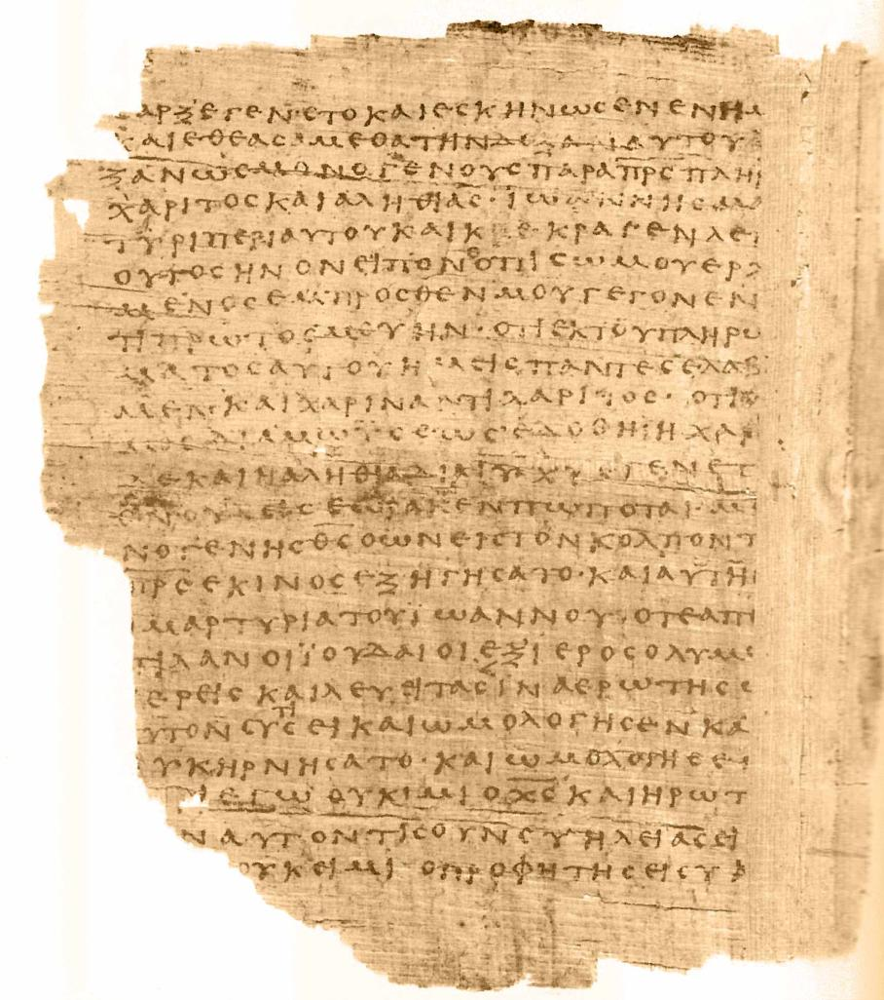
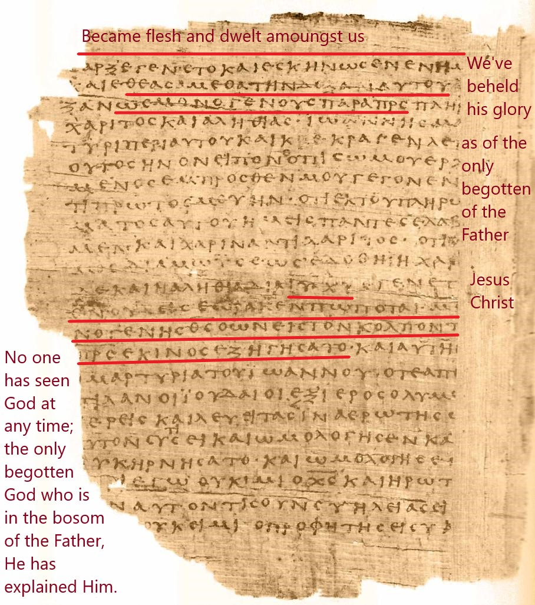

Wherever Jesus went they wanted to kill Him because He made Himself out to be God
John 5:18 - This was why the Jews were seeking all the more to kill him, because not only was he breaking the Sabbath, but he was even calling God his own Father, making himself equal with God.
John 10:30-33 - I and the Father are one.” The Jews picked up stones again to stone him. Jesus answered them, “I have shown you many good works from the Father; for which of them are you going to stone me?” The Jews answered him, “It is not for a good work that we are going to stone you but for blasphemy, because you, being a man, make yourself God.”
He used God personal name for Himself
Ex 3:14-15 - God said to Moses, “I am who I am.” And he said, “Say this to the people of Israel: ‘I am has sent me to you.’ ” God also said to Moses, “Say this to the people of Israel: ‘The Lord, the God of your fathers, the God of Abraham, the God of Isaac, and the God of Jacob, has sent me to you.’ This is my name forever, and thus I am to be remembered throughout all generations.
Ex 3:14-15 - God said to Moses, “I am who I am.” And he said, “Say this to the people of Israel: ‘I am has sent me to you.’ ” God also said to Moses, “Say this to the people of Israel: ‘The Lord, the God of your fathers, the God of Abraham, the God of Isaac, and the God of Jacob, has sent me to you.’ This is my name forever, and thus I am to be remembered throughout all generations.
John 8:58 - Jesus said to them, “Truly, truly, I say to you, before Abraham was, I am.”, So they picked up stones to throw at him
He used God's titles for Himself
Rev 1:8 - “I am the Alpha and the Omega,” says the Lord God, “who is and who was and who is to come, the Almighty.”
Rev 22:13 - I am the Alpha and the Omega, the first and the last, the beginning and the end.”
Prophecy that Jesus would be God Himself
Isa 9:6 - For to us a child is born, to us a son is given; and the government shall be upon his shoulder, and his name shall be called Wonderful Counselor, Mighty God, Everlasting Father, Prince of Peace.
Mat 1:23 - “Behold, the virgin shall conceive and bear a son, and they shall call his name Immanuel” (which means, God with us).
Jesus was God in the beginning
John 1:1 - In the beginning was the Word, and the Word was with God, and the Word was God.
John 1:14 - And the Word became flesh and dwelt among us, and we have seen his glory, glory as of the only Son from the Father, full of grace and truth.
Jesus was the fullness of God in the flesh
Col 2:9-10 - For in him the whole fullness of deity dwells bodily, and you have been filled in him, who is the head of all rule and authority.
Phil 2:6 - who, though he was in the form of God, did not count equality with God a thing to be grasped,
Jesus called God in scripture
Heb 1:8-9 But of the Son he says, “Your throne, O God, is forever and ever, the scepter of uprightness is the scepter of your kingdom. You have loved righteousness and hated wickedness; therefore God, your God, has anointed you with the oil of gladness beyond your companions.”
Rom 9:5 - To them belong the patriarchs, and from their race, according to the flesh, is the Christ, who is God over all, blessed forever. Amen.
Titus 2:13 - waiting for our blessed hope, the appearing of the glory of our great God and Savior Jesus Christ,
John 20:28 - Thomas answered him, “My Lord and my God!”
John 1:18 - No one has ever seen God; the only God, who is at the Father’s side, he has made him known.
1 John 5:20 - And we know that the Son of God has come and has given us understanding, so that we may know him who is true; and we are in him who is true, in his Son Jesus Christ. He is the true God and eternal life.
2 Peter 1:1 - Simon Peter, a servant and apostle of Jesus Christ, To those who have obtained a faith of equal standing with ours by the righteousness of our God and Savior Jesus Christ:
Jesus claimed to be God and did works to prove it
John 10:38 - but if I do them, even though you do not believe me, believe the works, that you may know and understand that the Father is in me and I am in the Father.”
Jesus forgive sins
Mat 9:2 - And behold, some people brought to him a paralytic, lying on a bed. And when Jesus saw their faith, he said to the paralytic, “Take heart, my son; your sins are forgiven.”
Mat 9:6 - But that you may know that the Son of Man has authority on earth to forgive sins”—he then said to the paralytic—“Rise, pick up your bed and go home.”
Jesus was worshipped
Heb 1:6 - And again, when he brings the firstborn into the world, he says, “Let all God’s angels worship him.”
Matt 28:9 - And behold, Jesus met them and said, “Greetings!” And they came up and took hold of his feet and worshiped him.
Matt 14:33 - And those in the boat worshiped him, saying, “Truly you are the Son of God.”
Rev 1:17 - When I saw him, I fell at his feet as though dead. But he laid his right hand on me, saying, “Fear not, I am the first and the last,
Jesus created things
Col 1:16 - For by him all things were created, in heaven and on earth, visible and invisible, whether thrones or dominions or rulers or authorities—all things were created through him and for him.
John 1:3 - All things were made through him, and without him was not any thing made that was made.
Jesus upholds the universe
Heb 1:3 - He is the radiance of the glory of God and the exact imprint of his nature, and he upholds the universe by the word of his power. After making purification for sins, he sat down at the right hand of the Majesty on high,
Jesus has the incommunicable attributes of God
Heb 13:8 - Jesus Christ is the same yesterday and today and forever.
Col 1:15 - He is the image of the invisible God, the firstborn of all creation.
John 14:9 - Jesus said to him, “Have I been with you so long, and you still do not know me, Philip? Whoever has seen me has seen the Father. How can you say, ‘Show us the Father’?
Jesus was glorified before creation
John 17:5 - And now, Father, glorify me in your own presence with the glory that I had with you before the world existe
When Isaiah saw His glory.
Isaiah 6:1 - "In the year that King Uzziah died I saw the Lord sitting upon a throne, high and lifted up; and the train of his robe filled the temple."
John 12:40-41 - "He has blinded their eyes and hardened their heart, lest they see with their eyes, and understand with their heart, and turn, and I would heal them." Isaiah said these things because he saw his glory and spoke of him.
Born of a virgin.
Isaiah 7:14 - "Therefore the Lord himself will give you a sign. Behold, the virgin shall conceive and bear a son, and shall call his name Immanuel."
Luke 1:35 - "And the angel answered her, 'The Holy Spirit will come upon you, and the power of the Most High will overshadow you; therefore the child to be born will be called holy—the Son of God.'"
Emmanuel - God with us.
Isaiah 7:14, 8:8 - "Behold, the virgin shall conceive and bear a son, and shall call his name Immanuel. It shall sweep on into Judah, it shall overflow and pass on, reaching even to the neck, and its outspread wings will fill the breadth of your land, O Immanuel."
Matthew 1:23 - "Behold, the virgin shall conceive and bear a son, and they shall call his name Immanuel (which means, God with us)."
Stone of stumbling and Rock of offense.
Isaiah 8:14 - "And he will become a sanctuary and a stone of offense and a rock of stumbling to both houses of Israel, a trap and a snare to the inhabitants of Jerusalem."
1 Peter 2:8 - "A stone of stumbling, and a rock of offense.' They stumble because they disobey the word, as they were destined to do."
Jesus' ministry to begin in Galilee.
Isaiah 9:1-2 - "But there will be no gloom for her who was in anguish. In the former time he brought into contempt the land of Zebulun and the land of Naphtali, but in the latter time he has made glorious the way of the sea, the land beyond the Jordan, Galilee of the nations. The people who walked in darkness have seen a great light; those who dwelt in a land of deep darkness, on them has light shone."
Matthew 4:12-17 - "Now when he heard that John had been arrested, he withdrew into Galilee. And leaving Nazareth he went and lived in Capernaum by the sea, in the territory of Zebulun and Naphtali, so that what was spoken by the prophet Isaiah might be fulfilled: 'The land of Zebulun and the land of Naphtali, the way of the sea, beyond the Jordan, Galilee of the Gentiles—the people dwelling in darkness have seen a great light, and for those dwelling in the region and shadow of death, on them a light has dawned.' From that time Jesus began to preach, saying, 'Repent, for the kingdom of heaven is at hand.'"
Humanity of child is born.
Isaiah 9:6 - "For to us a child is born, to us a son is given; and the government shall be upon his shoulder, and his name shall be called Wonderful Counselor, Mighty God, Everlasting Father, Prince of Peace."
Luke 1:31 - "And behold, you will conceive in your womb and bear a son, and you shall call his name Jesus."
Deity of Son is given.
Isaiah 9:6 - "For to us a child is born, to us a son is given; and the government shall be upon his shoulder, and his name shall be called Wonderful Counselor, Mighty God, Everlasting Father, Prince of Peace."
Luke 1:32 - "He will be great and will be called the Son of the Most High. And the Lord God will give to him the throne of his father David."
The Wonderful one.
Isaiah 9:6 - "For to us a child is born, to us a son is given; and the government shall be upon his shoulder, and his name shall be called Wonderful Counselor, Mighty God, Everlasting Father, Prince of Peace."
Luke 4:22 - "And all spoke well of him and marveled at the gracious words that were coming from his mouth. And they said, 'Is not this Joseph's son?'"
The Counselor.
Isaiah 9:6 - "For to us a child is born, to us a son is given; and the government shall be upon his shoulder, and his name shall be called Wonderful Counselor, Mighty God, Everlasting Father, Prince of Peace."
Matthew 13:54 - "And coming to his hometown he taught them in their synagogue, so that they were astonished, and said, 'Where did this man get this wisdom and these mighty works?'"
The Mighty God.
Isaiah 9:6 - "For to us a child is born, to us a son is given; and the government shall be upon his shoulder, and his name shall be called Wonderful Counselor, Mighty God, Everlasting Father, Prince of Peace."
Luke 19:37 - "As he was drawing near—already on the way down the Mount of Olives—the whole multitude of his disciples began to rejoice and praise God with a loud voice for all the mighty works that they had seen."
The everlasting Father.
Isaiah 9:6 - "For to us a child is born, to us a son is given; and the government shall be upon his shoulder, and his name shall be called Wonderful Counselor, Mighty God, Everlasting Father, Prince of Peace."
John 10:30 - "I and the Father are one."
The Prince of Peace.
Isaiah 9:6 - "For to us a child is born, to us a son is given; and the government shall be upon his shoulder, and his name shall be called Wonderful Counselor, Mighty God, Everlasting Father, Prince of Peace."
Luke 2:14 - "Glory to God in the highest, and on earth peace among those with whom he is pleased!"
"There shall be no end" to His kingdom.
Isaiah 9:7 - "Of the increase of his government and of peace there will be no end, on the throne of David and over his kingdom, to establish it and to uphold it with justice and with righteousness from this time forth and forevermore. The zeal of the LORD of hosts will do this."
Luke 1:32-33 - "He will be great and will be called the Son of the Most High. And the Lord God will give to him the throne of his father David, and he will reign over the house of Jacob forever, and of his kingdom there will be no end."
His judgment is just.
Isaiah 9:7 - "Of the increase of his government and of peace there will be no end, on the throne of David and over his kingdom, to establish it and to uphold it with justice and with righteousness from this time forth and forevermore. The zeal of the LORD of hosts will do this."
John 5:30 - "I can do nothing on my own. As I hear, I judge, and my judgment is just, because I seek not my own will but the will of him who sent me."
Spirit of the Lord shall rest upon Him.
Isaiah 11:2 - "And the Spirit of the LORD shall rest upon him, the Spirit of wisdom and understanding, the Spirit of counsel and might, the Spirit of knowledge and the fear of the LORD."
Matthew 3:16-17 - "And when Jesus was baptized, immediately he went up from the water, and behold, the heavens were opened to him, and he saw the Spirit of God descending like a dove and coming to rest on him; and behold, a voice from heaven said, 'This is my beloved Son, with whom I am well pleased.'"
Has the Spirit of wisdom.
Isaiah 11:2 - "And the Spirit of the LORD shall rest upon him, the Spirit of wisdom and understanding, the Spirit of counsel and might, the Spirit of knowledge and the fear of the LORD."
Luke 2:40 - "And the child grew and became strong, filled with wisdom. And the favor of God was upon him."
Has the Spirit of understanding.
Isaiah 11:2 - "And the Spirit of the LORD shall rest upon him, the Spirit of wisdom and understanding, the Spirit of counsel and might, the Spirit of knowledge and the fear of the LORD."
Luke 2:40 - "And the child grew and became strong, filled with wisdom. And the favor of God was upon him."
Has the Spirit of counsel.
Isaiah 11:2 - "And the Spirit of the LORD shall rest upon him, the Spirit of wisdom and understanding, the Spirit of counsel and might, the Spirit of knowledge and the fear of the LORD."
Matthew 7:28-29 - "And when Jesus finished these sayings, the crowds were astonished at his teaching, for he was teaching them as one who had authority, and not as their scribes."
Has the Spirit of might.
Isaiah 11:2 - "And the Spirit of the LORD shall rest upon him, the Spirit of wisdom and understanding, the Spirit of counsel and might, the Spirit of knowledge and the fear of the LORD."
Matthew 8:27 - "And the men marveled, saying, 'What sort of man is this, that even winds and sea obey him?'"
Has the Spirit of knowledge.
Isaiah 11:2 - "And the Spirit of the LORD shall rest upon him, the Spirit of wisdom and understanding, the Spirit of counsel and might, the Spirit of knowledge and the fear of the LORD."
John 7:29 - "I know him, for I come from him, and he sent me."
Has the fear of the Lord.
Isaiah 11:2 - "And the Spirit of the LORD shall rest upon him, the Spirit of wisdom and understanding, the Spirit of counsel and might, the Spirit of knowledge and the fear of the LORD."
Hebrews 5:7 - "In the days of his flesh, Jesus offered up prayers and supplications, with loud cries and tears, to him who was able to save him from death, and he was heard because of his reverence."
Root of Jesse.
Isaiah 11:10 - "In that day the root of Jesse, who shall stand as a signal for the peoples—of him shall the nations inquire, and his resting place shall be glorious."
Romans 15:12 - "And again Isaiah says, 'The root of Jesse will come, even he who arises to rule the Gentiles; in him will the Gentiles hope.'"
Jehovah has become my salvation.
Isaiah 12:2 - "Behold, God is my salvation; I will trust, and will not be afraid; for the LORD GOD is my strength and my song, and he has become my salvation."
Matthew 1:21 - "She will bear a son, and you shall call his name Jesus, for he will save his people from their sins."
Reign from His throne.
Isaiah 16:5 - "Then a throne will be established in steadfast love, and on it will sit in faithfulness in the tent of David one who judges and seeks justice and is swift to do righteousness."
Luke 1:31-33 - "And behold, you will conceive in your womb and bear a son, and you shall call his name Jesus. He will be great and will be called the Son of the Most High. And the Lord God will give to him the throne of his father David, and he will reign over the house of Jacob forever, and of his kingdom there will be no end."
Will have the key of David.
Isaiah 22:22 - "And I will place on his shoulder the key of the house of David. He shall open, and none shall shut; and he shall shut, and none shall open."
Revelation 3:7 - "And to the angel of the church in Philadelphia write: 'The words of the holy one, the true one, who has the key of David, who opens and no one will shut, who shuts and no one opens.'"
He will "swallow up death in victory".
Isaiah 25:8 - "He will swallow up death forever; and the Lord GOD will wipe away tears from all faces, and the reproach of his people he will take away from all the earth, for the LORD has spoken."
1 Corinthians 15:54 - "When the perishable puts on the imperishable, and the mortal puts on immortality, then shall come to pass the saying that is written: 'Death is swallowed up in victory.'"
Jesus is the precious corner stone.
Isaiah 28:16 - "Therefore thus says the Lord GOD, 'Behold, I am the one who has laid as a foundation in Zion, a stone, a tested stone, a precious cornerstone, of a sure foundation: Whoever believes will not be in haste.'"
Acts 4:11-12 - "This Jesus is the stone that was rejected by you, the builders, which has become the cornerstone. And there is salvation in no one else, for there is no other name under heaven given among men by which we must be saved."
Hearts would be removed from Him and His Word.
Isaiah 29:13 - "And the Lord said: 'Because this people draw near with their mouth and honor me with their lips, while their hearts are far from me, and their fear of me is a commandment taught by men.'"
Matthew 15:7-9 - "You hypocrites! Well did Isaiah prophesy of you, when he said: 'This people honors me with their lips, but their heart is far from me; in vain do they worship me, teaching as doctrines the commandments of men.'"
Preaching of the gospel will confound the wisdom of the wise and the understanding of the prudent.
Isaiah 29:14 - "therefore, behold, I will again do wonderful things with this people, with wonder upon wonder; and the wisdom of their wise men shall perish, and the discernment of their discerning men shall be hidden."
1 Corinthians 1:18-19 - "For the word of the cross is folly to those who are perishing, but to us who are being saved it is the power of God. For it is written, 'I will destroy the wisdom of the wise, and the discernment of the discerning I will thwart.'"
He will come and save you.
Isaiah 35:4 - "Say to those who have an anxious heart, 'Be strong; fear not! Behold, your God will come with vengeance, with the recompense of God. He will come and save you.'"
Matthew 1:21 - "She will bear a son, and you shall call his name Jesus, for he will save his people from their sins."
Heal the blind, deaf, lame and dumb.
Isaiah 35:5-6 - "Then the eyes of the blind shall be opened, and the ears of the deaf unstopped; then shall the lame man leap like a deer, and the tongue of the mute sing for joy. For waters break forth in the wilderness, and streams in the desert."
John 9:1-7 - "As he passed by, he saw a man blind from birth. And his disciples asked him, 'Rabbi, who sinned, this man or his parents, that he was born blind?' Jesus answered, 'It was not that this man sinned, or his parents, but that the works of God might be displayed in him. We must work the works of him who sent me while it is day; night is coming, when no one can work. As long as I am in the world, I am the light of the world.' Having said these things, he spat on the ground and made mud with the saliva. Then he anointed the man's eyes with the mud and said to him, 'Go, wash in the pool of Siloam' (which means Sent). So he went and washed and came back seeing."
Preceded by "one crying in the wilderness".
Isaiah 40:3 - "A voice cries: 'In the wilderness prepare the way of the LORD; make straight in the desert a highway for our God.'"
John 1:23 - "He said, 'I am the voice of one crying out in the wilderness, "Make straight the way of the Lord," as the prophet Isaiah said.'"
He would be as a shepherd.
Isaiah 40:11 - "He will tend his flock like a shepherd; he will gather the lambs in his arms; he will carry them in his bosom, and gently lead those that are with young."
John 10:11 - "I am the good shepherd. The good shepherd lays down his life for the sheep."
Chosen servant.
Isaiah 42:1-4 - "Behold my servant, whom I uphold, my chosen, in whom my soul delights; I have put my Spirit upon him; he will bring forth justice to the nations. He will not cry aloud or lift up his voice, or make it heard in the street; a bruised reed he will not break, and a faintly burning wick he will not quench; he will faithfully bring forth justice. He will not grow faint or be discouraged till he has established justice in the earth; and the coastlands wait for his law."
Matthew 12:15-21 - "Jesus, aware of this, withdrew from there. And many followed him, and he healed them all and ordered them not to make him known. This was to fulfill what was spoken by the prophet Isaiah: 'Behold, my servant whom I have chosen, my beloved with whom my soul is well pleased. I will put my Spirit upon him, and he will proclaim justice to the Gentiles. He will not quarrel or cry aloud, nor will anyone hear his voice in the streets; a bruised reed he will not break, and a smoldering wick he will not quench, until he brings justice to victory; and in his name the Gentiles will hope.'"
The Light of the Gentiles.
Isaiah 42:6 - "I am the LORD; I have called you in righteousness; I will take you by the hand and keep you; I will give you as a covenant for the people, a light for the nations."
Luke 2:32 - "a light for revelation to the Gentiles, and for glory to your people Israel."
He would heal the blind.
Isaiah 42:7 - "to open the eyes that are blind, to bring out the prisoners from the dungeon, from the prison those who sit in darkness."
Matthew 9:37-20 - "Then he said to his disciples, 'The harvest is plentiful, but the laborers are few; therefore pray earnestly to the Lord of the harvest to send out laborers into his harvest.'"
Jesus is the only Savior.
Isaiah 43:11 - "'I, I am the LORD, and besides me there is no savior.'"
Acts 4:12 - "And there is salvation in no one else, for there is no other name under heaven given among men by which we must be saved."
He will pour out the Spirit of God.
Isaiah 44:3 - "For I will pour water on the thirsty land, and streams on the dry ground; I will pour my Spirit upon your offspring, and my blessing on your descendants."
Acts 2:1-2, 3-4 - "When the day of Pentecost arrived, they were all together in one place. And suddenly there came from heaven a sound like a mighty rushing wind, and it filled the entire house where they were sitting. And divided tongues as of fire appeared to them and rested on each one of them. And they were all filled with the Holy Spirit and began to speak in other tongues as the Spirit gave them utterance."
Every knee will bow, every tongue confess to God.
Isaiah 45:23 - "By myself I have sworn; from my mouth has gone out in righteousness a word that shall not return: 'To me every knee shall bow, every tongue shall swear allegiance.'"
Romans 14:11 - "For it is written, 'As I live, says the Lord, every knee shall bow to me, and every tongue shall confess to God.'"
The First and the Last.
Isaiah 48:12 - "'Listen to me, O Jacob, and Israel, whom I called! I am he; I am the first, and I am the last.'"
Revelation 1:17 - "When I saw him, I fell at his feet as though dead. But he laid his right hand on me, saying, 'Fear not, I am the first and the last.'"
He is our Redeemer.
Isaiah 48:17 - "Thus says the LORD, your Redeemer, the Holy One of Israel: 'I am the LORD your God, who teaches you to profit, who leads you in the way you should go.'"
Titus 2:14 - "who gave himself for us to redeem us from all lawlessness and to purify for himself a people for his own possession who are zealous for good works."
Jesus is called from the womb.
Isaiah 49:1 - "Listen to me, O coastlands, and give attention, you peoples from afar. The LORD called me from the womb, from the body of my mother he named my name."
Matthew 1:18 - "Now the birth of Jesus Christ took place in this way. When his mother Mary had been betrothed to Joseph, before they came together she was found to be with child from the Holy Spirit."
Jesus is a servant from the womb.
Isaiah 49:5 - "And now the LORD says, he who formed me from the womb to be his servant, to bring Jacob back to him; and that Israel might be gathered to him—for I am honored in the eyes of the LORD, and my God has become my strength."
Luke 1:31 - "And behold, you will conceive in your womb and bear a son, and you shall call his name Jesus."
He is salvation for Israel.
Isaiah 49:6 - "he says: 'It is too light a thing that you should be my servant to raise up the tribes of Jacob and to bring back the preserved of Israel; I will make you as a light for the nations, that my salvation may reach to the end of the earth.'"
Luke 2:29-32 - "Lord, now you are letting your servant depart in peace, according to your word; for my eyes have seen your salvation that you have prepared in the presence of all peoples, a light for revelation to the Gentiles, and for glory to your people Israel."
He is the light to the Gentiles
Isaiah 49:6 - "I will make you as a light for the nations, that my salvation may reach to the end of the earth."
Acts 13:47-48 - "For so the Lord has commanded us, saying, 'I have made you a light for the Gentiles, that you may bring salvation to the ends of the earth.' - And when the Gentiles heard this, they began rejoicing and glorifying the word of the Lord, and as many as were appointed to eternal life believed."
Jesus is salvation unto the ends of the earth
Isaiah 49:6 - "he says: 'It is too light a thing that you should be my servant to raise up the tribes of Jacob and to bring back the preserved of Israel; I will make you as a light for the nations, that my salvation may reach to the end of the earth.'"
Acts 15:7-18 - "And after there had been much debate, Peter stood up and said to them, 'Brothers, you know that in the early days God made a choice among you, that by my mouth the Gentiles should hear the word of the gospel and believe. And God, who knows the heart, bore witness to them, by giving them the Holy Spirit just as he did to us, and he made no distinction between us and them, having cleansed their hearts by faith. Now, therefore, why are you putting God to the test by placing a yoke on the neck of the disciples that neither our fathers nor we have been able to bear? But we believe that we will be saved through the grace of the Lord Jesus, just as they will.' And all the assembly fell silent, and they listened to Barnabas and Paul as they related what signs and wonders God had done through them among the Gentiles. After they finished speaking, James replied, 'Brothers, listen to me. Simeon has related how God first visited the Gentiles, to take from them a people for his name. And with this the words of the prophets agree, just as it is written, 'After this I will return, and I will rebuild the tent of David that has fallen; I will rebuild its ruins, and I will restore it, that the remnant of mankind may seek the Lord, and all the Gentiles who are called by my name, says the Lord, who makes these things known from of old.'"
Jesus will speak a word in season to him that is weary
Isaiah 50:4 - "The Lord God has given me the tongue of those who are taught, that I may know how to sustain with a word him who is weary. Morning by morning he awakens; he awakens my ear to hear as those who are taught."
Matthew 11:28-29 - "Come to me, all who labor and are heavy laden, and I will give you rest. Take my yoke upon you, and learn from me, for I am gentle and lowly in heart, and you will find rest for your souls."
Jesus would not be rebellious to the will of God
Isaiah 50:5 - "The Lord God has opened my ear, and I was not rebellious; I turned not backward."
John 12:27 - "Now is my soul troubled. And what shall I say? 'Father, save me from this hour'? But for this purpose I have come to this hour."
His back was whipped
Isaiah 50:6 - "I gave my back to those who strike, and my cheeks to those who pull out the beard; I hid not my face from disgrace and spitting."
Matthew 27:26 - "Then he released for them Barabbas, and having scourged Jesus, delivered him to be crucified."
His cheeks were smitten
Isaiah 50:6 - "I gave my back to those who strike, and my cheeks to those who pull out the beard; I hid not my face from disgrace and spitting."
Matthew 26:67 - "Then they spit in his face and struck him. And some slapped him,"
His face was spat upon
Isaiah 50:6 - "I gave my back to those who strike, and my cheeks to those who pull out the beard; I hid not my face from disgrace and spitting."
Matthew 27:30 - "And they spit on him and took the reed and struck him on the head."
I hope this formatting meets your requirements. If you have any more requests, feel free to ask!
"How beautiful are the feet of them that preach the gospel"
Isaiah 52:7 - "How beautiful upon the mountains are the feet of him who brings good news, who publishes peace, who brings good news of happiness, who publishes salvation, who says to Zion, 'Your God reigns!'"
Romans 10:13,14-15 - "For 'everyone who calls on the name of the Lord will be saved.' How then will they call on him in whom they have not believed? And how are they to believe in him of whom they have never heard? And how are they to hear without someone preaching? And how are they to preach unless they are sent? As it is written, 'How beautiful are the feet of those who preach the good news!'"
Jesus would be highly exalted
Isaiah 52:13 - "Behold, my servant shall act wisely; he shall be high and lifted up, and shall be exalted."
Philippians 2:9-11 - "Therefore God has highly exalted him and bestowed on him the name that is above every name, so that at the name of Jesus every knee should bow, in heaven and on earth and under the earth, and every tongue confess that Jesus Christ is Lord, to the glory of God the Father."
Jesus is God's servant
Isaiah 52:13 - "Behold, my servant shall act wisely; he shall be high and lifted up, and shall be exalted."
Philippians 2:5-8 - "Have this mind among yourselves, which is yours in Christ Jesus, who, though he was in the form of God, did not count equality with God a thing to be grasped, but emptied himself, by taking the form of a servant, being born in the likeness of men. And being found in human form, he humbled himself by becoming obedient to the point of death, even death on a cross."
"His visage marred more than any man"
Isaiah 52:14 - "As many were astonished at you—his appearance was so marred, beyond human semblance, and his form beyond that of the children of mankind."
Luke 18:31-34 - "And taking the twelve, he said to them, 'See, we are going up to Jerusalem, and everything that is written about the Son of Man by the prophets will be accomplished. For he will be delivered over to the Gentiles and will be mocked and shamefully treated and spit upon. And after flogging him, they will kill him, and on the third day he will rise.' But they understood none of these things. This saying was hidden from them, and they did not grasp what was said."
Matthew 26:67-68 - "Then they spit in his face and struck him. And some slapped him, saying, 'Prophesy to us, you Christ! Who is it that struck you?'"
Matthew 27:26-30 - "Then he released for them Barabbas, and having scourged Jesus, delivered him to be crucified. Then the soldiers of the governor took Jesus into the governor's headquarters, and they gathered the whole battalion before him. And they stripped him and put a scarlet robe on him, and twisting together a crown of thorns, they put it on his head and put a reed in his right hand. And kneeling before him, they mocked him, saying, 'Hail, King of the Jews!' And they spit on him and took the reed and struck him on the head."
Gospel of Jesus Christ is for all
Isaiah 52:15 - "so shall he sprinkle many nations. Kings shall shut their mouths because of him, for that which has not been told them they see, and that which they have not heard they understand."
Romans 15:18-21 - "For I will not venture to speak of anything except what Christ has accomplished through me to bring the Gentiles to obedience—by word and deed, by the power of signs and wonders, by the power of the Spirit of God—so that from Jerusalem and all the way around to Illyricum I have fulfilled the ministry of the gospel of Christ; and thus I make it my ambition to preach the gospel, not where Christ has already been named, lest I build on someone else's foundation, but as it is written, 'Those who have never been told of him will see, and those who have never heard will understand.'"
They didn't believe on Him
Isaiah 53:1 - "Who has believed what he has heard from us? And to whom has the arm of the Lord been revealed?"
John 12:37-38 - "Though he had done so many signs before them, they still did not believe in him, so that the word spoken by the prophet Isaiah might be fulfilled: 'Lord, who has believed what he heard from us, and to whom has the arm of the Lord been revealed?'"
Would grow up in a poor family
Isaiah 53:2 - "For he grew up before him like a young plant, and like a root out of dry ground; he had no form or majesty that we should look at him, and no beauty that we should desire him."
Luke 2:7 - "And she gave birth to her firstborn son and wrapped him in swaddling cloths and laid him in a manger because there was no place for them in the inn."
Would have appearance of an ordinary man
Isaiah 53:2 - "For he grew up before him like a young plant, and like a root out of dry ground; he had no form or majesty that we should look at him, and no beauty that we should desire him."
Phil. 2:7-8 - "but emptied himself, by taking the form of a servant, being born in the likeness of men. And being found in human form, he humbled himself by becoming obedient to the point of death, even death on a cross."
Would be despised
Isaiah 53:3 - "He was despised and rejected by men, a man of sorrows and acquainted with grief; and as one from whom men hide their faces he was despised, and we esteemed him not."
Luke 4:28-29 - "When they heard these things, all in the synagogue were filled with wrath. And they rose up and drove him out of the town and brought him to the brow of the hill on which their town was built, so that they could throw him down the cliff."
Would be rejected
Isaiah 53:3 - "He was despised and rejected by men, a man of sorrows and acquainted with grief; and as one from whom men hide their faces he was despised, and we esteemed him not."
Matthew 27:21-23 - "The governor again said to them, 'Which of the two do you want me to release for you?' And they said, 'Barabbas.' Pilate said to them, 'Then what shall I do with Jesus who is called Christ?' They all said, 'Let him be crucified!' And he said, 'Why? What evil has he done?' But they shouted all the more, 'Let him be crucified!'"
Would have great sorrow and grief
Isaiah 53:3 - "He was despised and rejected by men, a man of sorrows and acquainted with grief; and as one from whom men hide their faces he was despised, and we esteemed him not."
Luke 19:41-42 - "And when he drew near and saw the city, he wept over it, saying, 'Would that you, even you, had known on this day the things that make for peace! But now they are hidden from your eyes.'"
Would hide from being associated with Him
Isaiah 53:3 - "He was despised and rejected by men, a man of sorrows and acquainted with grief; and as one from whom men hide their faces he was despised, and we esteemed him not."
Mark 14:50-52 - "And they all left him and fled. And a young man followed him, with nothing but a linen cloth about his body. And they seized him, but he left the linen cloth and ran away naked."
Matthew 26:73-74 - "After a little while the bystanders came up and said to Peter, 'Certainly you too are one of them, for your accent betrays you.' Then he began to invoke a curse on himself and to swear, 'I do not know the man.' And immediately the rooster crowed."
Would have a healing ministry
Isaiah 53:4 - "Surely he has borne our griefs and carried our sorrows; yet we esteemed him stricken, smitten by God, and afflicted."
Matthew 8:16-17 - "That evening they brought to him many who were oppressed by demons, and he cast out the spirits with a word and healed all who were sick. This was to fulfill what was spoken by the prophet Isaiah: 'He took our illnesses and bore our diseases.'"
Would bear the sins of the world
Isaiah 53:4 - "Surely he has borne our griefs and carried our sorrows; yet we esteemed him stricken, smitten by God, and afflicted."
1 Peter 3:18 - "For Christ also suffered once for sins, the righteous for the unrighteous, that he might bring us to God, being put to death in the flesh but made alive in the spirit."
Would be thought to be cursed by God
Isaiah 53:4 - "Surely he has borne our griefs and carried our sorrows; yet we esteemed him stricken, smitten by God, and afflicted."
Matthew 27:41-43 - "So also the chief priests, with the scribes and elders, mocked him, saying, 'He saved others; he cannot save himself. He is the King of Israel; let him come down now from the cross, and we will believe in him. He trusts in God; let God deliver him now, if he desires him. For he said, "I am the Son of God."'"
Would bear the penalty for our transgressions
Isaiah 53:5 - "But he was pierced for our transgressions; he was crushed for our iniquities; upon him was the chastisement that brought us peace, and with his wounds, we are healed."
Luke 23:33 - "And when they came to the place that is called The Skull, there they crucified him, and the criminals, one on his right and one on his left."
His sacrifice would provide peace between man and Himself
Isaiah 53:5 - "But he was pierced for our transgressions; he was crushed for our iniquities; upon him was the chastisement that brought us peace, and with his wounds, we are healed."
Colossians 1:20 - "And through him to reconcile to himself all things, whether on earth or in heaven, making peace by the blood of his cross."
Healing comes by the blood of Christ
Isaiah 53:5 - "But he was pierced for our transgressions; he was crushed for our iniquities; upon him was the chastisement that brought us peace, and with his wounds, we are healed."
1 Peter 2:24 - "He himself bore our sins in his body on the tree, that we might die to sin and live to righteousness. By his wounds, you have been healed."
He would be the sin-bearer for all mankind
Isaiah 53:6 - "All we like sheep have gone astray; we have turned—every one—to his own way; and the LORD has laid on him the iniquity of us all."
Galatians 1:4 - "Who gave himself for our sins to deliver us from the present evil age, according to the will of our God and Father."
God manifested himself in the flesh to bear our sins
Isaiah 53:6 - "All we like sheep have gone astray; we have turned—every one—to his own way; and the LORD has laid on him the iniquity of us all."
1 John 4:10 - "In this is love, not that we have loved God but that he loved us and sent his Son to be the propitiation for our sins."
He was oppressed and afflicted
Isaiah 53:7 - "He was oppressed, and he was afflicted, yet he opened not his mouth; like a lamb that is led to the slaughter, and like a sheep that before its shearers is silent, so he opened not his mouth."
Matthew 27:27-31 - "Then the soldiers of the governor took Jesus into the governor's headquarters, and they gathered the whole battalion before him. And they stripped him and put a scarlet robe on him, and twisting together a crown of thorns, they put it on his head and put a reed in his right hand. And kneeling before him, they mocked him, saying, 'Hail, King of the Jews!' And they spit on him and took the reed and struck him on the head. And when they had mocked him, they stripped him of the robe and put his own clothes on him and led him away to crucify him."
He was silent before his accusers
Isaiah 53:7 - "He was oppressed, and he was afflicted, yet he opened not his mouth; like a lamb that is led to the slaughter, and like a sheep that before its shearers is silent, so he opened not his mouth."
Matthew 27:12-14 - "But when he was accused by the chief priests and elders, he gave no answer. Then Pilate said to him, 'Do you not hear how many things they testify against you?' But he gave him no answer, not even to a single charge, so that the governor was greatly amazed."
He was the sacrificial lamb
Isaiah 53:7 - "He was oppressed, and he was afflicted, yet he opened not his mouth; like a lamb that is led to the slaughter, and like a sheep that before its shearers is silent, so he opened not his mouth."
John 1:29 - "The next day he saw Jesus coming toward him, and said, 'Behold, the Lamb of God, who takes away the sin of the world!'"
He would be judged
Isaiah 53:8 - "By oppression and judgment he was taken away; and as for his generation, who considered that he was cut off out of the land of the living, stricken for the transgression of my people?"
Matthew 27:22 - "Pilate said to them, 'Then what shall I do with Jesus who is called Christ?' They all said, 'Let him be crucified!'"
"Cut off from the land of the living"
Isaiah 53:8 - "By oppression and judgment he was taken away; and as for his generation, who considered that he was cut off out of the land of the living, stricken for the transgression of my people?"
Matthew 27:35 - "And when they had crucified him, they divided his garments among them by casting lots."
Dies for the sins of the whole world
Isaiah 53:8 - "By oppression and judgment he was taken away; and as for his generation, who considered that he was cut off out of the land of the living, stricken for the transgression of my people?"
1 John 2:2 - "He is the propitiation for our sins, and not for ours only but also for the sins of the whole world."
Buried in a rich man's tomb
Isaiah 53:9 - "And they made his grave with the wicked and with a rich man in his death, although he had done no violence, and there was no deceit in his mouth."
Matthew 27:57-60 - "When it was evening, there came a rich man from Arimathea, named Joseph, who also was a disciple of Jesus. He went to Pilate and asked for the body of Jesus. Then Pilate ordered it to be given to him. And Joseph took the body and wrapped it in a clean linen shroud and laid it in his own new tomb, which he had cut in the rock. And he rolled a great stone to the entrance of the tomb and went away."
Innocent and had done no violence
Isaiah 53:9 - "And they made his grave with the wicked and with a rich man in his death, although he had done no violence, and there was no deceit in his mouth."
John 18:38 - "Pilate said to him, 'What is truth?' After he had said this, he went back outside to the Jews and told them, 'I find no guilt in him.'"
God's will that He die for mankind
Isaiah 53:10 - "Yet it was the will of the LORD to crush him; he has put him to grief; when his soul makes an offering for guilt, he shall see his offspring; he shall prolong his days; the will of the LORD shall prosper in his hand."
John 18:11 - "So Jesus said to Peter, 'Put your sword into its sheath; shall I not drink the cup that the Father has given me?'"
An offering for sin
Isaiah 53:10 - "Yet it was the will of the LORD to crush him; he has put him to grief; when his soul makes an offering for guilt, he shall see his offspring; he shall prolong his days; the will of the LORD shall prosper in his hand."
Hebrews 10:12 - "But when Christ had offered for all time a single sacrifice for sins, he sat down at the right hand of God."
Resurrected and live forever
Isaiah 53:10 - "Yet it was the will of the LORD to crush him; he has put him to grief; when his soul makes an offering for guilt, he shall see his offspring; he shall prolong his days; the will of the LORD shall prosper in his hand."
Revelation 1:17-18 - "When I saw him, I fell at his feet as though dead. But he laid his right hand on me, saying, 'Fear not, I am the first and the last, and the living one. I died, and behold I am alive forevermore, and I have the keys of Death and Hades.'"
He would prosper
Isaiah 53:10 - "Yet it was the will of the LORD to crush him; he has put him to grief; when his soul makes an offering for guilt, he shall see his offspring; he shall prolong his days; the will of the LORD shall prosper in his hand."
John 17:1-5 - "When Jesus had spoken these words, he lifted up his eyes to heaven, and said, 'Father, the hour has come; glorify your Son that the Son may glorify you, since you have given him authority over all flesh, to give eternal life to all whom you have given him. And this is eternal life, that they know you, the only true God, and Jesus Christ whom you have sent. I glorified you on earth, having accomplished the work that you gave me to do. And now, Father, glorify me in your own presence with the glory that I had with you before the world existed.'"
He is satisfied that He suffered
Isaiah 53:11 - "Out of the anguish of his soul he shall see and be satisfied; by his knowledge shall the righteous one, my servant, make many to be accounted righteous, and he shall bear their iniquities."
John 12:27 - "Now is my soul troubled. And what shall I say? 'Father, save me from this hour'? But for this purpose I have come to this hour."
God's servant
Isaiah 53:11 - "Out of the anguish of his soul he shall see and be satisfied; by his knowledge shall the righteous one, my servant, make many to be accounted righteous, and he shall bear their iniquities."
John 17:4 - "I glorified you on earth, having accomplished the work that you gave me to do."
He would justify many
Isaiah 53:11 - "Out of the anguish of his soul he shall see and be satisfied; by his knowledge shall the righteous one, my servant, make many to be accounted righteous, and he shall bear their iniquities."
Romans 5:8-9 - "But God shows his love for us in that while we were still sinners, Christ died for us. Since, therefore, we have now been justified by his blood, much more shall we be saved by him from the wrath of God."
He bore the sins of many
Isaiah 53:11-12 - "Out of the anguish of his soul he shall see and be satisfied; by his knowledge shall the righteous one, my servant, make many to be accounted righteous, and he shall bear their iniquities. Therefore I will divide him a portion with the many, and he shall divide the spoil with the strong, because he poured out his soul to death and was numbered with the transgressors; yet he bore the sin of many, and makes intercession for the transgressors."
Hebrews 9:28 - "So Christ, having been offered once to bear the sins of many, will appear a second time, not to deal with sin but to save those who are eagerly waiting for him."
He died for every man
Isaiah 53:12 - "Therefore I will divide him a portion with the many, and he shall divide the spoil with the strong, because he poured out his soul to death and was numbered with the transgressors; yet he bore the sin of many, and makes intercession for the transgressors."
Hebrews 2:9 - "But we see him who for a little while was made lower than the angels, namely Jesus, crowned with glory and honor because of the suffering of death, so that by the grace of God he might taste death for everyone."
"He was numbered with the transgressors"
Isaiah 53:12 - "Therefore I will divide him a portion with the many, and he shall divide the spoil with the strong, because he poured out his soul to death and was numbered with the transgressors; yet he bore the sin of many, and makes intercession for the transgressors."
Matthew 27:38 - "Then two robbers were crucified with him, one on the right and one on the left."
Jesus interceded for mankind
Isaiah 53:12 - "Therefore I will divide him a portion with the many, and he shall divide the spoil with the strong, because he poured out his soul to death and was numbered with the transgressors; yet he bore the sin of many, and makes intercession for the transgressors."
Luke 23:34 - "And Jesus said, 'Father, forgive them, for they know not what they do.' And they cast lots to divide his garments."
He raised Him up from the dead
Isaiah 55:3 - "Incline your ear, and come to me; hear, that your soul may live; and I will make with you an everlasting covenant, my steadfast, sure love for David."
Acts 13:34 - "And as for the fact that he raised him from the dead, no more to return to corruption, he has spoken in this way, 'I will give you the holy and sure blessings of David.'"
He was a witness for God
Isaiah 55:4 - "Behold, I made him a witness to the peoples, a leader and commander for the peoples."
John 18:37 - "Then Pilate said to him, 'So you are a king?' Jesus answered, 'You say that I am a king. For this purpose I was born and for this purpose I have come into the world—to bear witness to the truth. Everyone who is of the truth listens to my voice.'"
Sent as an intercessor for salvation of mankind
Isaiah 59:15-16 - "Truth is lacking, and he who departs from evil makes himself a prey. The LORD saw it, and it displeased him that there was no justice. He saw that there was no man, and wondered that there was no one to intercede; then his own arm brought him salvation, and his righteousness upheld him."
John 6:40 - "For this is the will of my Father, that everyone who looks on the Son and believes in him should have eternal life, and I will raise him up on the last day."
He came as the Redeemer for Zion
Isaiah 59:20 - "And a Redeemer will come to Zion, to those in Jacob who turn from transgression, declares the LORD."
Luke 2:38 - "And coming up at that very hour she began to give thanks to God and to speak of him to all who were waiting for the redemption of Jerusalem."
Jesus is the light for the world
Isaiah 60:1-3 - "Arise, shine, for your light has come, and the glory of the LORD has risen upon you. For behold, darkness shall cover the earth, and thick darkness the peoples; but the LORD will arise upon you, and his glory will be seen upon you. And nations shall come to your light, and kings to the brightness of your rising."
Luke 2:32 - "A light for revelation to the Gentiles, and for glory to your people Israel."
"The Spirit of the Lord is upon me"
Isaiah 61:1-2 - "The Spirit of the Lord GOD is upon me, because the LORD has anointed me to bring good news to the poor; he has sent me to bind up the brokenhearted, to proclaim liberty to the captives, and the opening of the prison to those who are bound; to proclaim the year of the LORD's favor, and the day of vengeance of our God; to comfort all who mourn."
Luke 4:18 - "The Spirit of the Lord is upon me because he has anointed me to proclaim good news to the poor. He has sent me to proclaim liberty to the captives and recovering of sight to the blind, to set at liberty those who are oppressed."
He would preach the gospel
Isaiah 61:1-2 - "The Spirit of the Lord GOD is upon me, because the LORD has anointed me to bring good news to the poor; he has sent me to bind up the brokenhearted, to proclaim liberty to the captives, and the opening of the prison to those who are bound; to proclaim the year of the LORD's favor, and the day of vengeance of our God; to comfort all who mourn."
Luke 4:18 - "The Spirit of the Lord is upon me because he has anointed me to proclaim good news to the poor. He has sent me to proclaim liberty to the captives and recovering of sight to the blind, to set at liberty those who are oppressed."
He would deliver sinners and set them free
Isaiah 61:1-2 - "The Spirit of the Lord GOD is upon me, because the LORD has anointed me to bring good news to the poor; he has sent me to bind up the brokenhearted, to proclaim liberty to the captives, and the opening of the prison to those who are bound; to proclaim the year of the LORD's favor, and the day of vengeance of our God; to comfort all who mourn."
Luke 4:18 - "The Spirit of the Lord is upon me because he has anointed me to proclaim good news to the poor. He has sent me to proclaim liberty to the captives and recovering of sight to the blind, to set at liberty those who are oppressed."
The Lord's grace began with His coming
Isaiah 61:1-2 - "The Spirit of the Lord GOD is upon me, because the LORD has anointed me to bring good news to the poor; he has sent me to bind up the brokenhearted, to proclaim liberty to the captives, and the opening of the prison to those who are bound; to proclaim the year of the LORD's favor, and the day of vengeance of our God; to comfort all who mourn."
Luke 4:19 - "To proclaim the year of the Lord's favor."
Called by a new name
Isaiah 62:1-2 - "For Zion's sake I will not keep silent, and for Jerusalem's sake I will not be quiet, until her righteousness goes forth as brightness, and her salvation as a burning torch. The nations shall see your righteousness, and all the kings your glory, and you shall be called by a new name that the mouth of the LORD will give."
Matthew 1:21 - "She will bear a son, and you shall call his name Jesus, for he will save his people from their sins."
The elect shall inherit
Isaiah 65:9 - "I will bring forth offspring from Jacob, and from Judah possessors of my mountains; my chosen shall possess it, and my servants shall dwell there."
Colossians 3:24 - "Knowing that from the Lord you will receive the inheritance as your reward. You are serving the Lord Christ."
Ephesians 1:11 - "In him we have obtained an inheritance, having been predestined according to the purpose of him who works all things according to the counsel of his will."
1 Peter 1:2-4 - "According to the foreknowledge of God the Father, in the sanctification of the Spirit, for obedience to Jesus Christ and for sprinkling with his blood: May grace and peace be multiplied to you. Blessed be the God and Father of our Lord Jesus Christ! According to his great mercy, he has caused us to be born again to a living hope through the resurrection of Jesus Christ from the dead, to an inheritance that is imperishable, undefiled, and unfading, kept in heaven for you."
Descendant of David
Jeremiah 23:5-6 - "Behold, the days are coming, declares the LORD, when I will raise up for David a righteous Branch, and he shall reign as king and deal wisely, and shall execute justice and righteousness in the land. In his days Judah will be saved, and Israel will dwell securely. And this is the name by which he will be called: 'The LORD is our righteousness.'"
Luke 3:23-31 - "Jesus, when he began his ministry, was about thirty years of age, being the son (as was supposed) of Joseph, the son of Heli... the son of Melea, the son of Menna, the son of Mattatha, the son of Nathan, the son of David..."
Messiah would be God
Jeremiah 23:5-6 - "Behold, the days are coming, declares the LORD, when I will raise up for David a righteous Branch, and he shall reign as king and deal wisely, and shall execute justice and righteousness in the land. In his days Judah will be saved, and Israel will dwell securely. And this is the name by which he will be called: 'The LORD is our righteousness.'"
John 13:13 - "You call me Teacher and Lord, and you are right, for so I am."
Messiah would be both God and man
Jeremiah 23:5-6 - "Behold, the days are coming, declares the LORD, when I will raise up for David a righteous Branch, and he shall reign as king and deal wisely, and shall execute justice and righteousness in the land. In his days Judah will be saved, and Israel will dwell securely. And this is the name by which he will be called: 'The LORD is our righteousness.'"
1 Timothy 3:16 - "Great indeed, we confess, is the mystery of godliness: He was manifested in the flesh, vindicated by the Spirit, seen by angels, proclaimed among the nations, believed on in the world, taken up in glory."
Born a King
Jeremiah 30:9 - "But they shall serve the LORD their God and David their king, whom I will raise up for them."
John 18:37 - "Then Pilate said to him, 'So you are a king?' Jesus answered, 'You say that I am a king. For this purpose, I was born, and for this purpose, I have come into the world—to bear witness to the truth. Everyone who is of the truth listens to my voice.'"
Revelation 1:5 - "and from Jesus Christ the faithful witness, the firstborn of the dead, and the ruler of kings on earth."
Massacre of infants
Jeremiah 31:15 - "Thus says the LORD: 'A voice is heard in Ramah, lamentation and bitter weeping. Rachel is weeping for her children; she refuses to be comforted for her children, because they are no more.'"
Matthew 2:16-18 - "Then Herod, when he saw that he had been tricked by the wise men, became furious, and he sent and killed all the male children in Bethlehem and in all that region who were two years old or under, according to the time that he had ascertained from the wise men. Then was fulfilled what was spoken by the prophet Jeremiah: 'A voice was heard in Ramah, weeping and loud lamentation, Rachel weeping for her children; she refused to be comforted because they are no more.'"
The Messiah would be the new covenant.
Jeremiah 31:31 - "Behold, the days are coming, declares the Lord, when I will make a new covenant with the house of Israel and the house of Judah."
Matthew 26:28 - "for this is my blood of the covenant, which is poured out for many for the forgiveness of sins."
Descendant of David.
Jeremiah 33:14-15 - Behold, the days are coming, declares the Lord, when I will fulfill the promise I made to the house of Israel and the house of Judah. In those days and at that time I will cause a righteous Branch to spring up for David, and he shall execute justice and righteousness in the land.
Luke 3:23-31 - [Genealogy of Jesus from Joseph to David]
Put new spirit in you.
Ezekiel 11:19; 37:14 - And I will give them one heart, and a new spirit I will put within them. I will remove the heart of stone from their flesh and give them a heart of flesh; And I will put my Spirit within you and cause you to walk in my statutes and be careful to obey my rules.
Acts 1:5; 2:4 - For John baptized with water, but you will be baptized with the Holy Spirit not many days from now; And they were all filled with the Holy Spirit and began to speak in other tongues as the Spirit gave them utterance.
Stony heart replaced with fleshly heart.
Ezekiel 11:19 - And I will give them one heart, and a new spirit I will put within them. I will remove the heart of stone from their flesh and give them a heart of flesh.
2 Corinthians 3:3 - And you show that you are a letter from Christ delivered by us, written not with ink but with the Spirit of the living God, not on tablets of stone but on tablets of human hearts.
They shall be my people, and I will be their God.
Ezekiel 11:20; 37:27 - That they may walk in my statutes and keep my rules and obey them. And they shall be my people, and I will be their God; My dwelling place shall be with them, and I will be their God, and they shall be my people.
2 Corinthians 6:16 - What agreement has the temple of God with idols? For we are the temple of the living God; as God said, "I will make my dwelling among them and walk among them, and I will be their God, and they shall be my people."
The humble exalted.
Ezekiel 21:26,27 - Thus says the Lord God: Remove the turban and take off the crown. Things shall not remain as they are. Exalt that which is low, and bring low that which is exalted. A ruin, ruin, ruin I will make it. This also shall not be, until he comes, the one to whom judgment belongs, and I will give it to him.
Luke 1:52 - He has brought down the mighty from their thrones and exalted those of humble estate.
Descendant of David.
Ezekiel 34:23-24 - And I will set up over them one shepherd, my servant David, and he shall feed them: he shall feed them and be their shepherd. And I, the Lord, will be their God, and my servant David shall be prince among them. I am the Lord; I have spoken.
Matthew 1:1 - The book of the genealogy of Jesus Christ, the son of David, the son of Abraham.
Stone cut without hands.
Daniel 2:34-35 - As you looked, a stone was cut out by no human hand, and it struck the image on its feet of iron and clay, and broke them in pieces. Then the iron, the clay, the bronze, the silver, and the gold, all together were broken in pieces, and became like the chaff of the summer threshing floors; and the wind carried them away, so that not a trace of them could be found. But the stone that struck the image became a great mountain and filled the whole earth.
Acts 4:10-12 - Let it be known to all of you and to all the people of Israel that by the name of Jesus Christ of Nazareth, whom you crucified, whom God raised from the dead—by him this man is standing before you well. This Jesus is the stone that was rejected by you, the builders, which has become the cornerstone. And there is salvation in no one else, for there is no other name under heaven given among men by which we must be saved.
His Kingdom stand forever.
Daniel 2:44 - And in the days of those kings the God of heaven will set up a kingdom that shall never be destroyed, nor shall the kingdom be left to another people. It shall break in pieces all these kingdoms and bring them to an end, and it shall stand forever.
Luke 1:33 - And he will reign over the house of Jacob forever, and of his kingdom there will be no end.
Revelation 11:15 - Then the seventh angel blew his trumpet, and there were loud voices in heaven, saying, "The kingdom of the world has become the kingdom of our Lord and of his Christ, and he shall reign forever and ever."
He would ascend into heaven.
Daniel 7:13-14 - I saw in the night visions, and behold, with the clouds of heaven there came one like a son of man, and he came to the Ancient of Days and was presented before him. And to him was given dominion and glory and a kingdom, that all peoples, nations, and languages should serve him; his dominion is an everlasting dominion, which shall not pass away, and his kingdom one that shall not be destroyed.
Acts 1:9-11 - And when he had said these things, as they were looking on, he was lifted up, and a cloud took him out of their sight. And while they were gazing into heaven as he went, behold, two men stood by them in white robes, and said, "Men of Galilee, why do you stand looking into heaven? This Jesus, who was taken up from you into heaven, will come in the same way as you saw him go into heaven."
Everlasting dominion.
Daniel 7:13-14 - I saw in the night visions, and behold, with the clouds of heaven there came one like a son of man, and he came to the Ancient of Days and was presented before him. And to him was given dominion and glory and a kingdom, that all peoples, nations, and languages should serve him; his dominion is an everlasting dominion, which shall not pass away, and his kingdom one that shall not be destroyed.
Luke 1:31-33 - And behold, you will conceive in your womb and bear a son, and you shall call his name Jesus. He will be great and will be called the Son of the Most High. And the Lord God will give to him the throne of his father David, and he will reign over the house of Jacob forever, and of his kingdom there will be no end.
Make an end to sins.
Daniel 9:24 - Seventy weeks are decreed about your people and your holy city, to finish the transgression, to put an end to sin, and to atone for iniquity, to bring in everlasting righteousness, to seal both vision and prophet, and to anoint a most holy place.
Hebrews 9:26 - For then he would have had to suffer repeatedly since the foundation of the world. But as it is, he has appeared once for all at the end of the ages to put away sin by the sacrifice of himself.
Killed.
Daniel 9:26 - And after the sixty-two weeks, an anointed one shall be cut off and shall have nothing. And the people of the prince who is to come shall destroy the city and the sanctuary. Its end shall come with a flood, and to the end there shall be war. Desolations are decreed.
Matthew 27:35 - And when they had crucified him, they divided his garments among them by casting lots.
Fear of the Lord.
Hosea 3:5 - "Afterward the children of Israel shall return and seek the Lord their God, and David their king, and they shall come in fear to Lord and to his goodness in the latter days."
Acts 9:31 - "So the church throughout all Judea and Galilee and Samaria had peace and was being built up. And walking in the fear of the Lord and in the comfort of the Holy Spirit, it multiplied."
Call out of Egypt.
Hosea 11:1 - "When Israel was a child, I loved him, and out of Egypt I called my son."
Matthew 2:14-15 - "And he rose and took the child and his mother by night and departed to Egypt and remained there until the death of Herod. This was to fulfill what the Lord had spoken by the prophet, 'Out of Egypt I called my son.'"
Jesus defeats death.
Hosea 13:14 - "Shall I ransom them from the power of Sheol? Shall I redeem them from Death? O Death, where are your plagues? O Sheol, where is your sting?"
1 Corinthians 15:55-57 - "O death, where is your victory? O death, where is your sting? The sting of death is sin, and the power of sin is the law. But thanks be to God, who gives us the victory through our Lord Jesus Christ."
This is that, baptism of the Spirit and speaking in tongues.
Joel 2:28-29 - "And it shall come to pass afterward, that I will pour out my Spirit on all flesh; your sons and your daughters shall prophesy, your old men shall dream dreams, and your young men shall see visions. Even on the male and female servants in those days I will pour out my Spirit."
Acts 2:1-4 - "When the day of Pentecost arrived, they were all together in one place. And suddenly there came from heaven a sound like a mighty rushing wind, and it filled the entire house where they were sitting. And divided tongues as of fire appeared to them and rested on each one of them. And they were all filled with the Holy Spirit and began to speak in other tongues as the Spirit gave them utterance."
Acts 2:14-22 - "But Peter, standing with the eleven, lifted up his voice and addressed them: 'Men of Judea and all who dwell in Jerusalem, let this be known to you, and give ear to my words. For these people are not drunk, as you suppose, since it is only the third hour of the day. But this is what was uttered through the prophet Joel: 'And in the last days it shall be, God declares, that I will pour out my Spirit on all flesh, and your sons and your daughters shall prophesy, and your young men shall see visions, and your old men shall dream dreams; even on my male servants and female servants in those days I will pour out my Spirit, and they shall prophesy. And I will show wonders in the heavens above and signs on the earth below, blood, and fire, and vapor of smoke; the sun shall be turned to darkness and the moon to blood, before the day of the Lord comes, the great and magnificent day. And it shall come to pass that everyone who calls upon the name of the Lord shall be saved.' Men of Israel, hear these words: Jesus of Nazareth, a man attested to you by God with mighty works and wonders and signs that God did through him in your midst, as you yourselves know."
Salvation for all.
Joel 2:32 - "And it shall come to pass that everyone who calls on the name of the Lord shall be saved. For in Mount Zion and in Jerusalem there shall be those who escape, as the Lord has said, and among the survivors shall be those whom the Lord calls."
Acts 2:37-39 - "Now when they heard this they were cut to the heart, and said to Peter and the rest of the apostles, 'Brothers, what shall we do?' And Peter said to them, 'Repent and be baptized every one of you in the name of Jesus Christ for the forgiveness of your sins, and you will receive the gift of the Holy Spirit. For the promise is for you and for your children and for all who are far off, everyone whom the Lord our God calls to himself.'"
Born in Bethlehem.
Micah 5:2 - "But you, O Bethlehem Ephrathah, who are too little to be among the clans of Judah, from you shall come forth for me one who is to be ruler in Israel, whose coming forth is from of old, from ancient days."
Matthew 2:1-2 - "Now after Jesus was born in Bethlehem of Judea in the days of Herod the king, behold, wise men from the east came to Jerusalem, saying, 'Where is he who has been born king of the Jews? For we saw his star when it rose and have come to worship him.'"
...from everlasting...
Micah 5:2 - "But you, O Bethlehem Ephrathah, who are too little to be among the clans of Judah, from you shall come forth for me one who is to be ruler in Israel, whose coming forth is from of old, from ancient days."
John 8:58 - "Jesus said to them, 'Truly, truly, I say to you, before Abraham was, I am.'"
Descendant of Zerubbabel.
Haggai 2:23 - "On that day, declares the Lord of hosts, I will take you, O Zerubbabel my servant, the son of Shealtiel, declares the Lord, and make you like a signet ring, for I have chosen you, declares the Lord of hosts."
Luke 3:23-27 - "Jesus, when he began his ministry, was about thirty years of age, being the son (as was supposed) of Joseph, the son of Heli, the son of Matthat, the son of Levi, the son of Melchi, the son of Jannai, the son of Joseph, the son of Mattathias, the son of Amos, the son of Nahum, the son of Esli, the son of Naggai, the son of Maath, the son of Mattathias, the son of Semein, the son of Josech, the son of Joda, the son of Joanan, the son of Rhesa, the son of Zerubbabel, the son of Shealtiel, the son of Neri."
The sun darkened.
Amos 8:9 - "And on that day, declares the Lord God, I will make the sun go down at noon and darken the earth in broad daylight."
Matthew 27:45 - "Now from the sixth hour there was darkness over all the land until the ninth hour."
Dwell in the midst.
Matthew 18:20 - "For where two or three are gathered in my name, there am I among them."
Branch of David.
Zechariah 2:10 - "Sing and rejoice, O daughter of Zion, for behold, I come and I will dwell in your midst, declares the Lord."
Zechariah 3:8 - "Hear now, O Joshua the high priest, you and your friends who sit before you, for they are men who are a sign: behold, I will bring my servant the Branch."
Isaiah 11:1 - "There shall come forth a shoot from the stump of Jesse, and a branch from his roots shall bear fruit."
Revelation 5:5 - "And one of the elders said to me, 'Weep no more; behold, the Lion of the tribe of Judah, the Root of David, has conquered, so that he can open the scroll and its seven seals.'"
King and Priest.
Zechariah 6:13 - "It is he who shall build the temple of the Lord and shall bear royal honor, and shall sit and rule on his throne. And there shall be a priest on his throne, and the counsel of peace shall be between them both."
Hebrews 8:1 - "Now the point in what we are saying is this: we have such a high priest, one who is seated at the right hand of the throne of the Majesty in heaven."
Greeted with rejoicing in Jerusalem.
Zechariah 9:9 - "Rejoice greatly, O daughter of Zion! Shout aloud, O daughter of Jerusalem! Behold, your king is coming to you; righteous and having salvation is he, humble and mounted on a donkey, on a colt, the foal of a donkey."
Matthew 21:8-10 - "Most of the crowd spread their cloaks on the road, and others cut branches from the trees and spread them on the road. And the crowds that went before him and that followed him were shouting, 'Hosanna to the Son of David! Blessed is he who comes in the name of the Lord! Hosanna in the highest!' And when he entered Jerusalem, the whole city was stirred up, saying, 'Who is this?'"
Beheld as King.
Zechariah 9:9 - "Rejoice greatly, O daughter of Zion! Shout aloud, O daughter of Jerusalem! Behold, your king is coming to you; righteous and having salvation is he, humble and mounted on a donkey, on a colt, the foal of a donkey."
John 12:12-13 - "The next day the large crowd that had come to the feast heard that Jesus was coming to Jerusalem. So they took branches of palm trees and went out to meet him, crying out, 'Hosanna! Blessed is he who comes in the name of the Lord, even the King of Israel!'"
Jesus is just.
Zechariah 9:9 - "Rejoice greatly, O daughter of Zion! Shout aloud, O daughter of Jerusalem! Behold, your king is coming to you; righteous and having salvation is he, humble and mounted on a donkey, on a colt, the foal of a donkey."
John 5:30 - "I can do nothing on my own. As I hear, I judge, and my judgment is just, because I seek not my own will but the will of him who sent me."
Brings salvation.
Zechariah 9:9 - "Rejoice greatly, O daughter of Zion! Shout aloud, O daughter of Jerusalem! Behold, your king is coming to you; righteous and having salvation is he, humble and mounted ona donkey, on a colt, the foal of a donkey."
Luke 19:10 - "For the Son of Man came to seek and to save the lost."
Jesus is humble (lowly).
Zechariah 9:9 - "Rejoice greatly, O daughter of Zion! Shout aloud, O daughter of Jerusalem! Behold, your king is coming to you; righteous and having salvation is he, humble and mounted on a donkey, on a colt, the foal of a donkey."
Matthew 11:29 - "Take my yoke upon you, and learn from me, for I am gentle and lowly in heart, and you will find rest for your souls."
Comes riding on a donkey.
Zechariah 9:9 - "Rejoice greatly, O daughter of Zion! Shout aloud, O daughter of Jerusalem! Behold, your king is coming to you; righteous and having salvation is he, humble and mounted on a donkey, on a colt, the foal of a donkey."
Matthew 21:6-9 - "The disciples went and did as Jesus had directed them. They brought the donkey and the colt and put on them their cloaks, and he sat on them. Most of the crowd spread their cloaks on the road, and others cut branches from the trees and spread them on the road. And the crowds that went before him and that followed him were shouting, 'Hosanna to the Son of David! Blessed is he who comes in the name of the Lord! Hosanna in the highest!'"
Jesus is the cornerstone.
Zechariah 10:4 - "From him shall come the cornerstone, from him the tent peg, from him the battle bow, from him every ruler—all of them together."
Ephesians 2:20 - "Built on the foundation of the apostles and prophets, Christ Jesus himself being the cornerstone."
Feed the flock.
Zechariah 11:7 - "So I became the shepherd of the flock doomed to be slaughtered by the sheep traders. And I took two staffs, one I named Favor, the other I named Union. And I tended the sheep."
Acts 20:28 - "Pay careful attention to yourselves and to all the flock, in which the Holy Spirit has made you overseers, to care for the church of God, which he obtained with his own blood."
Doesn't minister to the those who reject Him.
Zechariah 11:9 - "So I said, 'I will not be your shepherd. What is to die, let it die. What is to be destroyed, let it be destroyed. And let those who are left devour the flesh of one another.'"
Matthew 13:10-11 - "Then the disciples came and said to him, 'Why do you speak to them in parables?' And he answered them, 'To you it has been given to know the secrets of the kingdom of heaven, but to them it has not been given.'"
Betrayed for thirty pieces of silver.
Zechariah 11:12-13 - "Then I said to them, 'If it seems good to you, give me my wages; but if not, keep them.' And they weighed out as my wages thirty pieces of silver. Then the Lord said to me, 'Throw it to the potter'—the lordly price at which I was priced by them. So I took the thirty pieces of silver and threw them into the house of the Lord, to the potter."
Matthew 26:14-15 - "Then one of the twelve, whose name was Judas Iscariot, went to the chief priests and said, 'What will you give me if I deliver him over to you?' And they paid him thirty pieces of silver."
Thirty pieces of silver thrown into the house of the Lord.
Zechariah 11:12-13 - "Then I said to them, 'If it seems good to you, give me my wages; but if not, keep them.' And they weighed out as my wages thirty pieces of silver. Then the Lord said to me, 'Throw it to the potter'—the lordly price at which I was priced by them. So I took the thirty pieces of silver and threw them into the house of the Lord, to the potter."
Matthew 27:3-5 - "Then when Judas, his betrayer, saw that Jesus was condemned, he changed his mind and brought back the thirty pieces of silver to the chief priests and the elders, saying, 'I have sinned by betraying innocent blood.' They said, 'What is that to us? See to it yourself.' And throwing down the pieces of silver into the temple, he departed, and he went and hanged himself."
Jesus' body would be pierced.
Zechariah 12:10 - "And I will pour out on the house of David and the inhabitants of Jerusalem a spirit of grace and pleas for mercy, so that, when they look on me, on him whom they have pierced, they shall mourn for him, as one mourns for an only child, and weep bitterly over him, as one weeps over a firstborn."
John 19:34-37 - "But one of the soldiers pierced his side with a spear, and at once there came out blood and water. He who saw it has borne witness—his testimony is true, and he knows that he is telling the truth—that you also may believe. For these things took place that the Scripture might be fulfilled: 'Not one of his bones will be broken.' And again another Scripture says, 'They will look on him whom they have pierced.'"
Jesus would be both God and man.
Zechariah 12:10 - "And I will pour out on the house of David and the inhabitants of Jerusalem a spirit of grace and pleas for mercy, so that, when they look on me, on him whom they have pierced, they shall mourn for him, as one mourns for an only child, and weep bitterly over him, as one weeps over a firstborn."
John 10:30 - "I and the Father are one."
Jesus would be rejected.
Zechariah 12:10 - "And I will pour out on the house of David and the inhabitants of Jerusalem a spirit of grace and pleas for mercy, so that, when they look on me, on him whom they have pierced, they shall mourn for him, as one mourns for an only child, and weep bitterly over him, as one weeps over a firstborn."
John 1:11 - "He came to his own, and his own people did not receive him."
God's will He die for mankind.
Zechariah 13:7 - Awake, O sword, against my shepherd, against the man who stands next to me," declares the Lord of hosts. "Strike the shepherd, and the sheep will be scattered; I will turn my hand against the little ones.
John 18:11 - So Jesus said to Peter, "Put your sword into its sheath; shall I not drink the cup that My Father has given me?"
A violent death.
Zechariah 13:7 - Awake, O sword, against my shepherd, against the man who stands next to me," declares the Lord of hosts. "Strike the shepherd, and the sheep will be scattered; I will turn my hand against the little ones.
Matthew 27:35 - And when they had crucified him, they divided his garments among them by casting lots.
Both God and man.
Zechariah 13:7 - “Awake, O sword, against my shepherd, against the man who stands next to me,” declares the Lord of hosts. “
John 14:9 - Jesus said to him, “Have I been with you so long, and you still do not know me, Philip? Whoever has seen me has seen the Father. How can you say, ‘Show us the Father’?”
Sheep scattered.
Zechariah 13:7 - “Awake, O sword, against my shepherd, against the man who stands next to me,” declares the Lord of hosts. “Strike the shepherd, and the sheep will be scattered; I will turn my hand against the little ones.”
Mark 14:27 - And Jesus said to them, “You will all fall away, for it is written, ‘I will strike the shepherd, and the sheep will be scattered.’”
Out of Bethlehem shall come a ruler of Israel.
Micah 5:2 - But you, O Bethlehem Ephrathah, who are too little to be among the clans of Judah, from you shall come forth for me one who is to be ruler in Israel, whose coming forth is from of old, from ancient days.
Matthew 2:6 - “‘And you, O Bethlehem, in the land of Judah, are by no means least among the rulers of Judah; for from you shall come a ruler who will shepherd my people Israel.’”
Messenger would prepare the way for Jesus.
Malachi 3:1 - “Behold, I send my messenger, and he will prepare the way before me. And the Lord whom you seek will suddenly come to his temple; and the messenger of the covenant in whom you delight, behold, he is coming, says the Lord of hosts.”
Matthew 11:10 - This is he of whom it is written, “‘Behold, I send my messenger before your face, who will prepare your way before you.’”
Messenger of the new covenant.
Malachi 3:1 - “Behold, I send my messenger, and he will prepare the way before me. And the Lord whom you seek will suddenly come to his temple; and the messenger of the covenant in whom you delight, behold, he is coming, says the Lord of hosts.”
Luke 4:43 - but he said to them, “I must preach the good news of the kingdom of God to the other towns as well; for I was sent for this purpose.”
Send spirit of Elijah.
Malachi 4:5 - “Behold, I will send you Elijah the prophet before the great and awesome day of the Lord comes.”
Matthew 3:1-2 - In those days John the Baptist came preaching in the wilderness of Judea, “Repent, for the kingdom of heaven is at hand.”
Spirit of Elijah would turn hearts to God.
Malachi 4:6 - And he will turn the hearts of fathers to their children and the hearts of children to their fathers.
Luke 1:16-17 - And he will turn many of the children of Israel to the Lord their God and he will go before him in the spirit and power of Elijah.
Kings of the earth gathered against Jesus foreordained.
Psalm 2:1,2,3 - Why do the nations rage and the peoples plot in vain? The kings of the earth set themselves, and the rulers take counsel together, against the Lord and against his Anointed, saying, “Let us burst their bonds apart and cast away their cords from us.”
Acts 4:25-27 - who through the mouth of our father David, your servant, said by the Holy Spirit, “‘Why did the Gentiles rage, and the peoples plot in vain? The kings of the earth set themselves, and the rulers were gathered together, against the Lord and against his Anointed’— for truly in this city there were gathered together against your holy servant Jesus, whom you anointed, both Herod and Pontius Pilate, along with the Gentiles and the peoples of Israel.
Anointed one foreordained as Christ.
Psalm 2:2 - The kings of the earth set themselves, and the rulers take counsel together, against the Lord and against his Anointed.
Matthew 1:16 - and Jacob the father of Joseph the husband of Mary, of whom Jesus was born, who is called Christ.
Jesus is holy.
Psalm 2:6 - “As for me, I have set my King on Zion, my holy hill.”
Acts. 4:27 - for truly in this city there were gathered together against your holy servant Jesus, whom you anointed.
Jesus has the title King.
Psalm 2:6 - “As for me, I have set my King on Zion, my holy hill.”
Matthew 2:2 - saying, “Where is he who has been born king of the Jews? For we saw his star when it rose and have come to worship him.”
God’s begotten Son.
Psalm 2:7 - I will tell of the decree: The Lord said to me, “You are my Son; today I have begotten you.”
John 1:18 - No one has ever seen God; the only God, who is at the Father’s side, he has made him known.
Believe in Jesus or perish instead.
Psalm 2:12 - Kiss the Son, lest he be angry, and you perish in the way.
John 3:36 - Whoever believes in the Son has eternal life; whoever does not obey the Son shall not see life.
Out of mouths of babes is Jesus’ praise perfected.
Psalm 8:2 - Out of the mouth of babies and infants, you have established strength because of your foes, to still the enemy and the avenger.
Matthew 21:16 - and they said to him, “Do you hear what these are saying?” And Jesus said to them, “Yes; have you never read, “‘Out of the mouth of infants and nursing babies you have prepared praise’?”
“All things under” Jesus Christ.
Psalm 8:6. - You have given him dominion over the works of your hands; you have put all things under his feet.
1 Corinthians 15:27 - For “God has put all things in subjection under his feet.” But when it says, “all things are put in subjection,” it is plain that he is excepted who put all things in subjection under him.
Holy One will not see corruption.
Psalm 16:10 - For you will not abandon my soul to Sheol, or let your holy one see corruption.
Acts 2:27 - For you will not abandon my soul to Hades, or let your Holy One see corruption.
The Rock is Jesus.
Psalm 18:46 - The Lord lives, and blessed be my rock, and exalted be the God of my salvation.
1 Corinthians 10:4 - and all drank the same spiritual drink. For they drank from the spiritual Rock that followed them, and the Rock was Christ.
Jesus will feel forsaken.
Psalm 22:1 - My God, my God, why have you forsaken me? Why are you so far from saving me, from the words of my groaning?
Mark 15:34 - And at the ninth hour Jesus cried with a loud voice, “Eloi, Eloi, lema sabachthani?” which means, “My God, my God, why have you forsaken me?”
Jesus will pray continuously before His death.
Psalm 22:2 - O my God, I cry by day, but you do not answer, and by night, but I find no rest.
Matthew 26:38-39 - Then he said to them, “My soul is very sorrowful, even to death; remain here, and watch with me.” And going a little farther he fell on his face and prayed, saying, “My Father, if it be possible, let this cup pass from me; nevertheless, not as I will, but as you will.”
Jesus will be mocked.
Psalm 22:7 - All who see me mock me; they make mouths at me; they wag their heads.
Matthew 27:39 - And those who passed by derided him, wagging their heads.
“He trusted in God, let Him deliver Him”.
Psalm 22:8 - “He trusts in the Lord; let him deliver him; let him rescue him, for he delights in him!”
Matthew 27:43 - He trusts in God; let God deliver him now, if he desires him. For he said, ‘I am the Son of God.’”
“I am poured out”.
Psalm 22:14 - I am poured out like water, and all my bones are out of joint; my heart is like wax; it is melted within my breast.
John 19:34 - But one of the soldiers pierced his side with a spear, and at once there came out blood and water.
Thirsted while dying.
Psalm 22:15 - my strength is dried up like a potsherd, and my tongue sticks to my jaws; you lay me in the dust of death.
John 19:28 - After this, Jesus, knowing that all was now finished, said (to fulfill the Scripture), “I thirst.”
Pierced His hands and His feet.
Psalm 22:16 - For dogs encompass me; a company of evildoers encircles me; they have pierced my hands and feet.
Matthew 28:5 - But the angel said to the women, “Do not be afraid, for I know that you seek Jesus who was crucified.”
Parted His garments.
Psalm 22:18 - they divide my garments among them, and for my clothing they cast lots.
John 19:24 - so they said to one another, “Let us not tear it, but cast lots for it to see whose it shall be.” This was to fulfill the Scripture which says, “They divided my garments among them, and for my clothing they cast lots.” So the soldiers did these things.
All nations will turn to Jesus.
Psalm 22:27 - All the ends of the earth shall remember and turn to the Lord, and all the families of the nations shall worship before you.
Matthew 24:14 - And this gospel of the kingdom will be proclaimed throughout the whole world as a testimony to all nations, and then the end will come.
His righteousness declared.
Psalm 22:31 - they shall come and proclaim his righteousness to a people yet unborn, that he has done it.
Philippians 3:9 - and be found in him, not having a righteousness of my own that comes from the law, but that which comes through faith in Christ, the righteousness from God that depends on faith.
I am the Good Shepherd.
Psalm 23:1 - The Lord is my shepherd; I shall not want.
John 10:11 - I am the good shepherd. The good shepherd lays down his life for the sheep.
Accused by false witnesses.
Psalm 27:12 - Give me not up to the will of my adversaries; for false witnesses have risen against me, and they breathe out violence.
Matthew 26:59-61 - Now the chief priests and the whole council were seeking false testimony against Jesus that they might put him to death, but they found none, though many false witnesses came forward. At last two came forward and said, “This man said, ‘I am able to destroy the temple of God, and to rebuild it in three days.’”
Jesus’ resurrection predicted.
Psalm 30:3 - O Lord, you have brought up my soul from Sheol; you restored me to life from among those who go down to the pit.
Acts 2:32 - This Jesus God raised up, and of that we all are witnesses.
“Into thine hand I commit my spirit.”
Psalm 31:5 - Into your hand I commit my spirit; you have redeemed me, O Lord, faithful God.
Luke 23:46 - Then Jesus, calling out with a loud voice, said, “Father, into your hands I commit my spirit!” And having said this he breathed his last.
Jesus’ acquaintances fled from Him.
Psalm 31:11 - Because of all my adversaries I have become a reproach, especially to my neighbors, and an object of dread to my acquaintances; those who see me in the street flee from me.
Mark 14:50 - And they all left him and fled.
They took counsel against Him to kill Him.
Psalm 31:13 - For I hear the whispering of many— terror on every side!— as they scheme together against me, as they plot to take my life.
Matthew 27:1 - When morning came, all the chief priests and the elders of the people took counsel against Jesus to put him to death.
Not a bone of Him broken.
Psalms 34:20 - He keeps all his bones; not one of them is broken.
John 19:31-36 - Since it was the day of Preparation, and so that the bodies would not remain on the cross on the Sabbath (for that Sabbath was a high day), the Jews asked Pilate that their legs might be broken and that they might be taken away. So the soldiers came and broke the legs of the first, and of the other who had been crucified with him. But when they came to Jesus and saw that he was already dead, they did not break his legs. But one of the soldiers pierced his side with a spear, and at once there came out blood and water. He who saw it has borne witness—his testimony is true, and he knows that he is telling the truth—that you also may believe. For these things took place that the Scripture might be fulfilled: “Not one of his bones will be broken.”
False witnesses rose up against Him.
Psalm 35:11 - Malicious witnesses rise up; they ask me of things that I do not know.
Matthew 26:59 - Now the chief priests and the whole council were seeking false testimony against Jesus that they might put him to death.
Jesus was hated without a cause.
Psalm 35:19 - Let not those rejoice over me who are wrongfully my foes, and let not those wink the eye who hate me without cause.
John 15:25 - But the word that is written in their Law must be fulfilled: ‘They hated me without a cause.’
His friends stood afar off.
Psalm 38:11 - My friends and companions stand aloof from my plague, and my nearest kin stand far off.
Luke 23:49 - And all his acquaintances and the women who had followed him from Galilee stood at a distance watching these things.
Silent before His accusers.
Psalm 38:13-14 - But I am like a deaf man; I do not hear, like a mute man who does not open his mouth. I have become like a man who does not hear, and in whose mouth are no rebukes.
Matthew 26:62-63 - And the high priest stood up and said, “Have you no answer to make? What is it that these men testify against you?” But Jesus remained silent. And the high priest said to him, “I adjure you by the living God, tell us if you are the Christ, the Son of God.”
Delighted to do the will of God.
Psalm 40:6-8 - In sacrifice and offering you have not delighted, but you have given me an open ear. Burnt offering and sin offering you have not required. Then I said, “Behold, I have come; in the scroll of the book it is written of me: I delight to do your will, O my God; your law is within my heart.”
John 4:34 - Jesus said to them, “My food is to do the will of him who sent me and to accomplish his work.”
“Lifted up his heel against me”.
Psalm 41:9 - Even my close friend in whom I trusted, who ate my bread, has lifted his heel against me.
John 13:18 - I am not speaking of all of you; I know whom I have chosen. But the Scripture will be fulfilled, ‘He who ate my bread has lifted his heel against me.’
Gracious words out of His mouth.
Psalm 45:2 - You are the most handsome of the sons of men; grace is poured upon your lips; therefore God has blessed you forever.
Luke 4:22 - And all spoke well of him and marveled at the gracious words that were coming from his mouth. And they said, “Is not this Joseph’s son?”
Loved righteousness and hated wickedness.
Psalm 45:7 - you have loved righteousness and hated wickedness. Therefore God, your God, has anointed you with the oil of gladness beyond your companions.
Hebrews 1:9 - You have loved righteousness and hated wickedness; therefore God, your God, has anointed you with the oil of gladness beyond your companions.”
Resurrection of Jesus Christ.
Psalm 49:15 - But God will ransom my soul from the power of Sheol, for he will receive me.
Mark 16:6 - And he said to them, “Do not be alarmed. You seek Jesus of Nazareth, who was crucified. He has risen; he is not here. See the place where they laid him.”
Ascended to heaven.
Psalm 68:18 - You ascended on high, leading a host of captives in your train and receiving gifts among men, even among the rebellious, that the Lord God may dwell there.
Ephesians 4:8 - Therefore it says, “When he ascended on high he led a host of captives, and he gave gifts to men.”
Will give gifts to men.
Psalm 68:18 - You ascended on high, leading a host of captives in your train and receiving gifts among men, even among the rebellious, that the Lord God may dwell there.
Ephesians 4:8 - Therefore it says, “When he ascended on high he led a host of captives, and he gave gifts to men.”
Hated without a cause.
Psalm 69:4 - More in number than the hairs of my head are those who hate me without cause; mighty are those who would destroy me, those who attack me with lies. What I did not steal must I now restore?
John 15:25 - But the word that is written in their Law must be fulfilled: ‘They hated me without a cause.’
Jesus will be rejected by the Jews.
Psalm 69:8 - I have become a stranger to my brothers, an alien to my mother’s sons.
John 1:11 - He came to his own, and his own people did not receive him.
His own brothers will reject Him.
Psalm 69:8 - I have become a stranger to my brothers, an alien to my mother’s sons.
John 7:3-5 - So his brothers said to him, “Leave here and go to Judea, that your disciples also may see the works you are doing. For no one works in secret if he seeks to be known openly. If you do these things, show yourself to the world.” For not even his brothers believed in him.
Zealous for the house of God.
Psalm 69:9 - For zeal for your house has consumed me, and the reproaches of those who reproach you have fallen on me.
John 2:13-17 - The Passover of the Jews was at hand, and Jesus went up to Jerusalem. In the temple he found those who were selling oxen and sheep and pigeons, and the money-changers sitting there. And making a whip of cords, he drove them all out of the temple, with the sheep and oxen. And he poured out the coins of the money-changers and overturned their tables. And he told those who sold the pigeons, “Take these things away; do not make my Father’s house a house of trade.” His disciples remembered that it was written, “Zeal for your house will consume me.”
His soul is exceeding sorrowful.
Psalm 69:20 - Reproaches have broken my heart, so that I am in despair. I looked for pity, but there was none, and for comforters, but I found none.
Matthew 26:38 - Then he said to them, “My soul is very sorrowful, even to death; remain here, and watch with me.”
Gave Him vinegar to drink.
Psalm 69:21 - They gave me poison for food, and for my thirst they gave me sour wine to drink.
Matthew 27:34 - they offered him wine to drink, mixed with gall, but when he tasted it, he would not drink it.
Kings shall visit Him.
Psalm 72:10-11 - May the kings of Tarshish and of the coastlands render him tribute; may the kings of Sheba and Seba bring gifts! May all kings fall down before him, all nations serve him!
Matthew 2:1-11 - Now after Jesus was born in Bethlehem of Judea in the days of Herod the king, behold, wise men from the east came to Jerusalem, saying, “Where is he who has been born king of the Jews? For we saw his star when it rose and have come to worship him.” When Herod the king heard this, he was troubled, and all Jerusalem with him; and assembling all the chief priests and scribes of the people, he inquired of them where the Christ was to be born. They told him, “In Bethlehem of Judea, for so it is written by the prophet: “‘And you, O Bethlehem, in the land of Judah, are by no means least among the rulers of Judah; for from you shall come a ruler who will shepherd my people Israel.’” Then Herod summoned the wise men secretly and ascertained from them what time the star had appeared. And he sent them to Bethlehem, saying, “Go and search diligently for the child, and when you have found him, bring me word, that I too may come and worship him.” After listening to the king, they went on their way. And behold, the star that they had seen when it rose went before them until it came to rest over the place where the child was. When they saw the star, they rejoiced exceedingly with great joy. And going into the house they saw the child with Mary his mother, and they fell down and worshiped him. Then, opening their treasures, they offered him gifts, gold and frankincense and myrrh.
The corn of wheat to fall into the ground.
Psalm 72:16 - May there be abundance of grain in the land; on the tops of the mountains may it wave; may its fruit be like Lebanon; and may people blossom in the cities like the grass of the field!
John 12:24 - Truly, truly, I say to you, unless a grain of wheat falls into the earth and dies, it remains alone; but if it dies, it bears much fruit.
Men shall be blessed in Him.
Psalm 72:17 - May his name endure forever, his fame continue as long as the sun! May people be blessed in him, all nations call him blessed!
Acts 10:45 - And the believers from among the circumcised who had come with Peter were amazed, because the gift of the Holy Spirit was poured out even on the Gentiles.
He would teach in parables.
Psalm 78:1-2 - Give ear, O my people, to my teaching; incline your ears to the words of my mouth! I will open my mouth in a parable; I will utter dark sayings from of old.
Matthew 13:34-35 - All these things Jesus said to the crowds in parables; indeed, he said nothing to them without a parable. This was to fulfill what was spoken by the prophet: “I will open my mouth in parables; I will utter what has been hidden since the foundation of the world.”
Teach as one having authority.
Psalm 78:2 - I will open my mouth in a parable; I will utter dark sayings from of old.
Matthew 7:29 - for he was teaching them as one who had authority.
Jesus will call God His Father.
Psalm 89:26 - He shall cry to me, ‘You are my Father, my God, and the Rock of my salvation.’
Matthew 11:27 - All things have been handed over to me by my Father, and no one knows the Son except the Father, and no one knows the Father except the Son and anyone to whom the Son chooses to reveal him.
Jesus to be higher than earthly kings.
Psalm 89:27 - And I will make him the firstborn, the highest of the kings of the earth.
Luke 1:32-33 - He will be great and will be called the Son of the Most High. And the Lord God will give to him the throne of his father David, and he will reign over the house of Jacob forever, and of his kingdom there will be no end.
David’s seed and throne to endure forever.
Psalm 89:35-37 - Once for all I have sworn by my holiness; I will not lie to David. His offspring shall endure forever, his throne as long as the sun before me. Like the moon it shall be established forever, a faithful witness in the skies.”
Luke 1:32-33 - He will be great and will be called the Son of the Most High. And the Lord God will give to him the throne of his father David, and he will reign over the house of Jacob forever, and of his kingdom there will be no end.
Jesus, a faithful witness.
Psalm 89:36-37 - His offspring shall endure forever, his throne as long as the sun before me. Like the moon it shall be established forever, a faithful witness in the skies.”
Rev. 1:5 - and from Jesus Christ the faithful witness, the firstborn of the dead, and the ruler of kings on earth. To him who loves us and has freed us from our sins by his blood.
He is from everlasting.
Psalm 90:2. - Before the mountains were brought forth, or ever you had formed the earth and the world, from everlasting to everlasting you are God.
John 1:1-3, 14 - In the beginning was the Word, and the Word was with God, and the Word was God. He was in the beginning with God. All things were made through him, and without him was not any thing made that was made. And the Word became flesh and dwelt among us, and we have seen his glory, glory as of the only Son from the Father, full of grace and truth.
Temptation of Jesus.
Psalm 91:11-12 - For he will command his angels concerning you to guard you in all your ways. On their hands they will bear you up, lest you strike your foot against a stone.
Luke 4:10-11 - for it is written, “‘He will command his angels concerning you, to guard you,’ and “‘On their hands they will bear you up, lest you strike your foot against a stone.’”
Jesus would be exalted.
Psalm 97:9 - For you, O Lord, are most high over all the earth; you are exalted far above all gods.
Philippians 2:9 - Therefore God has highly exalted him and bestowed on him the name that is above every name.
Jesus is good.
Psalm 100:5 - For the Lord is good; his steadfast love endures forever, and his faithfulness to all generations.
Matthew 19:16-17 - And behold, a man came up to him, saying, “Teacher, what good deed must I do to have eternal life?” And he said to him, “Why do you ask me about what is good? There is only one who is good. If you would enter life, keep the commandments.”
Jesus comes in glory.
Psalm 102:16 - For the Lord builds up Zion; he appears in his glory.
Luke 2:9 - And an angel of the Lord appeared to them, and the glory of the Lord shone around them, and they were filled with great fear.
Jesus laid the foundation of the earth and the heavens are the work of His hands.
Psalm 102:25 - Of old you laid the foundation of the earth, and the heavens are the work of your hands.
Hebrews 1:10 - And, “You, Lord, laid the foundation of the earth in the beginning, and the heavens are the work of your hands.”
Prays for His adversaries.
Psalm 109:4 - In return for my love they accuse me, but I give myself to prayer.
Luke 23:34 - And Jesus said, “Father, forgive them, for they know not what they do.”
Another to succeed Judas.
Psalm 109:8 - May his days be few; may another take his office!
Acts 1:20 - “For it is written in the Book of Psalms, “‘May his camp become desolate, and let there be no one to dwell in it’; and “‘Let another take his office.’”
Jesus will be a reproach.
Psalm 109:25 - I am an object of scorn to my accusers; when they see me, they wag their heads.
Matthew 27:39 - And those who passed by derided him, wagging their heads.
Will sit at the right hand of God.
Psalm 110:1 - The Lord says to my Lord: “Sit at my right hand, until I make your enemies your footstool.”
Matthew 22:44 - “‘The Lord said to my Lord, “Sit at my right hand, until I put your enemies under your feet”’?”
"If David then call him Lord, how is he his son?
Psalm 110:1 - The Lord says to my Lord: “Sit at my right hand, until I make your enemies your footstool.”
Matthew 22:41-45 - Now while the Pharisees were gathered together, Jesus asked them a question, saying, “What do you think about the Christ? Whose son is he?” They said to him, “The son of David.” He said to them, “How is it then that David, in the Spirit, calls him Lord, saying, “‘The Lord said to my Lord, “Sit at my right hand, until I put your enemies under your feet”’? If then David calls him Lord, how is he his son?” And no one was able to answer him a word, nor from that day did anyone dare to ask him any more questions.
Priest after the order of Melchizedek.
Psalm 110:4 - The Lord has sworn and will not change his mind, “You are a priest forever after the order of Melchizedek.”
Hebrews 6:17-20 - So when God desired to show more convincingly to the heirs of the promise the unchangeable character of his purpose, he guaranteed it with an oath, so that by two unchangeable things, in which it is impossible for God to lie, we who have fled for refuge might have strong encouragement to hold fast to the hope set before us. We have this as a sure and steadfast anchor of the soul, a hope that enters into the inner place behind the curtain where Jesus has gone as a forerunner on our behalf having become a high priest forever after the order of Melchizedek.
Light in the darkness.
Psalm 112:4 - Light dawns in the darkness for the upright; he is gracious, merciful and righteous.
John 12:35 - So Jesus said to them, “The light is among you for a little while longer. Walk while you have the light lest darkness overtake you. The one who walks in the darkness does not know where he is going.”
Son of man will rise again.
Psalm 118:17-18 - I shall not die, but I shall live, and recount the deeds of the Lord. The Lord has disciplined me severely, but he has not given me over to death.
1 Corinthians 15:20 - But in fact Christ has been raised from the dead, the firstfruits of those who have fallen asleep.
The rejected stone is Head of the Corner.
Psalm 118:22-23 - The stone that the builders rejected has become the cornerstone. This is the Lord’s doing; it is marvelous in our eyes.
Matthew 21:42 - Jesus said to them, “Have you never read in the Scriptures: “‘The stone that the builders rejected has become the cornerstone; this was the Lord’s doing, and it is marvelous in our eyes’?”
Jesus will come in the name of the Lord.
Psalm 118:26 - Blessed is he who comes in the name of the Lord! We bless you from the house of the Lord.
Matthew 21:9 - And the crowds that went before him and that followed him were shouting, “Hosanna to the Son of David! Blessed is he who comes in the name of the Lord! Hosanna in the highest!”
Seed of David will sit on the throne.
Psalm 132:11 - The Lord swore to David a sure oath from which he will not turn back: “One of the sons of your body I will set on your throne.
Luke 1:32 - He will be great and will be called the Son of the Most High. And the Lord God will give to him the throne of his father David.
Jesus would be from everlasting.
Proverbs 8:22-23 - The Lord possessed me at the beginning of his work, the first of his acts of old. Ages ago I was set up, at the first, before the beginning of the earth.
John 17:5 - And now, Father, glorify me in your own presence with the glory that I had with you before the world existed.
Declared to be the Son of God.
Proverbs 30:4 - Who has ascended to heaven and come down? Who has gathered the wind in his fists? Who has wrapped up the waters in a garment? Who has established all the ends of the earth? What is his name, and what is his son’s name? Surely you know!
Romans 1:2-4 - which he promised beforehand through his prophets in the holy Scriptures, concerning his Son, who was descended from David according to the flesh and was declared to be the Son of God in power according to the Spirit of holiness by his resurrection from the dead, Jesus Christ our Lord,
Answers
Find answers to every problem passage by following the link below.
written by 40 writers, Kings, Prisoners, Soldiers, Shepherds, Farmers, Physician, Tax collector
from 3 continents and in 3 languages
Some not knowing what the others had written
Yet perfectly harmonized into one over arching narrative
Old Testament
comprised 39 books
over 1100 years
completed 400 years before Jesus
Predictions about the Messiah
300 prophecies Jesus fulfilled them all
Dr Peter Stoner expert in probability calculated the probability that anybody can fulfil these prophecies
National American Scientific Council reviewed – accurate & conservative
what are the chances any human being in the world from the time of the birth of Christ until the end of the second Millennium 2,000 years could fulfill just eight prophecies they chose
Christ Christ to be born in Bethlehem (Micah 5:2)
that Christ to be preceded by a messenger (Isaiah 40:3, Malachi 3:1)
Christ enter Jerusalem on a donkey (Zech 9:9)
that Christ to be betrayed by friend (ps 41:9, 55:12-14)
Sold for 30 pieces of silver (Zech 11:12)
Then thrown to the potter (Zech 11:13)
Christ to be silent before accusers (Isaiah 53:7)
Executed by crucifixion (Ps 22:16, Zech 12:10, Isaiah 53:5)
8 prophecies = 1 in 1017
silver dollars spread across UK over 5 feet deep
16 prophecies = 1 in 1045 60 times the distance of the Earth to the sun - 5.5 billion miles
48 prophecies = 1 in 10157 power now how big is that number I
if I counted a line electrons at 250 per minute it will take me 19 million years to count that one inch
10157 electrons would create a sphere with a diameter of 13 billion light years
OR
There are 5 million atoms across one pin head
If every single atom in the universe turned into a universe the same size as ours
10157< is the number of atoms in all the universes that would exist
simple impossible by chance
that is only 48 of the 300
New International Version (NIV)
“For the wages of sin is death, but the gift of God is eternal life in Christ Jesus our Lord.”
Contemporary English Version (CEV)
Sin pays off with death. But God’s gift is eternal life given by Jesus Christ our Lord.
King James Version (KJV)
“For the wages of sin is death; but the gift of God is eternal life through Jesus Christ our Lord.”
English Standard Version (ESV)
For the wages of sin is death, but the free gift of God is eternal life in Christ Jesus our Lord.
New American Standard Version (NASB)
“For the wages of sin is death, but the free gift of God is eternal life in Christ Jesus our Lord.”
New Living Translation (NLT)
For the wages of sin is death, but the free gift of God is eternal life through Christ Jesus our Lord.
Revised Standard Version (RSV)
For the wages of sin is death, but the free gift of God is eternal life in Christ Jesus our Lord.
Papyrus : P52 Date : 125 (100) Text : John 18:31-33,37,38 Loc : Manchester, England, John Rylan ds University Library
Papyrus : P90 Date : 175 (150) Text : John 18:36- 19:7 Loc : Oxford, Ashmolean Museum. 65 6 B. 32/M (3-5)a
Papyrus : P98 Date : II Text : Revelation 1:13-2:1 Loc : Cairo: Institut Français d'Arche'ologie Oriental, P. IFAO inv. 237b
Papyrus : P64+67 Date : 200 (60) Text : Matt 3:9, 15; 5:20-22, 25-28; 26:7-8, 10, 14-15, 22-23, 31-33 Loc : P64=Oxford, Magdalen College, Gr. 18; P67=Barcelona, Fundaci—n S. Lucas Evang.
Papyrus : P46 Date : 200 (85) Text : Romans 5:17-21, 6:1-3,5-14, 8:15-25, 27-35, 37-39, 9:1-32, 10:1-21, 11:1-22, 24-33, 35-36, 12:1-21, 13:1-14, 14:1-23, 15:1-9, 11-33, 16:1-27; 1 Cor 1:1-31, 2:1-16, 3:1-23, 4:1-21, 5:1-13, 6:1-20, 7:1-40, 8:1-13, 9:1-2,4-27, 10:1-33, 11:1-34, 12:1-31, 13:1-13, 14:1-14,16-40, 15:1-15,17-58, 16:1-22; II Cor 1:1-24, 2:1-17, 3:1-18, 4:1-18, 5:1-21, 6:1-18, 7:1-16, 8:1-24, 9:1-15, 10:1-18, 11:1-10, 12-21, 23-33, 12:1-21, 13:1-13, Gal 1:1-8,10-24, 2:1-9,12-21, 3:2-29, 4:2-18,20-31, 5:1-17,20-26, 6:1-8,10-18, Eph 1:1-23, 2:1-7,10-22, 3:1-21, 4:1-32, 5:1-6, 8-33, 6:1-6, 8-18,20-24, Philippians 1:1,5-15, 17-28,30, 2:1-12,14-27,29-30, 3:1-8,10-21, 4:2-12,14-23, Col 1:1-2, 5-13, 16-24,27-29, 2:1-19,23, 3:1-11,13-24, 3-12,16-18, I Thess 1:1,9-10, 2:1-3, 5:5-9, 23-28, Heb 1:1-14, 2:1-18, 3:1-19, 4:1-16, 5:1-14, 6:1-20, 7:1-28, 8:1-13, 9:1-16,18-28, 10:1-20, 22-30, 32-39, 11:1-40, 12:1-29, 13:1-25 ÷all leaves suffering some loss of lines at the bottom Loc : Dublin, Chester Beatty Library;
Ann Arbor, University of Michigan Library, Inv. 6238
Papyrus : P66 Date : 200 (125) Text : John 1:1- 51, 2:1-25, 3:1-36, 4:1-54, 5:1-3a, 5-47, 6:11,35-71, 7:1-52, 8:1-59, 9:1-41, 10:1-42, 11:1-57, 12:1-50, 13:1-38, 14:1-26, 29-30; 15:2-26; 16:2-4, 6-7, 10-33, 17:1-26, 18:1-40, 19:1-42, 20:1-20, 22-23, 25-31, 21:1-9; fragments of 46 other pages (14:26-21:9, with lacunae). Loc : Cologny/Geneva- Biliotheca Bodmeriana; Cologne: Institut für Altertumskunde, Inv. Nr. 4274/4298; Dublin, Chester Beatty Library
Papyrus : P32 Date : c200 (175) Text : Titus 1:11-15; 2:3-8 Loc : Manchester, England, John Rylands University Library
Papyrus : P77 Date : II/III (150) Text : Matthew 23:30-34 35-39 Loc : Oxford, Ashmolean Museum
Papyrus : P137 Date : II/III Text : Mark 1:7-9; Mark 1:18-19 Loc : www.ees.ac.uk
Papyrus : Date : II/III Text : Matthew 13:55-56; 14:3-5 Loc : Oxford, Ashmolean Museum
Uncial : 189 Date : II/III Text : Acts 5:3-21 Loc : Berlin
Papyrus : P4 Date : III (100) Text : Luke 1:58-59,62-80,2:1,6,7, 3:8-38, 4:1,2,29-32,34,35, 5:3-8,30-39, 6:1-16 Loc : Paris, Bibliotheque Nationale de France, Suppl. Gr. 1120
Papyrus : P87 Date : III (125) Text : Philemon; recto: 13-15, verso: 24-25 Loc : Cologne: Institut für Altertumskunde, Inv. Nr. 12
Papyrus : P23 Date : early III Text : James 1:10-12, 15-18 Loc : University of Illinois, Urbana
Papyrus : P75 Date : early III Text : Luke 3:18-22,33-38 4:1-2,34-44 5:1-10,37-39 6:1-4,10-49 7:1-32,35-39,41-43,46-50 8:1-56 9:1-2,4-62 10:1-42 11:1-54 12:1-59 13:1-35 14:1-35 15:1-32 16:1-31 17:1-15,19-37 18:1-18;22:4-71 23:1-56 24:1-53 John 1:1-16a 16b-51 2:1-25 3:1-36 4:1-54 5:1-3a; 5:5-47 6:1-71 7:1-52 8:12-59 ; 9:1-41;> 10:1-42 ; 11:1-45,48-57;12:3-50 ; 13:1-10; 14:8-31 ; 15:1-10 Loc : Vatican Library
Papyrus : P104 Date : 250 Text : Matt 21:34-37; 21:43,45 on reverse, very unclear. Some say it shows absence of v. 44 Loc : Oxford, Ashmolean Museum
Papyrus : P1 Date : III Text : Matt.1:1-9, 12 and 13, 14-20 Loc : Philadelphia, Univ. of Pennsylvania, Museum of Archaeology and Anthropology, Egypt. Sect., E 2746
Papyrus : P5 Date : III Text : John 1:23-31, 33-41; 16:14-30; 20:11-17, 19, 20, 22-25, 20:19-25 Loc : London, British Library, Inv. 782. 2484
Papyrus : P9 Date : III Text : I John 4:11-12r, 14-17v Loc : Cambridge, Massachusetts, Harvard University, Houghton Library, Inv. No. 3736
Papyrus : P12 Date : III Text : Hebrews 1:1 Loc : New York, Pierpont Morgan Library
Papyrus : P15 Date : III Text : I Corinthians 7:18-40 (obverse), 7:40 - 8:1-4 (reverse) Loc : Cairo, Egyptian Museum, JE 47423
Papyrus : P20 Date : III Text : James 2:19-25 2:26- 3:9 Loc : Princeton University Library, Am 4117
Papyrus : P22 Date : III Text : John 15:25-27 16:1-2, 21-32 Loc : Glasgow University Library
Papyrus : P27 Date : III Text : Romans 8:12-22, 24-27, 33-39, 9:1-3, 5-9 Loc : Cambridge University Library, Add. Mss. 7211
Papyrus : P28 Date : III Text : John 6:8-12, 17-22 Loc : Berkeley, Palestine Institute Museum, Pacific School of Religion, Pap. 2
Papyrus : P29 Date : III Text : Acts 26:7-8, 20 Loc : Oxford, The Bodleian Library
Papyrus : P30 Date : III Text : I Thess 4:12-13,16-17; 5:3, 8-10, 12-18, 25-28; II Thess 1:1-2 (with lacunae). Loc : Ghent University Library, Rijksuniversiteit te Gent, Inv. 61
Papyrus : P39 Date : III Text : John 8:14-22 Loc : Rochester, N.Y., Ambrose Swasey Library, Inv. 8864
Papyrus : P40 Date : III Text : Romans 1:24-27, 31-32; 2:1-3; 3:21-31; 4:1-8; 6:4-5,16; 9:16-17, 27 Loc : Heidelberg, Institut fur Papyrologie der Univ., Inv. 645
Papyrus : P53 Date : III Text : Matt 26:29-40; Acts 9:33-43; 10:1 Loc : Ann Arbor, University of Michigan, Inv. 6652.
Papyrus : P65 Date : III Text : I Thessalonians 1:3-2:1, 6-13 Loc : Florence, Istituto Papirologico "G. Vitelli" PSI XIV 1373
Papyrus : P69 Date : III Text : Luke 22:41, 45-48, 58-61 Loc : Oxford, Ashmolean Museum
Papyrus : P70 Date : III Text : Matt 2:13-16, 22- 3:1; 11:26-27; 12:4-5; 24:3-6, 12-15 Loc : Oxford, Ashmolean Museum; Florence: Istituto Papirologico "G. Vitelli", PSI inv. CNR 419,420
Papyrus : P80 Date : III Text : John 3:34 (with hermeneia) Loc : Barcelona
Papyrus : P91 Date : III Text : Acts 2:30-37, 46-47; 3:1-2 Loc : North Ryde, Australia
Papyrus : P95 Date : III Text : John 5:26-29, 36-38 Loc : Florence
Papyrus : P101 Date : III Text : Matthew 3:10-12, 16 - 4:3 Loc : Oxford, Ashmolean Museum
Papyrus : P106 Date : III Text : John 1:29-35, 40-46 Loc : Oxford, Ashmolean Museum
Papyrus : P107 Date : III Text : John 17:1-2, 11 Loc : Oxford, Ashmolean Museum
Papyrus : P108 Date : III Text : John 17:23-24, 18:1-5 Loc : Oxford, Ashmolean Museum
Papyrus : P109 Date : III Text : John 21:18-20, 23-25 Loc : Oxford, Ashmolean Museum
Papyrus : P111 Date : III Text : Luke 17:11-13, 22-23 Loc : Oxford, Ashmolean Museum
Papyrus : P113 Date : III Text : Romans 2:12-13, 29 Loc : Oxford, Ashmolean Museum
Papyrus : P114 Date : III Text : Hebrews 1:7-12 Loc : Oxford, Ashmolean Museum
Papyrus : P118 Date : III Text : Romans 15:26- 27,32-33; 16:1,4-7, 11-12 Loc : Cologne, Univ., Seminar für Ägyptologie, Inv. No. 10311
Papyrus : P119 Date : III Text : John 1:21-28, 38-44 Loc : Oxford, Ashmolean Museum
Papyrus : P121 Date : III Text : John 19:17,18,25,26 Loc :
Papyrus : P141 Date : III Text : Luke 2:32-34, 40-42; 24:22-28, 30-38 Loc : Oxford, Sackler Library
Uncial : 212 Date : III Text : Matt 27:56,57; Mk 15:40,42; Lk 23:49-51,54; Jn 19:38 Loc : Yale, New Haven
Uncial : 220 Date : III Text : Romans 4:23 - 5:3; 5:8 - 13 Loc : London/Oslo, The Schøyen Collection, MS 113
Version : copsa Date : III-X Text : all except apocalypse Loc : -
Papyrus : P47 Date : late III Text : Revelation 9:10-11; 13:11, 14-16; 15:16,17 - 17:2:2 Loc : Dublin, Chester Beatty Library
Papyrus : P48 Date : late III Text : Acts 23:11-17, 24-29 Loc : Florence, Bibl. Medicea Laurenziana
Papyrus : P49 Date : late III Text : Ephesians 4:16-29; 31-32, 5:1-13 Loc : Yale U. Library
Papyrus : P38 Date : c300 Text : Acts 18:27-28, 19:1-6, 12-16 Loc : Ann Arbor
Uncial : 171 Date : c300 Text : Matt 10:17-23, 25-32; Luke 22:44-56, 61-64 Loc : Florence, Medicea Laura Library, PSI 2.124, 1 fol.; Berlin, Staatl. Mus., P. 11863, 1 fol.
Papyrus : P13 Date : III/IV Text : Hebrews 2:14-18 3:1-19 4:1-16 5:1-5; 10:8-22, 29-39 11:1-13, 28-40 12:1-17 Loc : London; Brit. Libr., Inv. Nr. 1532v; Florence
Papyrus : P16 Date : III/IV Text : Phil 3:9-17; 4:2-8 Loc : Cairo, Egyptian Mus., JE 47424
Papyrus : P18 Date : III/IV Text : Revelation 1:4-7 Loc : London, Brit. Libr., Inv. Nr. 2053v
Papyrus : P37 Date : III/IV Text : Matt 26:19-52 Loc : Ann Arbor
Papyrus : P72 Date : III/IV Text : 1 Pet 1:1-25 2:1-25 3:1-22 4:1-19 5:1-14; 2 Pet 1:1-21 2:1-22 3:1-18; Jd 1-25 Loc : P. Bodmer VII: Cologne/Genf, Bibl. Bodmeriana;
P. Bodmer VIII: Vatican Library
Papyrus : P78 Date : III/IV Text : Jude 4-5, 7-8 Loc : Oxford, Ashmolean Museum.
Papyrus : P92 Date : III/IV Text : Ephesians 1:11-13, 19-21. II Thessalonians 1:4-5, 11-12 Loc : Cairo, Egyptian Mus., P. Narmuthis 69.39a/229a
Papyrus : P100 Date : III/IV Text : James 3:13 - 4:4, 4:9 - 5:1 Loc : Oxford, Ashmolean Museum
Papyrus : P102 Date : III/IV Text : Matthew 4:11-12, 22-23 Loc : Oxford, Ashmolean Museum
Papyrus : P115 Date : III/IV Text : Revelation 2:1-3,13-15,27-29, 3:10-12, 5:8-9, 6:5-6, 8:3-8, 11-13, 9:1-5, 7-16, 18-21, 10:1-4,8-11, 11:1-5, 8-15, 18-19, 12:1-5, 8-10,12-17, 13:1-3, 6-16,18, 14:1-3,5-7,10-11,14-15,18-20, 15:1,4-7 Loc : Oxford, Ashmolean Museum
Papyrus : P125 Date : III/IV Text : 1 Peter 1:23- 2:5,7-12 Loc : Oxford, Ashmolean Museum
Uncial : 162 Date : III/IV Text : John 2:11-22 Loc : New York
Uncial : 312 Date : III/IV Text : Luke 5:23-24, 30-31; 7:9, 17-18 Loc : Cambridge, De Hamel College, Gk. MS 3
Version : syrs Date : III/IV Text : Matthew 1:1- 6:10, 7:3- 12:4, 6-25, 29- 16:15, 18:11- 20:24, 21:20- 25:15, 17-20, 25-26, 32- 28:7, Mark 1:12-44, 2:21- 4:17, 5:1-26, 6:5- 16:8, Luke 1:36- 5:28, 6:12- 24:52, John 1:25-47, 2:16- 4:37, 5:6-25, 46- 18:31, 19:40-end Loc : -
Version : syrc Date : III/IV Text : Matthew 1:1- 8:22, 10:32- 23:25; Mark 16:17-20; John 1:1-42, 3:6- 7:37, 14:10-29; Luke 2:48- 3:16, 7:33- 15:21, 17:24- 24:44 Loc : -
Papyrus : P6 Date : IV Text : John 10:1-2, 4-7, 9-10, 11:1-8, 45-52 Loc : Strasbourg
Papyrus : P8 Date : IV Text : Acts 4:31-37r, 5:2-9v, 6:1-6v, 8-15r Loc : Berlin, Staatl. Mus., P. 8683
Papyrus : P10 Date : IV Text : Romans 1:1-7 Loc : Cambridge, Mass.
Papyrus : P17 Date : IV Text : Hebrews 9:12-19. Loc : Cambridge
Papyrus : P24 Date : IV Text : Revelation 5:5-8r 6:5-8v Loc : Newton Center, Mass.
Papyrus : P62 Date : IV Text : Matt 11:25-30 Loc : Oslo Univ. Library
Papyrus : P71 Date : IV Text : Matt 19:10-11, 17-18 Loc : Oxford, Ashmolean Museum.
Papyrus : P81 Date : IV Text : 1 Pet 2:20-25, 3:1,4-12 Loc : Trieste, S. Daris
Papyrus : P86 Date : IV Text : Matt 5; recto: 5:13-16, verso: 5:22-25 Loc : Cologne, Institut für Altertumskunde, Inv. Nr. 5516
Papyrus : P88 Date : IV Text : Mark 2:1-26 Loc : Milan, Univ. Cattolica
Papyrus : P89 Date : IV Text : Heb 6:7-9, 15-17 Loc : Florence, Medicea Laurenziana Library
Papyrus : P110 Date : IV Text : Matt 10:13-15(14?), 25-27 Loc : Oxford, Ashmolean Museum.
Papyrus : P120 Date : IV Text : John 1:25-28,33-38,42-44 Loc : Oxford, Ashmolean Museum.
Papyrus : P123 Date : IV Text : 1 Corinthians 14:31-34; 15:3-6 Loc : Oxford, Ashmolean Museum.
Papyrus : P126 Date : IV Text : Heb 13:12-13, 19-20 Loc : Florence, Le Monnier, Istituto papirologico "G. Vitelli", vol. 15, 2008, p. 171-172
Uncial : א Date : IV Text : All of N.T. Loc : London, the British Library, Add. 43725
Uncial : B (03) Date : IV Text : all of NT except I Tim. thru Philemon; Heb 9:14 through end, and Rev.; does contain OT, beginning with Gen 46:28; lacks Ps 105:27-137:6 Loc : Vatican Library, Vat. gr. 1209
Uncial : 58 Date : IV Text : Matt 18:18-29 Loc : Vienna, Österreichische Nationalbibliothek, Pap. G. 39782
Uncial : 169 Date : IV Text : Rev 3:19-4:3 Loc : Princeton, Speer Library Pap. 5, P. Oxy. 1080
Uncial : 185 Date : IV Text : 1 Cor 2:5-6, 9, 13; 3:2-3 Loc : Vienna, Österreichische Nationalbibliothek, Pap. G. 39787
Uncial : 188 Date : IV Text : Mark 11:11-17 Loc : Berlin, Staatl. Mus. P. 13416
Uncial : 206 Date : IV Text : 1 Pet 5:5-13 Loc : Dayton, United Theological Seminary, P. Oxy. 1353
Uncial : 207 Date : IV Text : Rev 9:2-15 Loc : Florence, Bibl. Medicea Laur.; PSI 1166
Uncial : 221 Date : IV Text : most of Rom 5:16-6:3 Loc : Vienna, Österreichische Nationalbibliothek, Pap. G. 19890
Uncial : 228 Date : IV Text : Hebrews 19-21, 23-25 Loc : Vienna, Österreichische Nationalbibliothek, Pap. G. 19888
Uncial : 231 Date : IV Text : Matt 26:75-27:1-3, 4 Loc : Oxford Ashmolean Museum
Uncial : 242 Date : IV Text : Matt 8:25-9:2; 13:32-38, 40-46 Loc : Oxford Ashmolean Museum
Uncial : 258 Date : IV Text : John 10:25-26, 40 Loc : Whereabouts unknown
Uncial : 308 Date : IV Text : Revelation 11:15-16, 17-18 Loc : Oxford Ashmolean Museum
Version : copfay Date : IV Text : all but Revelation Loc : -
Version : copach Date : IV Text : gospels, catholics Loc : -
Version : copach2 Date : IV Text : John 2:12- 20:20 Loc : -
Version, Uncial : ita (3) Date : IV Text : gospels, except Mt 25:2-12; Mk 1:22-34; 15:15-16,20; Lk 11:12-26; 12:37-59 Loc : Vercelli, Bibliotheca Capitolare; & Birmingham; Eds: Vetus Latina; Oxford Vulgate
Papyrus : P25 Date : late IV Text : Matt 18:32-34, 19:1-3, 5-7, 9-10 Loc : Berlin, Staatl. Mus., P. 16388
Papyrus : P51 Date : c400 Text : Galatians 1:2-10, 13, 16-20 Loc : Oxford, Ashmolean Museum.
Papyrus : P7 Date : IV/V Text : Luke 4:1-3 Loc : (formerly:Kiev, Zentr. Wiss. Bibl., F. 301 553p)
Papyrus : P19 Date : IV/V Text : Matt 10:32-42, 11:1-5 Loc : Oxford, Bodleian Library, Gr. bib. d.6 (P)
Papyrus : P21 Date : IV/V Text : Matt 12:24-26, 32-33 Loc : Allentown, Penn., Muhlenberg Coll., Thol. Pap. 3
Papyrus : P50 Date : IV/V Text : Acts 8:26-32, 10:26-31 Loc : Yale U. Library
Papyrus : P57 Date : IV/V Text : Acts 4:36-37, 5:1-2, 8-10 Loc : Vienna, Österr. Nat. Bibl.
Papyrus : P82 Date : IV/V Text : Luke 7:32-34, 37, 38 Loc : Strassbourg, Bibl. Nat. et Univ.
Papyrus : P85 Date : IV/V Text : Revelation 9:19- 10:1r 10:5-9v Loc : Strassbourg, Bibl. Nat. et Univ.
Papyrus : P117 Date : IV/V Text : II Corinthians 7:6-8, 9-11 Loc : Hamburg, Staats- u. Univ.Bibl., P. Hamb. Inv. NS 1002
Papyrus : P122 Date : IV/V? Text : John 21:11-14,22-24 Loc : Oxford, Ashmolean Museum.
Uncial : W (032) Date : IV/V Text : All 4 gospels except Mk 15:13-38; John 14:26- 16:7 [1:1- 5:11 suppl.]; Byzantine in Matt & most of Luke; Alexandrian in rest of Luke & most of John; and Western in Mark 1:1-5:30, but like P45 in 5:31-16:20 Loc : Washington, Smithsonian Inst., Freer Gallery of Art, 06.274
Uncial : 57 Date : IV/V Text : Acts 3:5-6, 10-11 Loc : Berlin, Staatl. Mus., P. 9808
Uncial : 59 Date : IV/V Text : Mark 15:29-38 Loc : Vienna, Österreichische Nationalbibliothek, Pap. G. 39779; 36112 (=0215)
Uncial : 160 Date : IV/V Text : Matt 26:25-26, 34-36 Loc : Berlin, Staatl. Mus., P. 9961
Uncial : 176 Date : IV/V Text : Gal 3:16-25 Loc : Florence, Bibl. Medicea Laur., PSI 251
Uncial : 181 Date : IV/V Text : Luke 9:59-10:14 Loc : Vienna, Österreichische Nationalbibliothek, Pap. G. 39778
Uncial : 214 Date : IV/V Text : Mark 8:33-37 Loc : Vienna, Österreichische Nationalbibliothek, Pap. G. 29300
Uncial : 219 Date : IV/V Text : Rom 2:21-23; 3:8-9, 23-25, 27-30 Loc : Vienna, Österreichische Nationalbibliothek, Pap. G. 36113, 26083
Uncial : 270 Date : IV/V Text : 1 Corinthians 15:10-15, 19-25 Loc : Amsterdam, Univ. Bibl., GX 200
Uncial : 315 Date : IV/V Text : Mark 2:9, 21, 25; 3:1-2 Loc : Cambridge, De Hamel College, Gk. MS 5
Version : coppbo Date : IV/V Text : gospels Loc : -
Version : copmeg Date : IV/V Text : Matthew, Acts 1:1-15:3, Paul Loc : -
Version : copmf Date : IV/V Text : gospels, Acts, Paul, catholics Loc : -
Version : itk (1) Date : IV/V Text : Mt 1:1-3,10; 4:1-14,17; 15:20-36; Mark 8:8-16:8, short ending Loc : Turin; Edition: Wordsworth & White
Version : vg Date : IV/V Text : These editions use all the Vulgate manuscripts and try to obtain the Latin text of the IV/V century Loc : -
Papyrus : P35 Date : IV? Text : Matt. 25:12-15, 20-23 Loc : Florence, Bibl. Medicea Laur., PSI 1
Papyrus : P93 Date : V Text : John 13:15-17 Loc : Florence, Inst. Papirologico "G. Vitelli", PSI inv. 108
Papyrus : P112 Date : V Text : Acts 26:31-32, 27:6-7 Loc : Oxford, Ashmolean Museum
Papyrus : P127 Date : V Text : Acts 10:32-35, 40-45; 11:2-5, 30; 12:1-3, 5, 7-9; 15:29-31, 34-36, (37), 38-41; 16:1-4, 13-40; 17:1-10 Loc : Oxford, Ashmolean Museum
Uncial : A (02) Date : V Text : gospels, except Matt after 25:6; lacks John 6:50-8:52; Acts, Paul except 2 Cor. 4:13-12:6; Revelation Loc : London, British Library, Royal 1 D. VIII
Uncial : C (04) Date : V Text : gospels, Acts, Paul, Rev., but lacking: Mt 1:1-2; 5:15-7:5; 17:26-18:28; 22:21- 23:17; 24:10-45; 25:30- 26:22; 27:11-46; 28:15-end; Mk 1:1-17; 6:32- 8:5; 12:30- 13:19; Lk 1:1-2; 2:5-42; 3:21- 4:25; 6:4-36; 7:17-8:28; 12:4- 19:42; 20:28- 21:20; 22:19- 23:25; 24:7-45; Jn 1:1-3; 1:41-3:33; 5:17- 6:38; 7:3- 8:34; 9:11- 11:7; 11:47- 13:7; 14:8- 16:21; 18:36- 20:25; Acts 1:1-2; 4:3- 5:34; 6:8; 10:43- 13:1; 16:37- 20:10; 21:31- 22:20; 23:18- 24:15; 26:19- 27:16; 28:5-end; Rom 1:1-2; 2:5- 3:21; 9:6- 10:15; 11:31- 13:10; 1 Cor. 1:1-2; 7:18- 9:6; 13:8- 15:40; 2 Cor. 1:1-2; 10:8-end; Gal 1:1-20; Eph 1:1- 2:18; 4:17-end; Phil 1:1-22; 3:5-end; Col. 1:1-2; 1Thess 1:1; 2:9-end; 2 Thess all; 1 Tim 1:1- 3:9; 5:20- end; 2 Tim 1:1-2; Titus 1:1-2; Phlm 1-2; Heb 1:1- 2:4; 7:26- 9:15; 10:24-12:15; James 1:1-2; 4:2- end; 1 Pet 1:1-2; 4:5-end; 2 Pet 1:1; 1Jn 1:1-2; 4:3- end; 2Jn all; 3Jn 1-2; Jude 1-2; Rev 1:1; 3:20- 5:14; 7:14-17; 8:5- 9:16; 10:10- 11:3; 16:13- 18:2; 19:5- end. Loc : Paris, National Library,
Gr. 9
Uncial : D (05) Date : V (05) Text : gospels, Acts, except Matt 1:1-20; 6:20- 9:2; 27:2-12; John 1:16- 3:26; Acts 8:29- 10:14; 21:2-10,16-18; 22:10-20, 29-end; James-Jude; [Mt 3:7-16; Mark 16:15-20; Jn 18:14-20, 13 suppl.] Loc : Cambridge University Library, Nn. 2. 41
Uncial : I (016) Date : V Text : 1 Corinthians through Hebrews with numerous lacunae Loc : Washington, Smithsonian Inst., Freer Gallery of Art, 06. 275
Uncial : Q (026) Date : V Text : Luke 4:34- 5:4; 6:10-26; 12:6-43; 15:14-31; 17:34- 18:15; 18:34-19:11; 19:47- 20:17; 20:34- 21:8; 22:27-46; 23:30-49; John 12:3-20; 14:3-22 Loc : Wolfenbüttel, Herzog-August-Bibl., Codd. Weißenburg. 64
Uncial : T (029) Date : V Text : Luke 6:18-26; 18:2-9,10-16; 18:32- 19:8; 21:33- 22:3; 22:20- 23:20; 24:25-27,29-31; John 1:24-32; 3:10-17; 4:52- 5:7; 6:28-67; 7:6- 8:31 (Greek-Sahidic) Loc : Rome, New York, Paris
Uncial : 48 Date : V Text : Acts 26:6-27,4; 28:3-31; Rom 13:4- 15:9; I Cor 2:1- 3:11,22; 4:4-6; 5:5-11; 6:3-11; 12:23-15,17,20-27; II Cor 4:7- 6:8; 8:9-18; 8:21- 10:6; Eph 5:8- 6:24; Phil 1:8-23; 2:1-4,6-8; Col 1:20-2:8,11-14,22-23; 3:7-8; 3:12- 4:18; I Thess 1:1- 5:6; I Tim 5:5-6,17.20-21; II Tim 1:4- 6:8; 2:2-25; Tit 3:13-15; Phm 1-25; Heb 11:32-38; 12:3- 13:4; James 4:15- 5:20; I Pet 1:1-12; II Pet 2:4-8, 2:13- 3:15; I John 4:6- 5:13,17-18,21; II John 1-13; III John 1-15 Loc : Vatican Library, Vat. gr. 2061
Uncial : 62 Date : V Text : Galatians 4:15- 5:14 Loc : (formerly:Damascus)
Uncial : 68 Date : V Text : John 13:16-17,19-20,23-24,26-27; 16:7-9,12-13,15-16,18-19 Loc : London, British Library, Add.17136
Uncial : 69 Date : V Text : Mark 10:50-51; 11:11-12 Loc : Chicago University Library, Orient. Inst., 2057
Uncial : 77 Date : V Text : Acts 13:28-31 Loc : Sinai, St. Catherine Monastery, Harris app. 5
Uncial : 163 Date : V Text : Revelation 16:17-20 Loc : Chicago, Univ. Libr., Orient. Inst. 9351
Uncial : 165 Date : V Text : Acts 3:24- 4:13, 17-20 Loc : Berlin, Statl. Mus., P. 13271
Uncial : 166 Date : V Text : Acts 28:30-31; James 1:11 Loc : Heidelberg, Inst. f. Papyrologie der Univ., P. Heid. Inv. G 1357
Uncial : 172 Date : V Text : Romans 1:27-30, 1:32- 2:2 Loc : Florence, Bible. Medicea Laur., PSI 4
Uncial : 173 Date : V Text : James 1:25-27 Loc : Florence, Bible. Medicea Laur., PSI 5
Uncial : 175 Date : V Text : Acts 6:7-10,12-15 Loc : Florence, Bible. Medicea Laur., PSI 125
Uncial : 182 Date : V Text : Luke 19:18-20,22-24 Loc : Vienna, Österreichische Nationalbibliothek, Pap. G. 39781
Uncial : 201 Date : V Text : I Cor. 12:2-3,6-13; 14:20-29 Loc : London, British Libr., Pap. 2240
Uncial : 216 Date : V Text : John 8:51-53; 9:5-8 Loc : Vienna, Österreichische Nationalbibliothek, Pap. G. 3081
Uncial : 217 Date : V Text : John 11:57- 12:7 Loc : Vienna, Österreichische Nationalbibliothek, Pap. G. 39212
Uncial : 218 Date : V Text : John 12:2-6,9-11,14-16 Loc : Vienna, Österreichische Nationalbibliothek, Pap. G. 19892B
Uncial : 226 Date : V Text : I Thess. 4:16- 5:5 Loc : Vienna, Österreichische Nationalbibliothek, Pap. G. 31489
Uncial : 227 Date : V Text : Hebrews 11:18-19,29 Loc : Vienna, Österreichische Nationalbibliothek, Pap. G. 26055
Uncial : 236 Date : V Text : Acts 3:12-13,15-16 Loc : Moscow, Puschkin Mus., Sammlung Golenischtschev, Copt. 55
Uncial : 240 Date : V Text : Titus 1:4-8 Loc : Tbilisi, Inst. f. Handschriften, 2123, fol. 191.198
Uncial : 244 Date : V Text : Acts 11:29- 12:5 Loc : Louvain, Univ. Libr., P.A.M. Khirbet Mird 8
Uncial : 252 Date : V Text : Hebrews 6:2-4,6-7 Loc : Barcelona, Fundació Sant Lluc Evangelista, P. Barc. 6
Uncial : 254 Date : V Text : Galatians 5:13-17 Loc : (formerly:Damascus)
Uncial : 261 Date : V Text : Galatians 1:9-12,19-22,4:25-31 Loc : Berlin, Staatl. Mus., P. 6791.6792.14043
Uncial : 264 Date : V Text : John 8:19-20, 23-24 Loc : Berlin, Staatl. Mus., P. 14049
Uncial : 267 Date : V Text : Luke 8:25-27 Loc :
Uncial : 274 Date : V Text : Mark 6:56- 7:4,6-9,13-17, 19-23, 28-29, 34-35; 8:3-4,8-11; 9:20-22,26-41; 9:43- 10:1, 17-22 Loc : Cairo, Coptic Museum, 6569/6571
Uncial : 301 Date : V Text : John 17:1-4 Loc : London/Oslo, The Schøyen Collection, MS 1367
Uncial : 313 Date : V Text : Mark 4:9, 15 Loc : Cambridge, De Hamel College, Gk. MS 3
Version : ita2 (16) Date : V Text : Luke 11:11-29; 13:16-34 Loc : Chur
Version : itb (4) Date : V Text : gospels, except Matt 1:1-11; 15:12-22; 23:18-27; Mark 13:11-16; 13:27- 14:24; 14:56- 16:20; Luke 19:26- 21:29; John 7:44- 8:12 Loc : Verona, Bibl. Capitolare, VI (6); images; cited in Bianchini, Belsheim, Buchanan, Vetus Latina, Oxford Vulgate
Version : itd (5) Date : V (400) Text : Uncial, Gospels, Acts & 3John (in gospels lacking Mt 1:1-11; 2:20- 3:7; 6:8- 8:27; 26:65- 27:2; Mk 16:6-20; Jn 1:1- 3:16; 18:2- 20:1;) contains Acts 1:1-8,20; 10:4- 20:31; 21:2-7, 21:10- 22:2,10-20; (lacking 8:21-10:3, 20:32-21:1, 21:8-9, 22:3-9, 22:21-end); contains 3Jn 11-15 Loc : Cambridge, Univ. Libr., Nn. II. 41
Version : ite (2) Date : V Text : gospels, except Matt 1:1-12,49; 24:50- 28:2; Mk 1:1-20; 4:8-19; 6:10- 12:37; 12:40- 13:2,3-24,27-33; 13:36- 16:20; Lk 8:30-48; 11:4-24; Jn 18:12-25 Loc : Trent, Mus. Provinziale d'Arte (Palat. 1185); Dublin, Library of Trinity College, N. IV, 18; Rome, Bibl. Vallicelliana, U 66; London, British Library, Add. 40107; editions: Tischendorf 1847; Oxford Vulgate
Version, uncial : itff2 (8) Date : V Text : gospels, except Matt. 1:1- 11:16; Lk 9:48- 10:20; 11:45- 12:6; Jn 17:16- 18:9; 20:23- 21:8 Loc : Paris, National Library, Lat. 17225 (Corb. 195)
Version : ith (12) Date : V Text : Matt. 3:15- 14:33; 18:12- 28:20 Loc : Rome, Vatican Library, Lat. 7223, fol. 1-66
Version : ith (55) Date : V Text : Acts 3:2- 4:18; 5:23- 7:2; 7:42- 8:2; 9:4-24; 14:5-23; 17:34- 18:19; 23:8-24; 26:20- 27:13, 1 Pet 4:17 to end; 2 Pet 1:1- 2:7; 1 Jn 1:8- 3:20; Rev 1:1- 2:1; 8:7- 9:12; 11:16- 12:14; 14:15- 16:5 Loc : Paris, National Library, Lat. 6400 G
Version : iti (17) Date : V Text : Mark 2:17- 3:29; 4:4- 10:1; 10:33- 14:36; 15:33-40; Luke 10:6- 14:22; 14:29- 16:4; 16:11- 23:10 Loc : Naples, Bibl. Naz., Lat 3 (Vind. 1235)
Version : itμ Date : V Text : Matt. 9:17,30-37; 10:1-5,7-10 Loc : Munich, Bayer. Staatsbibl. (Frg. Monacense)
Version : itn (16) Date : V Text : Matt 17:1-5; 17:14- 18:20; 19:20- 21:326:56-60,69-74; 27:62- 28:3,8-end; Mark 7:13-31; 8:32- 9:10; 13:2-20; 15:22- 16:13; John 19:13-17,24-42 Loc : St. Gall, Stiftsbibl., 1394 II p. 50-89; 172 p. 256; Vadiana 70
Version : syrp Date : V Text : Its canon lacks the shorter Catholics and Revelation. Philoxeniana (A.D. 507/508) is the earliest existing Syriac Revelation. Loc : -
Version : arm Date : V Text : There are over 1,200 MSS of the Armenian NT; the oldest is 9th century Loc : -
Version : geo Date : V Text : - Loc : -
Papyrus : P54 Date : V/VI Text : James 2:16-18, 22, 24, 25, 3:2-4 Loc : Princeton U. Library
Papyrus : P56 Date : V/VI Text : Acts 1:1-5, 7-11 Loc : Vienna, Österreichische Nationalbibliothek, Pap. G. 19927
Papyrus : P94 Date : V/VI Text : Romans 6:10-13, 19-22 Loc : Cairo
Papyrus : P105 Date : V/VI Text : Matt 27:62-64, 28:2-5 Loc : Oxford, Ashmolean Mus.
Uncial : 71 Date : V/VI Text : Matt 1:21-24; 1:25-2:2 Loc : Cambridge, Mass.
Uncial : 72 Date : V/VI Text : Mark 2:23- 3:5 Loc : (formerly:Damascus)
Uncial : 76 Date : V/VI Text : Acts 2:11-22 Loc : New York
Uncial : 88 Date : V/VI Text : I Cor 15:53- 16:9; Titus 1:1-13 Loc : St. Petersburg
Uncial : 170 Date : V/VI Text : Matt 6:5-6,8-10,13-15,17 Loc : Princeton
Uncial : 186 Date : V/VI Text : 2 Cor 4:5-8,10,12-13 Loc : Vienna
Uncial : 213 Date : V/VI Text : Mark 3:2-3,5 Loc : Vienna
Uncial : 232 Date : V/VI Text : 2 John 1-9 Loc : Oxford
Uncial : 247 Date : V/VI Text : I Pet 5:13-14; 2 Pet 1:5-8,14-16; 2:1 Loc : Manchester
Version
Old Latin : itd (75) Date : V/VI Text : Paul, except I Cor 14:9-17; Heb 13:22- end Loc : Paris, Bibl. Nat., Gr. 107,107 AB
Version : itt (19) Date : V/VI Text : Mark 1:2-23; 2:22-27; 3:11-18 Loc : Bern, Univ. Bibl., Cod. 611 fol. 143-144
Papyrus : P63 Date : c500 Text : John 3:14-18, 4:9-10 Loc : Berlin
Papyrus : P99 Date : c500 Text : Glossary (single words and phrases from:) Rom 1:1, II Cor 1:3-6, 1:6-17, 1:20-24, 2:1-9, 2:9- 5:13, 5:13- 6:3, 6:3- 8:13, 8:14-22, 9:2- 11:8, 11:9-23, 11:26- 13:11 Gal 1:4-11, 1:18- 6:15, 1:14- 2:4, 2:4- 3:19, 3:19- 4:9, Eph 1:4- 2:21, 1:22(?), 3:8- 6:24 Loc : unknown
Version : eth Date : c500 Text : - Loc : -
Version : syrph Date : 507 Text : - Loc : -
Papyrus : P2 Date : VI Text : Jn 12:12-15 Loc : Florence
Papyrus : P33+58 Date : VI Text : Acts 7:6-10, 13-18, 15:21-24, 26-32 Loc : Vienna
Papyrus : P36 Date : VI Text : Jn 3:14-18, 31-32, 34-35 Loc : Florence
Papyrus : P76 Date : VI Text : John 4:9,12 Loc : Vienna
Papyrus : P83 Date : VI Text : Matt 20:23-25, 30-31, 23:39 24:1,6 Loc : Louvain
Papyrus : P84 Date : VI Text : Mark 2:2-5, 8-9, 6:30-31, 33-34, 36-37, 39-41, Jn 5:5, 17:3, 7-8 Loc : Louvain
Papyrus : P96 Date : VI Text : Matt 3:13-15 Loc : Vienna
Papyrus : P124 Date : VI Text : 2 Corinthians 11:1-4,6-9 Loc : Oxford, Ashmolean Museum.
Uncial
diglot : D (06) Date : VI Text : Epistles of Paul, Romans, but lacking 1:1-6, and 1:27-30 is suppl.); includes Hebrews (Latin first column, then Greek) Loc : Paris
Uncial : E (08) Date : VI Text : Acts, except 26:29- 28:26; James-Jude Loc : Oxford
Uncial : H (015) Date : VI Text : Parts of ICor, 2Cor, Galatians, Colossians, I Thess, ITim, 2Tim, Tit, Hebrews Loc : Athos & elsewhere
Uncial : N (022) Date : VI Text : gospels, with lacunae; sibling to 042 Loc : St. Petersburg & elswhere
Uncial : O (023) Date : VI Text : Closely related to 022 and 042; Matthew 7:7-22; 11:5-12; 13:7-47; 13:54- 14:4,13-20; 15:11-,16:18; 17:2-24; 18:4-30; 19:3-10,17-25; 20:9-,21:5; 21:12-,22:7,15-14; 22:32-,23:35; 24:3-12 Loc : Paris
Uncial : Z (035) Date : VI Text : Matthew, with parts lacking Loc : Dublin
Uncial : Ξ (040) Date : VI Text : Luke 1:1-9,19-23,27-28,30-32,36-66; 1:77- 2:19,21,22,33-39; 3:5-8,11-20; 4:1,2,6-20,32-43; 5:17-36; 6:21- 7:6,11-37,39-47; 8:4-21,25-35,43-50; 9:1-28,32,33,35; 9:41- 10:18,21-40; 11:1-4,24-33 Loc : London
Uncial : Σ (042) Date : VI Text : Matthew and Mark; sibling to N (022) Loc : Rosano
Uncial : Φ (043) Date : VI Text : Matthew 6:3- end; Mark 1:1- 14:62 Loc : Albanian Nat. Arch. Nr 1, Tirana, Albania
Uncial : 60 Date : VI Text : John 14:14-14-17,19-21,23-24,26-28 Loc : Berlin
Uncial : 64 Date : VI Text : Matthew and Mark Loc : Kiev, St. Petersburg, Sinai-St. Catherine's
Uncial : 65 Date : VI Text : John 11:50 - 12:9; 15:12- 16:2; 19:11-24 Loc : St. Petersburg, Russ. Nat. Libr., gr. 6 I, fols. 1-3 (lower script)
Uncial : 66 Date : VI Text : Acts 28:8-17 Loc : St. Petersburg
Uncial : 67 Date : VI Text : Matt 14:13-16,19-23; 24:37- 25:1,32-45; 26:31-45; Mark 9:14-22; 14:58-70 Loc : St. Petersburg
Uncial : 70 Date : VI Text : Luke 3:19-30; 8:13-19; 8:56- 9:9,12,13-16; 10:21-39,41- 11:6,24-42; 12:5- 13:32; 16:4-12; 21:30- 22:2,54-65; 23:4- 24:26; John 3:23-26; 5:22-31, 38-39; 7:3-12; 8:13-22, 33- 9:39; 11:50-52, 54-56; 12:33-34 Loc : Oxford, Vienna, Paris, London
Uncial : 73 Date : VI Text : Matt 14:19-35; 15:2-8 Loc : Sinai; St. Petersburg
Uncial : 78 Date : VI Text : Matt 17:22- 18:3,11-19; 19:5-14; Luke 18:14-25; John 4:52- 5:8; 20:17-26 Loc : St. Petersburg
Uncial : 79 Date : VI Text : Luke 7:39-49; 24:10-19 Loc : St. Petersburg
Uncial : 80 Date : VI Text : Mark 9:14-18,20-22; 10:23-24,29 Loc : St. Petersburg, Alexandria
Uncial : 081 (0285) Date : VI Text : Parts of Romans (5:12,14; 8:37- 9:5; 13:1-4; 13:11- 14:3), I Cor., 2Cor. Eph., 1 Tim, Heb. 1 Pet. Loc : St. Petersburg
Uncial : 82 Date : VI Text : Ephesians 4:2-18 Loc : Moscow
Uncial : 85 Date : VI Text : Matt 20:3-32; 22:3-16 Loc : St. Petersburg
Uncial : 86 Date : VI Text : John 1:23-26; 3:5- 4:18,23-35,45-49 Loc : London, British Libr., Or. 5707, 13 fols.; Cairo, Egyptian Mus. 9239, 1 fol.
Uncial : 87 Date : VI Text : Matt 1:23- 2:2; 19:3-8; 21:19-24; Mark 12:32-37; John 18:29-35; 19:24-26; 20:17-20; 21:20-23 Loc : St. Petersburg, Sinai
Uncial : 89 Date : VI Text : Matt 21:27-28,31-32; 26:2-12 Loc : St. Petersburg, Sinai
Uncial : 91 Date : VI Text : Jn 6:13-14,22-24,38-42,44-45,47-52,54-62 Loc : St. Petersburg
Uncial : 94 Date : VI Text : Matt 24:9-21 Loc : Athens, Ntl Libr, Grk 2106
Uncial : 143 Date : VI Text : Mark 8:17-18, 27-28 Loc : Oxford
Uncial : 147 Date : VI Text : Luke 6:23-35 Loc : (formerly:Damascus) Kubbet el Chazne
Uncial : 159 Date : VI Text : Ephesians 4:21-24; 5:1-3 Loc : (formerly:Damascus) Kubbet el Chazne
Uncial : 184 Date : VI Text : Mark 15:36-37, 40-41 Loc : Vienna, Österr. Nationalbibl, Pap. K. 8662
Uncial : 187 Date : VI Text : Mark 6:30-41 Loc : Heidelberg
Uncial : 198 Date : VI Text : Colossians 3:15-16, 20-21 Loc : London
Uncial : 208 Date : VI Text : Col. 1:29- 2:10, 13-14; 1Thess. 2:4-7, 12-17 Loc : Munich
Uncial : 222 Date : VI Text : I Cor. 9:5-7, 10, 12-13 Loc : Vienna, Österr. Nationalbibl, Pap. G. 29299
Uncial : 223 Date : VI Text : 2 Cor. 1:17- 2:2 Loc : Vienna, Österr. Nationalbibl, Pap. G. 3073
Uncial : 225 Date : VI Text : 2 Cor. 5:1-2,8-9,14-16; 5:19- 6:1,3-5; 8:16-24 Loc : Vienna, Österr. Nationalbibl, Pap. G. 19802
Uncial : 237 Date : VI Text : Matt 15:12-15, 17-19 Loc : Vienna, Österr. Nationalbibl, Pap. K. 8023 bis
Uncial : 241 Date : VI Text : 1 Timothy 1:4-5r 1:6-8v Loc : Cologny
Uncial : 245 Date : VI Text : 1 John 3:23- 4:1,3-6 Loc : Birmingham, Selly Oak Coll., Mingana Georg. 7
Uncial : 246 Date : VI Text : James 1:12-14,19-21 Loc : Cambridge
Uncial : 251 Date : VI Text : 3 John 12-15, Jude 3-5 Loc : Paris, Louvre, S.N. 121
Uncial : 253 Date : VI Text : Luke 10:19-22 Loc :
Uncial : 260 Date : VI Text : John 1:30-32 (1:16-18 Fayumic Coptic) Loc : Berlin, Staatliche Mus., P. 5542
Uncial : 263 Date : VI Text : Mark 5:26,27,31 Loc :
Uncial : 265 Date : VI Text : Luke 7:20,21,33-35 Loc :
Uncial : 266 Date : VI Text : Luke 20:19-25,30-39 Loc : Berlin
Uncial : 292 Date : VI Text : Mark 6:55- 7:5 Loc : Sinai, St. Catherine's Monastery
Uncial : 296 Date : VI Text : 1 John 5:3-13 Loc : Sinai, St. Catherine's Monastery, Σπ. ΜΓ 48, 53, 55
Uncial : 302 Date : VI Text : John 10:29-30 Loc : Berlin, Statl. Mus. P. 21315
Uncial : 309 Date : VI Text : John 20:22-24,28-30 Loc : Cologne, Institut für Altertumskunde, P. Köln , Inv. Nr. 806
Uncial : 310 Date : VI ? Text : Titus 2:15- 3:6; 3:6-7 Loc : Cambridge, Univ. Libr. Ms. Or. 161699 Π Χ
Uncial : 314 Date : VI Text : John 5:43 Loc : Cambridge, De Hamel College, Gk. MS 4
Version : ite (50) Date : VI Text : Acts, but lacking 1:1-2; 26:30- 28:25 Loc : Oxford
Version : itf (10) Date : VI Text : 4 gospels, but lacks Mt 8:16-26; Mk 12:5- 13:32; 14:53-62; 14:70- 16:20 Loc : Brescia
Version : itgue (79) Date : VI Text : Rom 11:33- 12:5; 12:17- 13:5; 14:9-20; 15:3-13 Loc : Wolfenbüttel; Herzog-August Library, 4148
Version : itj (22) Date : VI Text : John 1:8- 4:29; 5:3-20; 5:29- 7:45; 8:6- 11:1,12-34; 18:36- 19:17; 19:31- 20:14 Loc : Sarezzano/Alessandria, chiesa
Version : its (53) Date : VI Text : Acts 23:15-23; 24:4-end; 1Pet 1:1-18; 2:4-10 Loc : Naples; Bibl. Naz., Lat. 2 (Vind. 16)
Version : itw (32) Date : VI Text : 1Pet 2:18-25; 3:8-18; 4:7-9,18,19; 2Pet 1:13-21; 1Jn 1:6,7; 2:6-11,15-17; 3:6-9,13-21; 4:9-21 Loc : Wolfenbüttel
Version : vg-fu Date : 541-546 Text : Latin Vulgate type NT; with Diatessaron Loc : Fulda University and State Library
Papyrus : P3 Date : VI/VII Text : Luke 7:36-45, 10:38-42 Loc : Vienna
Papyrus : P43 Date : VI/VII Text : Revelation 2:12-13, 15:8 16:1-2 Loc : London
Papyrus : P44a Date : VI/VII Text : John 10:8-14 Loc : New York
Papyrus : P44b Date : VI/VII Text : Matt 17:1-3,6-7, 18:15-17,19, 25:8-10 Loc :
Papyrus : P55 Date : VI/VII Text : John 1:31-33, 35-38 Loc : Vienna, Österr. Nat. Bibl.
Papyrus : P97 Date : VI/VII Text : Luke 14:7-14 Loc : Dublin
Papyrus : P116 Date : VI/VII Text : Hebrews 2:9-11; 3:3-6 Loc : Vienna, Österr. Nat. Bibl., Pap. G 42417
Papyrus : P128 Date : VI/VII Text : John 9:3,4; 12:16-18 Loc : New York, Met. Mus. of Art
Uncial : 83 Date : VI/VII Text : Mark 13:12-14, 16-19, 21-24, 26-28; 14:29-45; 15:27- 16:8 shorter ending, (9-10 in Sinai); John 1:25-41; 2:9- 4:14, 34-50 Loc : St. Petersburg, Sinai
Uncial : 164 Date : VI/VII Text : Matt 13:20-21 Loc : Berlin
Uncial : 199 Date : VI/VII Text : 1 Cor 11:17-19,22-24 Loc : London, British Library, Pap. 2077B
Uncial : 300 Date : VI/VII Text : Matthew 20:2-17 Loc : Cairo, Egyptian Mus.3525
Uncial : 318 Date : VI/VII Text : Mark 9:2-14, 32 Loc : New York, Pierpont Morgan Libr., M 661
Version : itq (13) Date : VI/VII Text : four gospels but lacking Mt 3:15- 4:23; 5:25- 6:4; 6:28- 7:8; 23:13-28; Mk 1:7-21; 15:5-36; Lk 23:23-35; 24:11-39; Jn 10:11- 12:38; 21:9-17,18-20 Loc : Munich
Version : its (21) Date : VI/VII Text : Luke 17:3-29; 18:39- 19:47; 20:46- 21:22 Loc : Milan
Version : itr (64) Date : VI/VII Text : 1Pet 1:8-19; 2:20- 3:7; 4:10-end; 2Pet 1:1-4; 1Jn 3:8-end Loc : Selestat, Bibl. Municip., 1093
Papyrus : P26 Date : c600 Text : Romans 1:1-16 Loc : Bridwell Libr. Perkins School of Theology, SMU, Dallas
Papyrus : P11(+14?) Date : V-VII Text : I Cor. 1:17-22, 2:9-12,14, 3:1-3, 5-6, 4:3-21, 5:1-5, 7-8, 6:5-9, 11-18, 7:3-6, 10-14 Loc : St. Petersburg
Papyrus : P14(=11?) Date : V-VII Text : I Cor. 1:25-27, 2:6-8, 3:8-10, 20 Loc : Sinai
Papyrus : P31 Date : VII Text : Romans 12:3-8 Loc : Manchester
Papyrus : P34 Date : VII Text : I Cor. 16:4-7, 10, II Cor. 5:18-21, 10:13-14, 11:2,4,6-7 Loc : Vienna
Papyrus : P59 Date : VII Text : Jn 1:26,28,48,51, 2:15-16, 11:40-52, 12:25,29,31,35, 17:24-26, 18:1-2,16-17,22, 21:7,12-13,15,17-20,23 Loc : New York
Papyrus : P60 Date : VII? Text : Jn 16:29-30,32-33, 17:1-6,8-9,11-15,18-25, 18:1-2,4-5,7-16,18-20,23-29,31-37,39-40, 19:2-3,5-8,10-18,20,23-26 Loc : New York
Papyrus : P68 Date : VII? Text : I Cor 4:12-17,19-21, 5:1-3 Loc : St. Petersburg
Papyrus : P73 Date : VII Text : Matt 25:43, 26:2-3 Loc : Cologny
Papyrus : P74 Date : VII Text : Acts 1:2-5,7-11,13-15,18-19,22-25, 2:2-4,6-47, 3:1-26, 4:2-6,8-27,29-37, 5:1-42, 6:1-15, 7:1-60, 8:1-40, 9:1-43, 10:1-48, 11:1-30, 12:1-25, 13:1-52, 14:1-28, 15:1-41, 16:1-40, 17:1-34, 18:1-28, 19:1-40, 20:1-38, 21:1-40, 22:1-30, 23:1-35, 24:1-27, 25:1-27, 26:1-32, 27:1-25,27-44, 28:1-31; James 1:1-6,8-19,21-23,25,27, 2:1-3,5-15,18-22, 25-26, 3:1,5-6,10-12,14,17-18, 4:8,11-14, 5:1-3,7-9, 12-14,19-20, I Pet 1:1-2,7-8,13,19-20,25, 2:6-7, 11-12,18,24, 3:4-5, II Pet 2:21, 3:4,11,16; I Jn 1:1,6, 2:1-2,7,13-14,18-19,25-26, 3:1-2,8,14,19-20, 4:1,6-7, 12,16-17, 5:3-4,9-10,17; II Jn 1:1,6-7,13, III Jn 1:6,12, Jd 1:3,7,12,18,24 Loc : Cologny
Papyrus : P79 Date : VII Text : Heb 10:10-12, 28-30 Loc : Berlin
Uncial : R (027) Date : VII Text : Gospel of Luke, but lacunose Loc : British Library, Add MS 17211
Uncial : 96 Date : VII Text : Acts 2:6-17; 26:7-18 Loc : St. Petersburg
Uncial : 97 Date : VII Text : Acts 13:39-46 Loc : St. Petersburg
Uncial : 98 Date : VII Text : 2 Cor 11:9-19 Loc : Grottaferrata
Uncial : 99 Date : VII Text : Mark 16:6-8, w/ shorter ending; 16:9-18 Loc : Paris
Uncial : 102 Date : VII Text : Matt 21:24- 24:15; Luke 3:23- 4:8,10-16,18,19,21-43; 21:4-18 Loc : Athos; Paris
Uncal : 103 Date : VII Text : Mark 13:34- 14:25 Loc : Paris
Uncial : 104 Date : VII Text : Jn 6:71- 7:46 Loc : Paris
Uncial : 106 Date : VII Text : Matt 12:17-19,23-25; 13:32,36- 15:26 Loc : St. Petersburg, Sinai & c.
Uncial : 107 Date : VII Text : Matt 22:15- 23:14; Mark 4:24-35; 5:14-23 Loc : St. Petersburg
Uncial : 108 Date : VII Text : Luke 11:37-45 Loc : St. Petersburg
Uncial : 109 Date : VII Text : Jn 16:30- 17:9; 18:31-40 Loc : Berlin
Uncial : 111 Date : VII Text : Paul Loc : Berlin
Uncial : 145 Date : VII Text : Jn 6:26-31 Loc : (formerly:Damascus)
Uncial : 167 Date : VII Text : Mark 4:24-29,37-41; 6:9-11,13,14,37-39,41,45 Loc : Louvain
Uncial : 183 Date : VII Text : 1 Thess 3:6-9; 4:1-5 Loc : Vienna
Uncial : 200 Date : VII Text : Matthew 11:20,21 Loc : London
Uncial : 204 Date : VII Text : Matt 24:39-42,44-48 Loc : London
Uncial : 0209 Date : VII Text : Rom 14:9-23; 16:25-27; 15:1-2; 2 Cor 1:1-15; 4:4-13; 6:11- 7:2; 9:2- 10:17; 2 Pet 1:1- 2:3; source for Lect. 1611 Loc : Ann Arbor, Michigan
Uncial : 210 Date : VII Text : Jn 5:44; 6:1-2,41-42 Loc : Berlin
Uncial : 239 Date : VII Text : Luke 2:27-30,34 Loc : London
Uncial : 259 Date : VII Text : 1 Timothy 1 Loc : Berlin
Uncial : 262 Date : VII Text : 1 Timothy 1:15-16 Loc : Berlin
Uncial : 268 Date : VII Text : Jn 1:30-33 Loc : Berlin
Uncial : 275 Date : VII Text : Matt 5:25,26,29,30 Loc : Dublin
Uncial : 303 Date : VII? Text : Luke 13:17-29 Loc : Paris, Natl. Libr., Suppl. Gr. 1155 VII, folio 19
Uncial : 307 Date : VII Text : Matt 11:21- 12:4; Mark 11:29- 12:21; Luke 9:39- 10:5; 22:18-47 Loc : Città del Vaticano, Vat. gr. 2061
Uncial : 316 Date : VII Text : Jude 18-25 Loc : New York, Pierpont Morgan Libr., M 597 f. II
Uncial : 317 Date : VII Text : Mark 14:52,53,61,62 Loc : Cambridge, Univ. Libr., Mss. Or. 1700
Version : itaur (15) Date : VII Text : gospels all but lacks Luke 21:8-30 Loc : Stockholm
Version : itβ (26) Date : VII Text : Luke 1:64- 2:51 Loc : St. Paul (Kärnten)
Version : itl (67) Date : VII Text : Acts 8:27- 11:13; 15:6-12,26-38; Jas 4:4-15; 5:16-end; 1Pet 1:1-7; 1:22- 2:9; 3:1-14; 1Jn 1:5- 2:10,14-16; 2:24- 3:12; 3:22- 4:18; 4:20-end; 2Jn 1-6,8-end; 3Jn 1-10 Loc : León, Archivio Catedralico, Ms 15
Version : ito (16) Date : VII Text : Mark 16:14-20 Loc : St. Gall
Version : itπ (18) Date : VII Text : Mt 13:6-15,31-38; Lk 14:8-13; Jn 3:34-36; 6:39-41; 7:24-38; 9:22-32; 11:19-21,26,27,38-48; 20:25-3 Loc : Stuttgart
Version : itr1 (14) Date : VII Text : 4 gospels but lacks Mt 1:1- 15:16; 15:31- 16:13; 21:4-21; 28:16-20; Mk 14:58- 15:8; 15:32- 16:20; Jn 1:1-15 Loc : Dublin, Trinity Coll., A. 4. 15 (Usserianus 1)
Version : vg-O Date : VII Text : gospels, affected by Irish Loc : Oxford, Bodleian
Version : vg-Z Date : VII Text : Vulgate text of gospels Loc : London, British Museum
Version : itv (25) Date : VII Text : gospels? Loc : Vienna
Uncial : 277 Date : VII/VIII Text : Mt 14:22,28,29 Loc : Florence
Uncial : 281 Date : VII/VIII Text : Matthew, with many lacunae Loc : Sinai, St. Catherine’s
Uncial : 289 Date : VII/VIII? Text : Rom 8:19-21,32-35; 1 Cor 2:11- 4:12; 13:13- 14:1,3-11,13-19 Loc : Sinai, St. Catherine’s
Uncial : 291 Date : VII/VIII Text : Lk 8:45- 9:2 Loc : Sinai, St. Catherine’s
Papyrus : P41 Date : VIII Text : Acts 17:28- 18:2,17-18,22-25,27; 19:1-4,6-8,13-16,18-19; 20:9-13,15-16,22-24,26-38; 21:1-4,26-27; 22:11-14,16-17 Loc : Vienna, Österr. Nat. Bibl., Pap. K. 7377, 7384, 7396, 7426, 7541-48, 7731, 7912, 7914
Uncial : E (07) Date : VIII Text : gospels, lacks Lk 3:4-15, 24:47-end. Lk 1:69-2:4, 12:58-13:12, 15:8-20 are supplements in a later, cursive hand. Loc : Basel; Univ. Bibl., AN III 123
Uncial : L (019) Date : VIII Text : gospels, lacking Mt 4:22- 5:14; 28:17- end; Mk 10:16-30; 15:2-20; Jn 21:15-end Loc : Paris, Natl. Libr. Gr. 62
Uncial : 101 Date : VIII Text : Jn 1:29-32 Loc : Vienna, Österr. Nat. Bibl., Pap. G 39780
Uncial : 126 Date : VIII Text : Mk 5:34- 6:2 Loc : olim: Damascus, Kubbet el Chazne
Uncial : 127 Date : VIII Text : Jn 2:2-11 Loc : Paris
Uncial : 146 Date : VIII Text : Mk 10:37-45 Loc : olim: Damascus, Kubbet el Chazne
Uncial : 148 Date : VIII Text : Mt 28:5-19 Loc : Vienna
Uncial : 161 Date : VIII Text : Mt 22:7-46 Loc : Athens
Uncial : 229 Date : VIII Text : Rev 18:16-17; 19:4-6 Loc : Florence
Uncial : 234 Date : VIII Text : Mt 28:11-15; Jn 1:4-8,20-24 Loc : olim: Damascus, Kubbet el Chazne
Uncial : 238 Date : VIII Text : Jn 7:10-12 Loc : Vienna
Version; Cursive & Pre-Caroline : itff¹ (9) Date : VIII Text : Mostly Vulgate; old Latin in Matthew 16,17; bound with Vulgate copy of Mark 1:1- 5:2 Loc : St. Petersburg; cited in Oxford Vulgate
Version : (9A) Date : VIII Text : Four gospels Loc : St. Petersburg, Russian National Library, F.v.I.8
Version : vg-am Date : 716 Text : Latin Vulgate type text Loc : Florence; Biblioteca Medicea Laurenziana (Amiatino 1).
version : vg-Δ Date : VIII Text : Latin Vulgate text like Italian, Amiatinus Loc : Durham, England
John 1:1-18


Bible preserved in Jesus Day
Allah teaches Jesus
S3:48 - And Allah will teach him writing and wisdom, the Torah and the Gospel,
Allah tells John to hold firmly to Christian scriptures
S19:12 - ˹It was later said,˺ “O John! Hold firmly to the Scriptures.” And We granted him wisdom while ˹he was still˺ a child,
Allah sent Jesus to bring the Gospel which confirmed the Torah Allah had previous revealed.
S5:46 - Then in the footsteps of the prophets, We sent Jesus, son of Mary, confirming the Torah revealed before him. And We gave him the Gospel containing guidance and light and confirming what was revealed in the Torah—a guide and a lesson to the God-fearing.
Bible preserved in Mohammed Day
Allah tells Mohammed to asks those who read the Bible
S10:94 - If you ˹O Prophet˺ are in doubt about ˹these stories˺ that We have revealed to you, then ask those who read the Scripture before you. The truth has certainly come to you from your Lord, so do not be one of those who doubt,
Allah tells says Quran confirms not abrogates or replaces
S35:31 - The Book We have revealed to you ˹O Prophet˺ is the truth, confirming what came before it. Surely Allah is All-Aware, All-Seeing of His servants.
Jews and Christians are told to stand on Torah and Gospel in Mohammed's day
S5:68 - Say, ˹O Prophet,˺ “O People of the Book! You have nothing to stand on unless you observe the Torah, the Gospel, and what has been revealed to you from your Lord.” And your Lord’s revelation to you ˹O Prophet˺ will only cause many of them to increase in wickedness and disbelief. So do not grieve for the people who disbelieve.
Jew guided with truth from the Torah in Mohammed's day
S7:159 - There are some among the people of Moses who guide with the truth and establish justice accordingly.
Jew and Christians were warned for not believing the Gospel and Torah they had
S5:66 - And had they observed the Torah, the Gospel, and what has been revealed to them from their Lord, they would have been overwhelmed with provisions from above and below. Some among them are upright, yet many do nothing but evil.
Jew didn't need to come to Mohammed because they had the Torah
S5:43 - But why do they come to you for judgment when they ˹already˺ have the Torah containing Allah’s judgment, then they turn away after all? They are not ˹true˺ believers.
Christians were to judge by God's words in the Gospel
S5:47 - So let the people of the Gospel judge by what Allah has revealed in it. And those who do not judge by what Allah has revealed are ˹truly˺ the rebellious.
Ancient Documents
Codex 151 Arabic Bible – Time of Hadith (9th Century)
Codex Claromontanus – Time of Mohammed (6th Century)
Philippians 2:5-11
“Think this concerning yourselves, that which Jesus also thought, that one who, (1) although he was in the likeness of God, did not count it stealing that he was equal with God; but he made himself destitute, took the likeness (form) of the servant, (2) became in the likeness of mankind, and in form he was found as a man. (3) He humbled himself and obeyed until death; however, the death was that of the cross. For this reason, God also exalted his standing, and gave him a name superior to every name, that (4) at the name of Jesus every knee should bow, in heaven, in earth, and under the earth; and every tongue confess that Jesus Christ is Lord, in praise God his Father.” (Codex 151)
Have this mind among yourselves, which is yours in Christ Jesus, who, though he was in the form of God, did not count equality with God a thing to be grasped, but emptied himself, by taking the form of a servant, being born in the likeness of men. And being found in human form, he humbled himself by becoming obedient to the point of death, even death on a cross. Therefore God has highly exalted him and bestowed on him the name that is above every name, so that at the name of Jesus every knee should bow, in heaven and on earth and under the earth, and every tongue confess that Jesus Christ is Lord, to the glory of God the Father. (ESV)
But if we are walking in the light, just as he is in the light, then we have fellowship with one another, and the blood of Christ his Son cleanses us from all of our sins (Codex 151)
But if we walk in the light, as he is in the light, we have fellowship with one another, and the blood of Jesus his Son cleanses us from all sin. (ESV)
Hebrews 1:1-2
“In all sections and in all likenesses, God spoke to our fathers by the prophets previously, and in these last days he spoke to us in his Son whom he made an heir to everything, and in him he created the worlds.” (codex 151)
Long ago, at many times and in many ways, God spoke to our fathers by the prophets, but in these last days he has spoken to us by his Son, whom he appointed the heir of all things, through whom also he created the world. (ESV)
“And he made the cleansing of our sins and sat down at the right of Majesty in the heights. And all this is greater than the angels, just as the name of the one who inherits is greater than their name.” (codex 151)
After making purification for sins, he sat down at the right hand of the Majesty on high, having become as much superior to angels as the name he has inherited is more excellent than theirs. (ESV)
ὃς ὢν ἀπαύγασμα τῆς δόξης καὶ χαρακτὴρ τῆς ὑποστάσεως αὐτοῦ, φέρων τε τὰ πάντα τῷ ῥήματι τῆς δυνάμεως αὐτοῦ, (after making purification of sin he sat down) καθαρισμὸν τῶν ἁμαρτιῶν ποιησάμενος ἐκάθισεν ἐν δεξιᾷ τῆς μεγαλωσύνης ἐν ὑψηλοῖς, τοσούτῳ κρείττων γενόμενος τῶν ἀγγέλων ὅσῳ διαφορώτερον παρʼ αὐτοὺς κεκληρονόμηκεν ὄνομα. (NA28)
ὃς ὢν ἀπαύγασμα τῆς δόξης καὶ χαρακτὴρ τῆς ὑποστάσεως αὐτοῦ, φέρων τε τὰ πάντα τῷ ῥήματι τῆς δυνάμεως αὐτοῦ, δὶ αὐτοῦ (after making purification of sin, on account of this he sat down) καθαρισμὸν τῶν ἁμαρτιῶν ποιησάμενος ἐκάθισεν ἐν δεξιᾷ τῆς μεγαλοσύνης (spelling mistake ο instead of ω) ἐν ὑψηλοῖς, τοσούτῳ κρίττω (spelling mistake ε and ν missing) γενόμενος τῶν ἀγγέλων ὅσῳ διαφορώτερον παρʼ αὐτοὺς κεκληρονόμηκεν ὄνομα. (Codex Claromontanus)
YHWH Title
Ps 57:2 - I cry out to God Most High, to God who fulfills his purpose for me.
Mal 2:16 - “For the man who does not love his wife but divorces her, says the Lord, the God of Israel, covers his garment with violence, says the Lord of hosts. So guard yourselves in your spirit, and do not be faithless.”
Gen 17:1 - When Abram was ninety-nine years old the Lord appeared to Abram and said to him, “I am God Almighty; walk before me, and be blameless,
YHWH Name
Ex 3:15 - God also said to Moses, “Say this to the people of Israel: ‘The Lord (יהוה) , the God of your fathers, the God of Abraham, the God of Isaac, and the God of Jacob, has sent me to you.’ This is my name forever, and thus I am to be remembered throughout all generations.
Ex 6:3 - I appeared to Abraham, to Isaac, and to Jacob, as God Almighty, but by my name the Lord (יהוה) I did not make myself known to them.
Exodus 15:1 - Then Moses and the people of Israel sang this song to the Lord, saying, “I will sing to the Lord, for he has triumphed gloriously; the horse and his rider he has thrown into the sea. (ESV)
Use God Title - θεός
Use God Name – κύριος from LXX
Theophoric names
S19:7 - ˹The angels announced,˺ “O Zachariah! Indeed, We give you the good news of ˹the birth of˺ a son, whose name will be John—a name We have not given to anyone before.”
זְכַרְ/יָ֫הוּ - זְכַרְיָ֫הוּ - zekharyahu
Zakar – remember, Yah – YHWH – Yahweh remembers
יְהוֹ/חָנָן – יְהוֹחָנָן - Jehohanan
Jeho – YHWH, Hanan – is gracious – Yahweh is gracious
Allah gave the name John which means 'Yahweh is gracious' not 'God is gracious' or 'Allah is gracious'
S37:123 - And Elias was indeed one of the messengers.
אֵלִ/יָּה - אֵלִיָּה - eliyah
eli – God, Yah – YHWH – God is Yahweh
Matt 1:21 - She will bear a son, and you shall call his name Jesus, for he will save his people from their sins.”
Jesus = Joshua
יְהוֹ/שׁוּעַ - יְהוֹשׁוּע - Jesuah
Yah – YHWH, Suah – Saves – God is Yahweh
Quran uncreated, exist in heaven on clay tablets
S85:21-22 - In fact, this is a glorious Quran, ˹recorded˺ in a Preserved Tablet.
Quran sent down to Mohammed 610-632AD
Sahih al-Bukhari 4982 - Allah sent down His Divine Inspiration to His Apostle continuously and abundantly during the period preceding his death till He took him unto Him. That was the period of the greatest part of revelation; and Allah's Messenger died after that.
Quran completed by Uthman 652AD
Sahih al-Bukhari 4987 - Hudhaifa bin Al-Yaman came to `Uthman at the time when the people of Sham and the people of Iraq were Waging war to conquer Arminya and Adharbijan. Hudhaifa was afraid of their (the people of Sham and Iraq) differences in the recitation of the Qur'an, so he said to `Uthman, "O chief of the Believers! Save this nation before they differ about the Book (Qur'an) as Jews and the Christians did before." So `Uthman sent a message to Hafsa saying, "Send us the manuscripts of the Qur'an so that we may compile the Qur'anic materials in perfect copies and return the manuscripts to you." Hafsa sent it to `Uthman. `Uthman then ordered Zaid bin Thabit, `Abdullah bin AzZubair, Sa`id bin Al-As and `AbdurRahman bin Harith bin Hisham to rewrite the manuscripts in perfect copies. `Uthman said to the three Quraishi men, "In case you disagree with Zaid bin Thabit on any point in the Qur'an, then write it in the dialect of Quraish, the Qur'an was revealed in their tongue." They did so, and when they
had written many copies, `Uthman returned the original manuscripts to Hafsa. `Uthman sent to every Muslim province one copy of what they had copied, and ordered that all the other Qur'anic materials, whether written in fragmentary manuscripts or whole copies, be burnt.
** No diacritical marks in 7th Century
Quran can not be changed
S10:15 - When Our clear revelations are recited to them, those who do not expect to meet Us say ˹to the Prophet˺, “Bring us a different Quran or make some changes in it.” Say ˹to them˺, “It is not for me to change it on my own. I only follow what is revealed to me. I fear, if I were to disobey my Lord, the punishment of a tremendous Day.”
S18:27 - Recite what has been revealed to you from the Book of your Lord. None can change His Words, nor can you find any refuge besides Him.
Quran guarded by Allah
S15:9 - It is certainly We Who have revealed the Reminder, and it is certainly We Who will preserve it.
Quran disputed by Mohammed's Scholars
(Learn from four) Sahih al-Bukhari 3808 - `Abdullah bin Masud was mentioned before `Abdullah bin `Amr who said, "That is a man I still love, as I heard the Prophet saying 'Learn the recitation of Qur'an from four from `Abdullah bin Mas`ud -- he started with him--Salim, the freed slave of Abu Hudaifa, Mu`adh bin Jabal and Ubai bin Ka`b."
Abdullah bin Mas’ud – only 111 Surah
(reject Zaid bin Thabit quran) Jami at-Tirmidhi 3104 - “O you Muslim people! Avoid copying the Mushaf and recitation of this man. By Allah! When I accepted Islam he was but in the loins of a disbelieving man”—meaning Zaid bin Thabit—and it was regarding this that Abdullah bin Mas’ud said: “O people of Al-Iraq! Keep the Musahif that are with you, and conceal them.”
Ubayy ibn Ka’b - Muhammad’s best reciter 116 Surah
(Missing chapters) Sahih al-Bukhari 5005 - Umar said, “Ubayy was the best of us in the recitation (of the Qur’an), yet we leave some of what he recites.” Ubayy says, “I have taken it from the mouth of Allah’s Messenger and will not leave it for anything whatever.”
Two chapter were forgotten
Sahih Muslim 2286—Abu Musa al-Ash’ari sent for the reciters of Basra. They came to him and they were three hundred in number. They recited the Qur’an and he said: You are the best among the inhabitants of Basra, for you are the reciters among them. So continue to recite it. (But bear in mind) that your reciting for a long time may not harden your hearts as were hardened the hearts of those before you. We used to recite a surah which resembled in length and severity to (Surah) Bara’at. I have, however, forgotten it with the exception of this which I remember out of it: “If there were two valleys full of riches, for the son of Adam, he would long for a third valley, and nothing would fill the stomach of the son of Adam but dust.” And we used to recite a surah which resembled one of the surahs of Musabbihat, and I have forgotten it . . .
Missing verses
Sunan ibn Majah 1944—It was narrated that Aishah said: “The Verse of stoning and of breastfeeding an adult ten times was revealed, and the paper was with me under my pillow. When the Messenger of Allah died, we were preoccupied with his death, and a tame sheep came in and ate it.”
Sahih Muslim 1452a - 'A'isha (Allah be pleased with, her) reported that it had been revealed in the Holy Qur'an that ten clear sucklings make the marriage unlawful, then it was abrogated (and substituted) by five sucklings and Allah's Apostle (ﷺ) died and it was before that time (found) in the Holy Qur'an (and recited by the Muslims).
6 Oldest and Best Manuscripts
TOPKAPI MANUSCRIPT
Istanbul, Turkey.
Mid-8th century
99% complete
2,270 variant words or phrases from 'Hafs' text.
The SAMARKAND MANUSCRIPT
Tashkent, Uzbekistan.
Mid-8th century
up to 43 Surahs, only 1 complete and 16 missing
many "Grammatical Mistakes" Dr Francois Deroche calls it "an embarrassment".
Q7:73 contains the letters lam-alif which someone has stroked out and which are absent from the modern version.
Q7:82 the word 'they said' in haf's is a different word in orginal
Q7:73 the letter alif is in the ‘original’ is changed to the letter ‘h’
Q7:68 contains the letter sine in the ‘original’ whereas in the modern versions the word has mim & ya.
Q2:283 the word 'Allah' is present in Hafs where original it is not
Q2:284 we find the pronoun huwa [he] is present in the ‘original’ whereas the modern Arabic version has the word 'Allah'
Q3:37 the words 'Surely Allah' are added in Hafs
Q6:146 whole line missing in 'orginal' 'We forbade every animal with undivided hoofs', added to its margin
The MA'IL MANUSCRIPT
British Museum, in London, England.
Late-8th century,
up to Surah 43, only 1 complete
manuscript variants
uses a 'Ma'il Script' from around Jordan.
The PETROPOLITANUS MANUSCRIPT
Bibliotheque Nationale, in Paris, France
Early 8th century
19% complete
93 variant words or phrases from 'Hafs' text.
The HUSEINI MANUSCRIPT
Cairo, Egypt.
Later 9th century.
It has many later added "coverings" used to hide and censure texts which disagreed with our current Hafs Qur'an.
1299-1922 Otterman Empire, controlled all these manuscripts and choose the Hafs as standard text
The SANA'A MANUSCRIPT
Sana'a, Yemen.
The upper layer is dated around 700's AD
The lower layer is from the late 670's AD,
Oldest Quranic Manuscript apart from the Birmingham Manuscript
Lower Text
non-canonical Quran (maybe Abdullah bin Mas`ud)
in just 63 verse there are 70 different variants including 16 entire sentences
Upper Text
Asma Hilali provides a full transcription of the upper text from the 26 legible folios in the House of Manuscripts, and found 17 non-orthographic variants in these pages, where readings differ from those in the "standard" Qur'an text,
both text were stages of canonisation
Uthmanic Manuscripts?
None - 7th century / complete / without variants between each other or 'Hafs'
Where Uthmanic Quran from Mecca / Medina / Basra / Kufa / Damascus. All of those cities have been in control of Muslims for the last 1400 years, no man made or natural diasters.
BIRMINGHAM MANUSCRIPT
Oxford date 568 AD - 645 AD.
Muhammad 570 AD - 632 AD
2 pages (front and back) - 33 verses out of 6,236 verses
2 words were changed to conform with 'Hafs'
3 stories which are all borrowed from earlier Christian and Jewish sources.
Surah 18:17-31 - 7 sleepers of Ephesus, first written about by the Syrian Bishop Jacob of Sarug in 512 AD
Surah 19:91-98 is an account borrowed from the Proto-Evangelium of James, first compiled in 145 AD, and then repeated in the Pseudo Gospel of Matthew in 600 AD
Surah 20:1-40 is part of the story of Moses, taken from the OT
Medeval Scohlars View
Al Tabari (d. 923)
Collect 20 Variant readings
Non of them divine
Ibn Mujahid (d. 936)
Choose 7 readers
Not divine or form Mohammed
Considered them as Madhihib (laws), by men
Abu al-Qasim al-Hudhali (d. 1073)
Collected 50 variant readings
Non of them divine
Diacritical marks
ن – nuun
ت – taa
ث – thaa
ب – baa
ي – yaa
Readers Transmitters (The 7)
Nafi‘ (d. 785) Medina - 63 possible Qira'ats
Qalun (d. 835) - Libya and most of Tunisia
Warsh (d. 812) - North Africa, West Africa, Tunisia
ibn Kathir (d. 738) Mecca - 59 possible Qira'ats
Al-Bazzi (d. 864) - 1094 dif.
Qunbul (d. 904)
Abu 'Amr (d. 770) Basra - 65 possible Qira'ats
Al-Duri (d. 860) - Central/Eastern Africa - 4645 dif.
Al-Susi (d. 874) - 3869 dif.
ibn Amir (d. 736) Damascus
Hisham (d. 859) - 1347 dif.
ibn Dhakwan (d. 857) - 733 dif.
Aasim (d. 745) Kufa - 91 possible Qira'ats
Shu'bah (d. 809) - 618 dif.
Hafs (d. 796) - Middle East, Asia
Hamzah (d. 696) Kufa
Khalaf (d. 844) - 2892 dif.
Khallad (d. 835)
Al-Kisa (d. 805) Kufa
Al-Layth (d. 854) - 5000 dif.
Al-Duri (d. 860)
Readers Transmitters (The 3)
Abu Ja'far (d. 748) Medina
'Isa ibn Wardan (d. 777) - 3085 dif.
ibn Jummaz (d. 787)
Ya'qub (d. 821) Basra
Ruways (d. 853) - 1256 dif.
Rawh (d. 849) - 1724 dif.
Khalaf (d. 844) Kufa
Ishaq (d. 899)
Idris (d. 905)
Transmission
Generation one - Mohammed
Generation two - Ubayy ibn Ka'b
- Uthman
- Zaid bin Thabit
- Ali
Generation Three - Abu Abdul Rahmaan al-Sulami
Generation Four - Aasim
Generation Five - Hafs
Added Words
S57:24 Hafs
ٱللَّهَ هُوَ ٱلۡغَنِيُّ
Allah is the self-sufficient
S57:23 Warsh
آللَّهَ آلْغَنِيُّ
Allah, the self-sufficient
The Hafs qira'a has an extra word, huwa, in this verse. This makes the grammar different between these two Qur'ans
S3:133 Hafs
وَسَارِعُوٓاْ
And hasten to
S3:133 Warsh
سَارِعُوٓاْ
hasten to
The Hafs qira'a has the extra word waw (and)
Different Letters
S2:132 Hafs
وَوَصَّىٰ
Ibrahim enjoined
S2:132 Warsh
وَأَوْصىٰ
Ibrahim instructed
The Hafs qira'a is a 2nd form verb, while the Warsh qira'a has an extra alif to make a 4th form verb. This intensifies the meaning of the verb and changes how it is recited.
S91:15 Hafs
وَلَا يَخَافُ
and for him is no fear
S91:15 Warsh
ڢَلَا يَخَافُ
therefore for him is no fear
There are different letters at the beginning of these words Hafs 'waw', Warsh 'feh'. This changes the connection from "and" to "therefore".
Changes in meaning
S2:58 - And ˹remember˺ when We said, “Enter this city and eat freely from wherever you please; enter the gate with humility, saying, ‘Absolve us.’ (We will forgive - Active)/(It will be forgiven - Passive) your sins and multiply the reward for the good-doers.”
نَّغْفِرْ Naghfiru
يُغْفَرْ Yughfaru
Significance – who forgives, God or is it done arbitrarily
S 2:140 - Do (you say)/(they say) that Abraham, Ishmael, Isaac, Jacob, and his descendants were all Jews or Christians?” Say, “Who is more knowledgeable: you or Allah?” Who does more wrong than those who hide the testimony they received from Allah? And Allah is never unaware of what you do.
تَقولونَ taquuluuna
يقولونَ yaquuluuna
Significance – who knows better than Allah, you or others?
S2:184 - ˹Fast a˺ prescribed number of days. But whoever of you is ill or on a journey, then ˹let them fast˺ an equal number of days ˹after Ramaḍân˺. For those who can only fast with extreme difficulty, compensation can be made by feeding (a needy person - sig)/(needy men - pul) ˹for every day not fasted˺. But whoever volunteers to give more, it is better for them. And to fast is better for you, if only you knew.
مِسْكِينٍ miskeenen
مَسَٰكِينَ masaakeena
Significance – should you feed one man or many men? (one of five pillars, so difference in practise)
S2:219 - They ask you ˹O Prophet˺ about intoxicants and gambling. Say, “There (is great - size)/(is plenty - quantity) evil in both, as well as some benefit for people—but the evil outweighs the benefit.” They ˹also˺ ask you ˹O Prophet˺ what they should donate. Say, “Whatever you can spare.” This is how Allah makes His revelations clear to you ˹believers˺, so perhaps you may reflect
كَبيرٌ kabeerun
كثيرٌ katheerun
Significance – is it big sin or much sin
S2:271 - To give charity publicly is good, but to give to the poor privately is better for you, and (he will absolve)/(we will absolve) you of your sins. And Allah is All-Aware of what you do.
يُكَفِّر yukafferu
نُكَفِّرُ nukafferu
Significance – who absolves sin us or God
S3:79 - It does not behoove any human that Allah should give him the Book, judgement and prophethood, and then he should say to the people, ‘Be my servants instead of Allah.’ Rather [he would say], ‘Be a godly people, because (you are teaching)/(you know) the Book and because of your studying it.’
تُعَلِّمونَ tu'allimuun
تَعُلَمُونَ ta'lamuun
Significance – do believers teach the book or simple know it
S3:83 - Do (they desire)/(you desire) a way other than Allah’s—knowing that all those in the heavens and the earth submit to His Will, willingly or unwillingly, and to Him (they will)/(you will) ˹all˺ be returned?
يَبْغُونَ yabghuuna
تَبْغُونَ tabghuuna
يُرْجَعُونَ yurja'uuna
تُرْجَعُونَ turja'uuna
Significance – who returns the people Mohammed is talking to or others
S6:115 - The (Word)/(Words) of your Lord has been perfected in truth and justice. None can change His Words. And He is the All-Hearing, All- Knowing.
كَلِمَتُ Kalimatu
كَلِمَٰتُ Kalimaat
Significance – is the word of God fulfilled or the words of God
S7:161 - And ˹remember˺ when it was said to them, “Enter this city ˹of Jerusalem˺ and eat from wherever you please. Say, ‘Absolve us,’ and enter the gate with humility. (We will forgive your sin)/(your sins will be forgiven), ˹and˺ We will multiply the reward for the good-doers.”
نَغفِر naghfir
تُغفِر tughfir
خَطيئَاتِكُم khatiyaatikum
خَطيئَاتُكُم khatiyaatukum
Significance – does Allah forgive one sin or are your sins automatically forgiven
S9:66 - Make no excuses! You have lost faith after your belief. (If We pardon a group of you)/(If a group of you are pardoned), (We will punish others)/(others will be punished) for their wickedness. **second reading from Ibn Kahir
نَعفُ na'fu
يُعفَ yu'fa
نُعَذِّب nu'azzib
تُعَذَّب tu'azzab
Significance – Will the hypocrites be forgiven & punished or were they forgiven
S10:2 - Is it astonishing to people that We have sent revelation to a man from among themselves, ˹instructing him,˺ “Warn humanity and give good news to the believers that they will have an honourable status with their Lord.”? Yet the disbelievers said, “Indeed, this ˹man˺ is clearly (a magician!)/(a work of magic)”
لَساحِرٌ Lasaahirun
لَسحِرٌ Lasihrun
Significance – Noun or Verb
S15:8 - (We do not send the angels down)/(The angels do not descend) except for a just cause, and then ˹the end of˺ the disbelievers will not be delayed.
نُنَزِّلُ Nunazzelu
تَنَزَّلُ Tanazzalu
Significance – Who does the action Allah or Angels
S18:36 - nor do I think the Hour will ˹ever˺ come. And if in fact I am returned to my Lord, I surely shall find (better than this)/(better than both of them) when I return to Him
مِّنۡهَا Minha
مِّنۡهُمَا Minhumaa
Significance – Will the companion find a better place or a place better than two others. Who are the two others?
S19:77 - Have you seen ˹O Prophet˺ the one who rejects Our revelations yet boasts, “I will definitely be granted ˹plenty of˺ wealth and (a child)/(children) ˹if there is an afterlife˺.”?
**second reading from Khalaf
وَوَلَدًا Waladan
وَوُلَدًا Wuldan
Significance – Are the disbelievers given one child or children
Problems with HAFS
1.He was not trustworthy
Aasim Quran reception
Ali ibn Abi Talib (4th Caliph) & ibn Mas'ud (no Quran)
Abu 'Amr al-Shaybani (no Quran)
Abu 'Abd al-Rahman al-Sulami (no Quran)
Zarr ibn Hubaysh (no Quran)
Aasim
Ibn Sa'd - Aasim was reliable but made mistakes in the transmission
Abd' Alla ibn Ahmed - Al-Amash memorized the tradition more correctly
Ibn 'Ulayya - Everyone named Aasim was faulty in memorizing the tradition
Ibn Kharash - His transmission of the tradition contains some deniable things
Al-'Uqayli - He had no problem with Aasim except poor memorization of the tradition
Al-Daraqutni - Aasim had fault of memory
Hammad Ibn Salma - Aasim become confused toward the end of his life
Hafs
Hafs - I did not depart from Aasim’s reading except in one word in Surah 30:54
al-Dhahabi - Hafs was reliable in his reading, consistent and accurate, but not so in the transmission of the tradition
Ibn Abi Hatim - Hafs’ transmission of the tradition was rejected
Uthman al-Darimi - He was not reliable
Ibn al-Madini - Hafs was weak in the tradition, and I intentionally avoided transmitting from him
Al-Bukhari - He was rejected by the compilers of biographical dictionaries
Al-Nasa'i - I consider him untrustworthy and the traditions he transmitted were not recorded
2. He was not chosen for textual veracity or authenticity but for political reasons.
Used by Turkish 'Othmans
1924 - Accepted in Cairo City
1936 - Accepted in Egypt
1985 - Canonised
3. He came from the wrong city.
Kufa not mecca
4. He came from the wrong dialect.
Kuffan not Qurashi
Salvation through Sacrifice
Abraham Sacrifice
S37:102-107 - Then when the boy reached the age to work with him, Abraham said, “O my dear son! I have seen in a dream that I ˹must˺ sacrifice you. So tell me what you think.” He replied, “O my dear father! Do as you are commanded. Allah willing, you will find me steadfast.” Then when they submitted ˹to Allah’s Will˺, and Abraham laid him on the side of his forehead ˹for sacrifice˺, We called out to him, “O Abraham! You have already fulfilled the vision.” Indeed, this is how We reward the good-doers. That was truly a revealing test. And We ransomed his son with a great sacrifice,
Gen 22:9-14 - When they came to the place of which God had told him, Abraham built the altar there and laid the wood in order and bound Isaac his son and laid him on the altar, on top of the wood. Then Abraham reached out his hand and took the knife to slaughter his son. But the angel of the Lord called to him from heaven and said, “Abraham, Abraham!” And he said, “Here I am.” He said, “Do not lay your hand on the boy or do anything to him, for now I know that you fear God, seeing you have not withheld your son, your only son, from me.” And Abraham lifted up his eyes and looked, and behold, behind him was a ram, caught in a thicket by his horns. And Abraham went and took the ram and offered it up as a burnt offering instead of his son. So Abraham called the name of that place, “The Lord will provide”; as it is said to this day, “On the mount of the Lord it shall be provided.”
Gen 22:1-2 - After these things God tested Abraham and said to him, “Abraham!” And he said, “Here I am.” He said, “Take your son, your only son Isaac, whom you love, and go to the land of Moriah, and offer him there as a burnt offering on one of the mountains of which I shall tell you.”
David sin
1 Chr 21:15 - And God sent the angel to Jerusalem to destroy it, but as he was about to destroy it, the Lord saw, and he relented from the calamity. And he said to the angel who was working destruction, “It is enough; now stay your hand.” And the angel of the Lord was standing by the threshing floor of Ornan the Jebusite.
1 Chr 21:18 - Now the angel of the Lord had commanded Gad to say to David that David should go up and raise an altar to the Lord on the threshing floor of Ornan the Jebusite
1 Chr 21:26-27 - And David built there an altar to the Lord and presented burnt offerings and peace offerings and called on the Lord, and the Lord answered him with fire from heaven upon the altar of burnt offering. Then the Lord commanded the angel, and he put his sword back into its sheath.
Solomon builds a temple
2 Chr 3:1 - Then Solomon began to build the house of the Lord in Jerusalem on Mount Moriah, where the Lord had appeared to David his father, at the place that David had appointed, on the threshing floor of Ornan the Jebusite.
Day Atonement
Lev 16:15 - “Then he shall kill the goat of the sin offering that is for the people and bring its blood inside the veil and do with its blood as he did with the blood of the bull, sprinkling it over the mercy seat and in front of the mercy seat.
Personal Sin
Lev 4:27-31 - “If anyone of the common people sins unintentionally in doing any one of the things that by the Lord’s commandments ought not to be done, and realizes his guilt, or the sin which he has committed is made known to him, he shall bring for his offering a goat, a female without blemish, for his sin which he has committed. And he shall lay his hand on the head of the sin offering and kill the sin offering in the place of burnt offering. And the priest shall take some of its blood with his finger and put it on the horns of the altar of burnt offering and pour out all the rest of its blood at the base of the altar. And all its fat he shall remove, as the fat is removed from the peace offerings, and the priest shall burn it on the altar for a pleasing aroma to the Lord. And the priest shall make atonement for him, and he shall be forgiven.
Passover
Ex 12:6-7 - and you shall keep it until the fourteenth day of this month, when the whole assembly of the congregation of Israel shall kill their lambs at twilight. “Then they shall take some of the blood and put it on the two doorposts and the lintel of the houses in which they eat it.
Ex 12:12-13 - For I will pass through the land of Egypt that night, and I will strike all the firstborn in the land of Egypt, both man and beast; and on all the gods of Egypt I will execute judgments: I am the Lord. The blood shall be a sign for you, on the houses where you are. And when I see the blood, I will pass over you, and no plague will befall you to destroy you, when I strike the land of Egypt.
John 1:29 - The next day he saw Jesus coming toward him, and said, “Behold, the Lamb of God, who takes away the sin of the world!
Is 53:1-12 - Who has believed what he has heard from us? And to whom has the arm of the Lord been revealed? For he grew up before him like a young plant, and like a root out of dry ground; he had no form or majesty that we should look at him, and no beauty that we should desire him. He was despised and rejected by men, a man of sorrows and acquainted with grief; and as one from whom men hide their faces he was despised, and we esteemed him not. Surely he has borne our griefs and carried our sorrows; yet we esteemed him stricken, smitten by God, and afflicted. But he was pierced for our transgressions; he was crushed for our iniquities; upon him was the chastisement that brought us peace, and with his wounds we are healed. All we like sheep have gone astray; we have turned—every one—to his own way; and the Lord has laid on him the iniquity of us all. He was oppressed, and he was afflicted, yet he opened not his mouth; like a lamb that is led to the slaughter, and like a sheep that before its shearers is silent, so he opened not his mouth. By oppression and judgment he was taken away; and as for his generation, who considered that he was cut off out of the land of the living, stricken for the transgression of my people? And they made his grave with the wicked and with a rich man in his death, although he had done no violence, and there was no deceit in his mouth. Yet it was the will of the Lord to crush him; he has put him to grief; when his soul makes an offering for guilt, he shall see his offspring; he shall prolong his days; the will of the Lord shall prosper in his hand. Out of the anguish of his soul he shall see and be satisfied; by his knowledge shall the righteous one, my servant, make many to be accounted righteous, and he shall bear their iniquities. Therefore I will divide him a portion with the many, and he shall divide the spoil with the strong, because he poured out his soul to death and was numbered with the transgressors; yet he bore the sin of many, and makes intercession for the transgressors.
New Testament Explanation
1 Cor 5:7 - Cleanse out the old leaven that you may be a new lump, as you really are unleavened. For Christ, our Passover lamb, has been sacrificed.
Heb 10:10-12 - And by that will we have been sanctified through the offering of the body of Jesus Christ once for all. And every priest stands daily at his service, offering repeatedly the same sacrifices, which can never take away sins. But when Christ had offered for all time a single sacrifice for sins, he sat down at the right hand of God,
Heb 9:12 - he entered once for all into the holy places (temple where sacrifices were made), not by means of the blood of goats and calves but by means of his own blood, thus securing an eternal redemption.
Heb 9:22 - Indeed, under the law almost everything is purified with blood, and without the shedding of blood there is no forgiveness of sins.
Lev 17:11 - For the life of the flesh is in the blood, and I have given it for you on the altar to make atonement for your souls, for it is the blood that makes atonement by the life.
Heb 13:12 - So Jesus also suffered outside the gate in order to sanctify the people through his own blood.
Eph 5:2 - And walk in love, as Christ loved us and gave himself up for us, a fragrant offering and sacrifice to God.
Fulfillment of Abraham Sacrifice
John 3:16 - “For God so loved the world, that he gave his only Son, that whoever believes in him should not perish but have eternal life.
The NT Confirms OT but Quran Denies both
S5:46 - Then in the footsteps of the prophets, We sent Jesus, son of Mary, confirming the Torah revealed before him. And We gave him the Gospel containing guidance and light and confirming what was revealed in the Torah—a guide and a lesson to the God-fearing.
The bible clearly confirms the Torah particularly in regards to the main focus of scripture, how a person is saved.
S35:31 - The Book We have revealed to you ˹O Prophet˺ is the truth, confirming what came before it. Surely Allah is All-Aware, All-Seeing of His servants.
The Quran does not confirm salvation through sacrifice the main focus of both the Torah and the Gospel and therefore is wrong when it makes this statement.
Sahih Muslim 2767a
Abu Musa' reported that Allah's Messenger said:
When it will be the Day of Resurrection Allah would deliver to every Muslim a Jew or a Christian and say: That is your rescue from Hell-Fire.
Abu Burda reported on the authority of his father that Allah's Apostle said:
No Muslim would die but Allah would admit in his stead a Jew or a Christian in Hell-Fire. 'Umar b. Abd al-'Aziz took an oath: By One besides Whom there is no god but He, thrice that his father had narrated that to him from Allah's Messenger
There would come people amongst the Muslims on the Day of Resurrection with as heavy sins as a mountain, and Allah would forgive them and He would place in their stead the Jews and the Christians. (As far as I think), Abu Raub said: I do not know as to who is in doubt. Abu Burda said: I narrated it to 'Umar b. 'Abd al-'Aziz, whereupon he said: Was it your father who narrated it to you from Allah's Apostle? I said: Yes.
Superiority of the believers in the Oneness of Allah and the punishment of Jews and Christians
Narrated Abu Mtisa, Allah's Messenger said: On the Day of Resurrection, my Ummah (nation) will be gathered into three groups. one sort will enter Paradise without rendering an account(of their deeds). Another sort will be reckoned an easy account and admitted into Paradise. Yet another sort will come bearing on their backs heaps of sins like great mountains. Allah will ask the angels though He knows best about them: Who are these people? They will reply: They are humble slaves of yours. He will say: Unload the sins from them 19 and put the same over the Jews and Christians; then let the humble slaves get into Paradise by virtue of My Mercy.
“So does Jehovah have a prophet to help them, to warn them of dangers and to declare things to come? These questions can be answered in the affirmative. Who is this prophet? . . . This “prophet” was not one man, but was a body of men and women. It was the small group of footstep followers of Jesus Christ, known at that time as International Bible Students. Today they are known as Jehovah’s Christian Witnesses . . . Of course, it is easy to say that this group acts as a ‘prophet’ of God. It is another thing to prove it, The only way that this can be done is to review the record. What does it show?”
. . . the ‘battle of the great day of God Almighty’ (Revelation 16:14), which will end in A.D. 1914 with the complete overthrow of earth’s present rulership, is already commenced,”
“The Bible chronology herein presented shows that the six great 1000 year days beginning with Adam are ended and that the great 7th Day, the 1000 years of Christ’s Reign, began in 1873,”
“Therefore we may confidently expect that 1925 will mark the return of Abraham, Isaac, Jacob and the faithful prophets of old, particularly those named by the Apostle in Hebrews 11, to the condition of human perfection,”
“Our thought is, that 1925 is definitely settled by the Scriptures. As to Noah, the Christian now has much more upon which to base his faith than Noah had upon which to base his faith in a coming deluge,”
“The year 1925 is here. With great expectation Christians have looked forward to this year. Many have confidently expected that all members of the body of Christ will be changed to heavenly glory during this year. This may be accomplished. It may not be. In his own due time, God will accomplish his purposes concerning his people. Christians should not be so deeply concerned about what may transpire this year,”
“Some anticipated that the work would end in 1925, but the Lord did not state so. The difficulty was that the friends inflated their imaginations beyond reason; and that when their imaginations burst asunder, they were inclined to throw away everything,”
“There was a measure of disappointment on the part of Jehovah’s faithful ones on earth concerning the years 1914, 1918, and 1925, which disappointment lasted for a time. . . . and they also learned to quit fixing dates for the future….”
“Receiving the gift, the marching children clasped it to them, not a toy or plaything for idle pleasure, but the Lord’s provided instrument for most effective work in the remaining months before Armageddon,”
“True, there have been those in times past who predicted an ‘end to the world’, even announcing a specific date. Yet nothing happened. The ‘end’ did not come. They were guilty of false prophesying. Why? What was missing? . . . Missing from such people were God’s truths and evidence that he was using and guiding them,”
Wherever Jesus went they wanted to kill Him because He made Himself out to be God
John 5:18 - This was why the Jews were seeking all the more to kill him, because not only was he breaking the Sabbath, but he was even calling God his own Father, making himself equal with God.
John 10:30-33 - I and the Father are one.” The Jews picked up stones again to stone him. Jesus answered them, “I have shown you many good works from the Father; for which of them are you going to stone me?” The Jews answered him, “It is not for a good work that we are going to stone you but for blasphemy, because you, being a man, make yourself God.”
He used God personal name for Himself
Ex 3:14-15 - God said to Moses, “I am who I am.” And he said, “Say this to the people of Israel: ‘I am has sent me to you.’ ” God also said to Moses, “Say this to the people of Israel: ‘The Lord, the God of your fathers, the God of Abraham, the God of Isaac, and the God of Jacob, has sent me to you.’ This is my name forever, and thus I am to be remembered throughout all generations.
Ex 3:14-15 - God said to Moses, “I am who I am.” And he said, “Say this to the people of Israel: ‘I am has sent me to you.’ ” God also said to Moses, “Say this to the people of Israel: ‘The Lord, the God of your fathers, the God of Abraham, the God of Isaac, and the God of Jacob, has sent me to you.’ This is my name forever, and thus I am to be remembered throughout all generations.
John 8:58 - Jesus said to them, “Truly, truly, I say to you, before Abraham was, I am.”, So they picked up stones to throw at him
He used God's titles for Himself
Rev 1:8 - “I am the Alpha and the Omega,” says the Lord God, “who is and who was and who is to come, the Almighty.”
Rev 22:13 - I am the Alpha and the Omega, the first and the last, the beginning and the end.”
Prophecy that Jesus would be God Himself
Isa 9:6 - For to us a child is born, to us a son is given; and the government shall be upon his shoulder, and his name shall be called Wonderful Counselor, Mighty God, Everlasting Father, Prince of Peace.
Mat 1:23 - “Behold, the virgin shall conceive and bear a son, and they shall call his name Immanuel” (which means, God with us).
Jesus was God in the beginning
John 1:1 - In the beginning was the Word, and the Word was with God, and the Word was God.
John 1:14 - And the Word became flesh and dwelt among us, and we have seen his glory, glory as of the only Son from the Father, full of grace and truth.
Jesus was the fullness of God in the flesh
Col 2:9-10 - For in him the whole fullness of deity dwells bodily, and you have been filled in him, who is the head of all rule and authority.
Phil 2:6 - who, though he was in the form of God, did not count equality with God a thing to be grasped,
Jesus called God in scripture
Heb 1:8-9 But of the Son he says, “Your throne, O God, is forever and ever, the scepter of uprightness is the scepter of your kingdom. You have loved righteousness and hated wickedness; therefore God, your God, has anointed you with the oil of gladness beyond your companions.”
Rom 9:5 - To them belong the patriarchs, and from their race, according to the flesh, is the Christ, who is God over all, blessed forever. Amen.
Titus 2:13 - waiting for our blessed hope, the appearing of the glory of our great God and Savior Jesus Christ,
John 20:28 - Thomas answered him, “My Lord and my God!”
John 1:18 - No one has ever seen God; the only God, who is at the Father’s side, he has made him known.
1 John 5:20 - And we know that the Son of God has come and has given us understanding, so that we may know him who is true; and we are in him who is true, in his Son Jesus Christ. He is the true God and eternal life.
2 Peter 1:1 - Simon Peter, a servant and apostle of Jesus Christ, To those who have obtained a faith of equal standing with ours by the righteousness of our God and Savior Jesus Christ:
Jesus claimed to be God and did works to prove it
John 10:38 - but if I do them, even though you do not believe me, believe the works, that you may know and understand that the Father is in me and I am in the Father.”
Jesus forgive sins
Mat 9:2 - And behold, some people brought to him a paralytic, lying on a bed. And when Jesus saw their faith, he said to the paralytic, “Take heart, my son; your sins are forgiven.”
Mat 9:6 - But that you may know that the Son of Man has authority on earth to forgive sins”—he then said to the paralytic—“Rise, pick up your bed and go home.”
Jesus was worshipped
Heb 1:6 - And again, when he brings the firstborn into the world, he says, “Let all God’s angels worship him.”
Matt 28:9 - And behold, Jesus met them and said, “Greetings!” And they came up and took hold of his feet and worshiped him.
Matt 14:33 - And those in the boat worshiped him, saying, “Truly you are the Son of God.”
Rev 1:17 - When I saw him, I fell at his feet as though dead. But he laid his right hand on me, saying, “Fear not, I am the first and the last,
Jesus created things
Col 1:16 - For by him all things were created, in heaven and on earth, visible and invisible, whether thrones or dominions or rulers or authorities—all things were created through him and for him.
John 1:3 - All things were made through him, and without him was not any thing made that was made.
Jesus upholds the universe
Heb 1:3 - He is the radiance of the glory of God and the exact imprint of his nature, and he upholds the universe by the word of his power. After making purification for sins, he sat down at the right hand of the Majesty on high,
Jesus has the incommunicable attributes of God
Heb 13:8 - Jesus Christ is the same yesterday and today and forever.
Col 1:15 - He is the image of the invisible God, the firstborn of all creation.
John 14:9 - Jesus said to him, “Have I been with you so long, and you still do not know me, Philip? Whoever has seen me has seen the Father. How can you say, ‘Show us the Father’?
Jesus was glorified before creation
John 17:5 - And now, Father, glorify me in your own presence with the glory that I had with you before the world existe